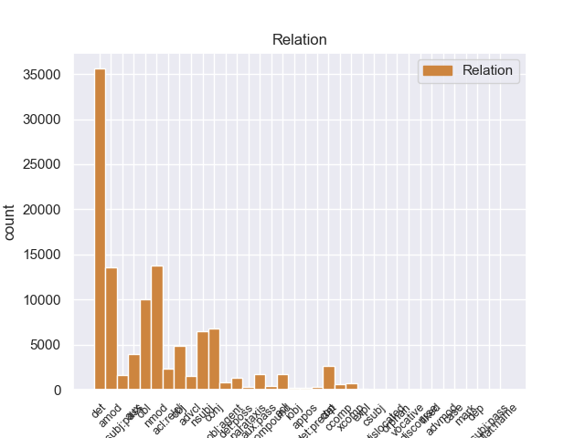
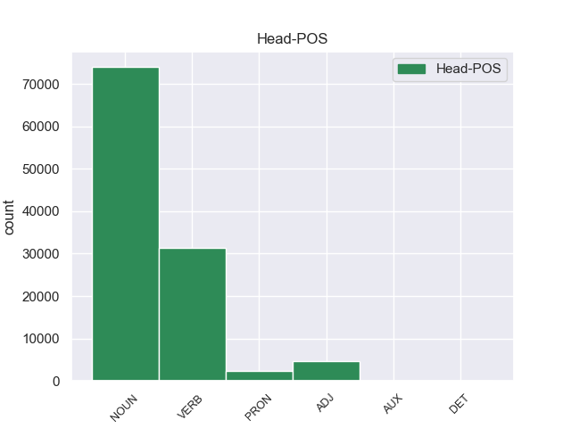
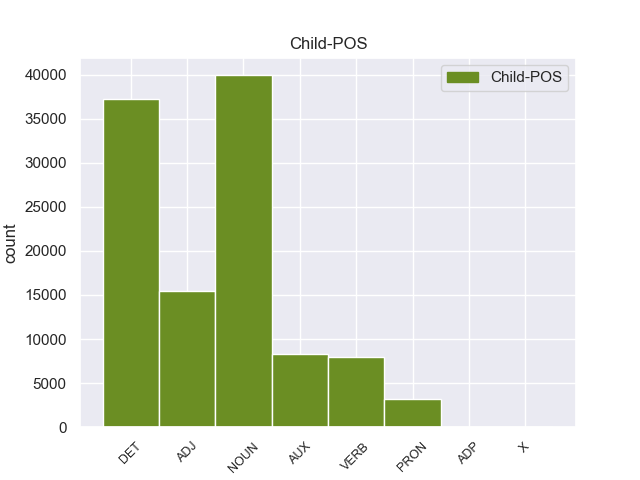

Distribution of features within this leaf



Agreement Rules sorted by frequency.
- When the dependent token is the determiner(det) of the head token, and the head token is NOUN and the dependent token is DET.
1 Mohammad _ _ _ _ 0 _ _ _
2 Khatami _ _ _ _ 0 _ _ _
3 , _ _ _ _ 0 _ _ _
4 il _ _ _ _ 0 _ _ _
5 presidente _ _ _ _ 0 _ _ _
6 di _ _ _ _ 0 _ _ _
7 l’ _ _ _ _ 0 _ _ _
8 Iran _ _ _ _ 0 _ _ _
9 , _ _ _ _ 0 _ _ _
10 si _ _ _ _ 0 _ _ _
11 è _ _ _ _ 0 _ _ _
12 impegnato _ _ _ _ 0 _ _ _
13 a _ _ _ _ 0 _ _ _
14 ricostruire _ _ _ _ 0 _ _ _
15 il il DET RD Definite=Def|Gender=Masc|Number=Sing|PronType=Art 16 det 16:det _
16 centro centro NOUN S Gender=Masc|Number=Sing 0 _ _ _
17 di _ _ _ _ 0 _ _ _
18 la _ _ _ _ 0 _ _ _
19 città _ _ _ _ 0 _ _ _
20 di _ _ _ _ 0 _ _ _
21 Bam _ _ _ _ 0 _ _ _
22 entro _ _ _ _ 0 _ _ _
23 2 _ _ _ _ 0 _ _ _
24 anni _ _ _ _ 0 _ _ _
25 . _ _ _ _ 0 _ _ _
1 Gli _ _ _ _ 0 _ _ _
2 edifici _ _ _ _ 0 _ _ _
3 di _ _ _ _ 0 _ _ _
4 il _ _ _ _ 0 _ _ _
5 centro _ _ _ _ 0 _ _ _
6 storico _ _ _ _ 0 _ _ _
7 erano _ _ _ _ 0 _ _ _
8 costruiti _ _ _ _ 0 _ _ _
9 con _ _ _ _ 0 _ _ _
10 l’ _ _ _ _ 0 _ _ _
11 argilla _ _ _ _ 0 _ _ _
12 rossa _ _ _ _ 0 _ _ _
13 di _ _ _ _ 0 _ _ _
14 il _ _ _ _ 0 _ _ _
15 deserto _ _ _ _ 0 _ _ _
16 , _ _ _ _ 0 _ _ _
17 un _ _ _ _ 0 _ _ _
18 materiale materiale NOUN S Gender=Masc|Number=Sing 0 _ _ _
19 molto _ _ _ _ 0 _ _ _
20 fragile fragile ADJ A Number=Sing 18 amod 18:amod SpaceAfter=No
21 . _ _ _ _ 0 _ _ _
1 Gli _ _ _ _ 0 _ _ _
2 edifici _ _ _ _ 0 _ _ _
3 di _ _ _ _ 0 _ _ _
4 il _ _ _ _ 0 _ _ _
5 centro _ _ _ _ 0 _ _ _
6 storico _ _ _ _ 0 _ _ _
7 erano _ _ _ _ 0 _ _ _
8 costruiti _ _ _ _ 0 _ _ _
9 con _ _ _ _ 0 _ _ _
10 l’ _ _ _ _ 0 _ _ _
11 argilla argilla NOUN S Gender=Fem|Number=Sing 0 _ _ _
12 rossa _ _ _ _ 0 _ _ _
13 di _ _ _ _ 0 _ _ _
14 il _ _ _ _ 0 _ _ _
15 deserto deserto NOUN S Gender=Masc|Number=Sing 11 nmod 11:nmod:di SpaceAfter=No
16 , _ _ _ _ 0 _ _ _
17 un _ _ _ _ 0 _ _ _
18 materiale _ _ _ _ 0 _ _ _
19 molto _ _ _ _ 0 _ _ _
20 fragile _ _ _ _ 0 _ _ _
21 . _ _ _ _ 0 _ _ _
1 Il _ _ _ _ 0 _ _ _
2 25 _ _ _ _ 0 _ _ _
3 dicembre _ _ _ _ 0 _ _ _
4 2003 _ _ _ _ 0 _ _ _
5 , _ _ _ _ 0 _ _ _
6 in _ _ _ _ 0 _ _ _
7 il _ _ _ _ 0 _ _ _
8 sud sud NOUN S Gender=Masc|Number=Sing 14 obl 14:obl:in _
9 di _ _ _ _ 0 _ _ _
10 l’ _ _ _ _ 0 _ _ _
11 Iran _ _ _ _ 0 _ _ _
12 c’ _ _ _ _ 0 _ _ _
13 è _ _ _ _ 0 _ _ _
14 stato essere VERB V Gender=Masc|Number=Sing|Tense=Past|VerbForm=Part 0 _ _ _
15 un _ _ _ _ 0 _ _ _
16 terremoto _ _ _ _ 0 _ _ _
17 molto _ _ _ _ 0 _ _ _
18 grave _ _ _ _ 0 _ _ _
19 . _ _ _ _ 0 _ _ _
1 Gli _ _ _ _ 0 _ _ _
2 edifici edificio NOUN S Gender=Masc|Number=Plur 8 nsubj 8:nsubj _
3 di _ _ _ _ 0 _ _ _
4 il _ _ _ _ 0 _ _ _
5 centro _ _ _ _ 0 _ _ _
6 storico _ _ _ _ 0 _ _ _
7 erano _ _ _ _ 0 _ _ _
8 costruiti costruire VERB V Gender=Masc|Number=Plur|Tense=Past|VerbForm=Part 0 _ _ _
9 con _ _ _ _ 0 _ _ _
10 l’ _ _ _ _ 0 _ _ _
11 argilla _ _ _ _ 0 _ _ _
12 rossa _ _ _ _ 0 _ _ _
13 di _ _ _ _ 0 _ _ _
14 il _ _ _ _ 0 _ _ _
15 deserto _ _ _ _ 0 _ _ _
16 , _ _ _ _ 0 _ _ _
17 un _ _ _ _ 0 _ _ _
18 materiale _ _ _ _ 0 _ _ _
19 molto _ _ _ _ 0 _ _ _
20 fragile _ _ _ _ 0 _ _ _
21 . _ _ _ _ 0 _ _ _
1 Mohammad _ _ _ _ 0 _ _ _
2 Khatami _ _ _ _ 0 _ _ _
3 , _ _ _ _ 0 _ _ _
4 il _ _ _ _ 0 _ _ _
5 presidente _ _ _ _ 0 _ _ _
6 di _ _ _ _ 0 _ _ _
7 l’ _ _ _ _ 0 _ _ _
8 Iran _ _ _ _ 0 _ _ _
9 , _ _ _ _ 0 _ _ _
10 si _ _ _ _ 0 _ _ _
11 è essere AUX VA Mood=Ind|Number=Sing|Person=3|Tense=Pres|VerbForm=Fin 12 aux 12:aux _
12 impegnato impegnare VERB V Gender=Masc|Number=Sing|Tense=Past|VerbForm=Part 0 _ _ _
13 a _ _ _ _ 0 _ _ _
14 ricostruire _ _ _ _ 0 _ _ _
15 il _ _ _ _ 0 _ _ _
16 centro _ _ _ _ 0 _ _ _
17 di _ _ _ _ 0 _ _ _
18 la _ _ _ _ 0 _ _ _
19 città _ _ _ _ 0 _ _ _
20 di _ _ _ _ 0 _ _ _
21 Bam _ _ _ _ 0 _ _ _
22 entro _ _ _ _ 0 _ _ _
23 2 _ _ _ _ 0 _ _ _
24 anni _ _ _ _ 0 _ _ _
25 . _ _ _ _ 0 _ _ _
1 Quando _ _ _ _ 0 _ _ _
2 il _ _ _ _ 0 _ _ _
3 terremoto _ _ _ _ 0 _ _ _
4 è _ _ _ _ 0 _ _ _
5 forte _ _ _ _ 0 _ _ _
6 , _ _ _ _ 0 _ _ _
7 si _ _ _ _ 0 _ _ _
8 rovinano _ _ _ _ 0 _ _ _
9 o _ _ _ _ 0 _ _ _
10 crollano _ _ _ _ 0 _ _ _
11 anche _ _ _ _ 0 _ _ _
12 le _ _ _ _ 0 _ _ _
13 case casa NOUN S Gender=Fem|Number=Plur 0 _ _ _
14 e _ _ _ _ 0 _ _ _
15 i _ _ _ _ 0 _ _ _
16 palazzi palazzo NOUN S Gender=Masc|Number=Plur 13 conj 8:nsubj|10:nsubj|13:conj:e SpaceAfter=No
17 . _ _ _ _ 0 _ _ _
1 Infatti _ _ _ _ 0 _ _ _
2 alcuni _ _ _ _ 0 _ _ _
3 esperti _ _ _ _ 0 _ _ _
4 hanno _ _ _ _ 0 _ _ _
5 organizzato organizzare VERB V Gender=Masc|Number=Sing|Tense=Past|VerbForm=Part 0 _ _ _
6 un _ _ _ _ 0 _ _ _
7 servizio servizio NOUN S Gender=Masc|Number=Sing 5 obj 5:obj _
8 di _ _ _ _ 0 _ _ _
9 trasporto _ _ _ _ 0 _ _ _
10 pubblico _ _ _ _ 0 _ _ _
11 con _ _ _ _ 0 _ _ _
12 le _ _ _ _ 0 _ _ _
13 barche _ _ _ _ 0 _ _ _
14 . _ _ _ _ 0 _ _ _
1 Durante _ _ _ _ 0 _ _ _
2 il _ _ _ _ 0 _ _ _
3 terremoto _ _ _ _ 0 _ _ _
4 in _ _ _ _ 0 _ _ _
5 Iran _ _ _ _ 0 _ _ _
6 , _ _ _ _ 0 _ _ _
7 sono _ _ _ _ 0 _ _ _
8 morte _ _ _ _ 0 _ _ _
9 moltissime _ _ _ _ 0 _ _ _
10 persone _ _ _ _ 0 _ _ _
11 e _ _ _ _ 0 _ _ _
12 il _ _ _ _ 0 _ _ _
13 centro _ _ _ _ 0 _ _ _
14 storico _ _ _ _ 0 _ _ _
15 di _ _ _ _ 0 _ _ _
16 la _ _ _ _ 0 _ _ _
17 città _ _ _ _ 0 _ _ _
18 di _ _ _ _ 0 _ _ _
19 Bam _ _ _ _ 0 _ _ _
20 è _ _ _ _ 0 _ _ _
21 stato essere AUX VA Gender=Masc|Number=Sing|Tense=Past|VerbForm=Part 23 aux:pass 23:aux:pass _
22 completamente _ _ _ _ 0 _ _ _
23 distrutto distruggere VERB V Gender=Masc|Number=Sing|Tense=Past|VerbForm=Part 0 _ _ _
24 . _ _ _ _ 0 _ _ _
1 Il _ _ _ _ 0 _ _ _
2 riso _ _ _ _ 0 _ _ _
3 integrale _ _ _ _ 0 _ _ _
4 , _ _ _ _ 0 _ _ _
5 cioè _ _ _ _ 0 _ _ _
6 il _ _ _ _ 0 _ _ _
7 riso _ _ _ _ 0 _ _ _
8 con _ _ _ _ 0 _ _ _
9 i _ _ _ _ 0 _ _ _
10 chicchi chicco NOUN S Gender=Masc|Number=Plur 0 _ _ _
11 coperti coprire VERB V Gender=Masc|Number=Plur|Tense=Past|VerbForm=Part 10 acl 10:acl _
12 da _ _ _ _ 0 _ _ _
13 la _ _ _ _ 0 _ _ _
14 buccia _ _ _ _ 0 _ _ _
15 , _ _ _ _ 0 _ _ _
16 contiene _ _ _ _ 0 _ _ _
17 anche _ _ _ _ 0 _ _ _
18 molta _ _ _ _ 0 _ _ _
19 fibra _ _ _ _ 0 _ _ _
20 . _ _ _ _ 0 _ _ _
1 Su _ _ _ _ 0 _ _ _
2 le _ _ _ _ 0 _ _ _
3 barche _ _ _ _ 0 _ _ _
4 i _ _ _ _ 0 _ _ _
5 turisti _ _ _ _ 0 _ _ _
6 possono _ _ _ _ 0 _ _ _
7 ascoltare _ _ _ _ 0 _ _ _
8 la _ _ _ _ 0 _ _ _
9 descrizione _ _ _ _ 0 _ _ _
10 e _ _ _ _ 0 _ _ _
11 la _ _ _ _ 0 _ _ _
12 storia _ _ _ _ 0 _ _ _
13 di _ _ _ _ 0 _ _ _
14 i _ _ _ _ 0 _ _ _
15 monumenti monumento NOUN S Gender=Masc|Number=Plur 0 _ _ _
16 che _ _ _ _ 0 _ _ _
17 si _ _ _ _ 0 _ _ _
18 vedono vedere VERB V Mood=Ind|Number=Plur|Person=3|Tense=Pres|VerbForm=Fin 15 acl:relcl 15:acl:relcl _
19 da _ _ _ _ 0 _ _ _
20 il _ _ _ _ 0 _ _ _
21 fiume _ _ _ _ 0 _ _ _
22 . _ _ _ _ 0 _ _ _
1 Durante _ _ _ _ 0 _ _ _
2 il _ _ _ _ 0 _ _ _
3 terremoto _ _ _ _ 0 _ _ _
4 in _ _ _ _ 0 _ _ _
5 Iran _ _ _ _ 0 _ _ _
6 , _ _ _ _ 0 _ _ _
7 sono _ _ _ _ 0 _ _ _
8 morte _ _ _ _ 0 _ _ _
9 moltissime _ _ _ _ 0 _ _ _
10 persone _ _ _ _ 0 _ _ _
11 e _ _ _ _ 0 _ _ _
12 il _ _ _ _ 0 _ _ _
13 centro centro NOUN S Gender=Masc|Number=Sing 23 nsubj:pass 23:nsubj:pass _
14 storico _ _ _ _ 0 _ _ _
15 di _ _ _ _ 0 _ _ _
16 la _ _ _ _ 0 _ _ _
17 città _ _ _ _ 0 _ _ _
18 di _ _ _ _ 0 _ _ _
19 Bam _ _ _ _ 0 _ _ _
20 è _ _ _ _ 0 _ _ _
21 stato _ _ _ _ 0 _ _ _
22 completamente _ _ _ _ 0 _ _ _
23 distrutto distruggere VERB V Gender=Masc|Number=Sing|Tense=Past|VerbForm=Part 0 _ _ _
24 . _ _ _ _ 0 _ _ _
1 Quando _ _ _ _ 0 _ _ _
2 il _ _ _ _ 0 _ _ _
3 terremoto _ _ _ _ 0 _ _ _
4 è _ _ _ _ 0 _ _ _
5 forte _ _ _ _ 0 _ _ _
6 , _ _ _ _ 0 _ _ _
7 si _ _ _ _ 0 _ _ _
8 rovinano rovinare VERB V Mood=Ind|Number=Plur|Person=3|Tense=Pres|VerbForm=Fin 0 _ _ _
9 o _ _ _ _ 0 _ _ _
10 crollano crollare VERB V Mood=Ind|Number=Plur|Person=3|Tense=Pres|VerbForm=Fin 8 conj 8:conj:o _
11 anche _ _ _ _ 0 _ _ _
12 le _ _ _ _ 0 _ _ _
13 case _ _ _ _ 0 _ _ _
14 e _ _ _ _ 0 _ _ _
15 i _ _ _ _ 0 _ _ _
16 palazzi _ _ _ _ 0 _ _ _
17 . _ _ _ _ 0 _ _ _
1 Per _ _ _ _ 0 _ _ _
2 visitare _ _ _ _ 0 _ _ _
3 le _ _ _ _ 0 _ _ _
4 mostre _ _ _ _ 0 _ _ _
5 possiamo _ _ _ _ 0 _ _ _
6 acquistare _ _ _ _ 0 _ _ _
7 il _ _ _ _ 0 _ _ _
8 biglietto _ _ _ _ 0 _ _ _
9 il _ _ _ _ 0 _ _ _
10 giorno _ _ _ _ 0 _ _ _
11 stesso _ _ _ _ 0 _ _ _
12 di _ _ _ _ 0 _ _ _
13 la _ _ _ _ 0 _ _ _
14 nostra nostro DET AP Gender=Fem|Number=Sing|Poss=Yes|PronType=Prs 15 det:poss 15:det:poss _
15 visita visita NOUN S Gender=Fem|Number=Sing 0 _ _ _
16 in _ _ _ _ 0 _ _ _
17 le _ _ _ _ 0 _ _ _
18 sedi _ _ _ _ 0 _ _ _
19 di _ _ _ _ 0 _ _ _
20 le _ _ _ _ 0 _ _ _
21 varie _ _ _ _ 0 _ _ _
22 mostre _ _ _ _ 0 _ _ _
23 . _ _ _ _ 0 _ _ _
1 Quando _ _ _ _ 0 _ _ _
2 il _ _ _ _ 0 _ _ _
3 terremoto _ _ _ _ 0 _ _ _
4 è essere AUX V Mood=Ind|Number=Sing|Person=3|Tense=Pres|VerbForm=Fin 5 cop 5:cop _
5 forte forte ADJ A Number=Sing 0 _ _ _
6 , _ _ _ _ 0 _ _ _
7 si _ _ _ _ 0 _ _ _
8 rovinano _ _ _ _ 0 _ _ _
9 o _ _ _ _ 0 _ _ _
10 crollano _ _ _ _ 0 _ _ _
11 anche _ _ _ _ 0 _ _ _
12 le _ _ _ _ 0 _ _ _
13 case _ _ _ _ 0 _ _ _
14 e _ _ _ _ 0 _ _ _
15 i _ _ _ _ 0 _ _ _
16 palazzi _ _ _ _ 0 _ _ _
17 . _ _ _ _ 0 _ _ _
1 Il _ _ _ _ 0 _ _ _
2 centro _ _ _ _ 0 _ _ _
3 storico _ _ _ _ 0 _ _ _
4 era _ _ _ _ 0 _ _ _
5 la _ _ _ _ 0 _ _ _
6 parte _ _ _ _ 0 _ _ _
7 più _ _ _ _ 0 _ _ _
8 antica _ _ _ _ 0 _ _ _
9 di _ _ _ _ 0 _ _ _
10 Bam _ _ _ _ 0 _ _ _
11 che _ _ _ _ 0 _ _ _
12 era essere AUX V Mood=Ind|Number=Sing|Person=3|Tense=Imp|VerbForm=Fin 13 cop 13:cop _
13 patrimonio patrimonio NOUN S Gender=Masc|Number=Sing 0 _ _ _
14 artistico _ _ _ _ 0 _ _ _
15 di _ _ _ _ 0 _ _ _
16 tutta _ _ _ _ 0 _ _ _
17 l’ _ _ _ _ 0 _ _ _
18 umanità _ _ _ _ 0 _ _ _
19 . _ _ _ _ 0 _ _ _
1 La _ _ _ _ 0 _ _ _
2 Costituzione _ _ _ _ 0 _ _ _
3 italiana _ _ _ _ 0 _ _ _
4 prevede _ _ _ _ 0 _ _ _
5 4 _ _ _ _ 0 _ _ _
6 tipi _ _ _ _ 0 _ _ _
7 di _ _ _ _ 0 _ _ _
8 referendum _ _ _ _ 0 _ _ _
9 : _ _ _ _ 0 _ _ _
10 abrogativo abrogativo ADJ A Gender=Masc|Number=Sing 0 _ _ _
11 , _ _ _ _ 0 _ _ _
12 territoriale _ _ _ _ 0 _ _ _
13 , _ _ _ _ 0 _ _ _
14 consultivo _ _ _ _ 0 _ _ _
15 e _ _ _ _ 0 _ _ _
16 costituzionale costituzionale ADJ A Number=Sing 10 conj 6:amod|10:conj:e SpaceAfter=No
17 . _ _ _ _ 0 _ _ _
1 Quando _ _ _ _ 0 _ _ _
2 c’ _ _ _ _ 0 _ _ _
3 è essere VERB V Mood=Ind|Number=Sing|Person=3|Tense=Pres|VerbForm=Fin 8 advcl 8:advcl _
4 il _ _ _ _ 0 _ _ _
5 terremoto _ _ _ _ 0 _ _ _
6 la _ _ _ _ 0 _ _ _
7 terra _ _ _ _ 0 _ _ _
8 trema tremare VERB V Mood=Ind|Number=Sing|Person=3|Tense=Pres|VerbForm=Fin 0 _ _ _
9 e _ _ _ _ 0 _ _ _
10 si _ _ _ _ 0 _ _ _
11 muove _ _ _ _ 0 _ _ _
12 . _ _ _ _ 0 _ _ _
1 Ci _ _ _ _ 0 _ _ _
2 sono _ _ _ _ 0 _ _ _
3 diversi _ _ _ _ 0 _ _ _
4 tipi _ _ _ _ 0 _ _ _
5 di _ _ _ _ 0 _ _ _
6 riso _ _ _ _ 0 _ _ _
7 , _ _ _ _ 0 _ _ _
8 adatti adatto ADJ A Gender=Masc|Number=Plur 0 _ _ _
9 per _ _ _ _ 0 _ _ _
10 le _ _ _ _ 0 _ _ _
11 varie _ _ _ _ 0 _ _ _
12 ricette ricetta NOUN S Gender=Fem|Number=Plur 8 obl 8:obl:per SpaceAfter=No
13 . _ _ _ _ 0 _ _ _
1 Quando _ _ _ _ 0 _ _ _
2 il _ _ _ _ 0 _ _ _
3 terremoto terremoto NOUN S Gender=Masc|Number=Sing 5 nsubj 5:nsubj _
4 è _ _ _ _ 0 _ _ _
5 forte forte ADJ A Number=Sing 0 _ _ _
6 , _ _ _ _ 0 _ _ _
7 si _ _ _ _ 0 _ _ _
8 rovinano _ _ _ _ 0 _ _ _
9 o _ _ _ _ 0 _ _ _
10 crollano _ _ _ _ 0 _ _ _
11 anche _ _ _ _ 0 _ _ _
12 le _ _ _ _ 0 _ _ _
13 case _ _ _ _ 0 _ _ _
14 e _ _ _ _ 0 _ _ _
15 i _ _ _ _ 0 _ _ _
16 palazzi _ _ _ _ 0 _ _ _
17 . _ _ _ _ 0 _ _ _
1 Così _ _ _ _ 0 _ _ _
2 i _ _ _ _ 0 _ _ _
3 piloti _ _ _ _ 0 _ _ _
4 perdono _ _ _ _ 0 _ _ _
5 secondi _ _ _ _ 0 _ _ _
6 importanti _ _ _ _ 0 _ _ _
7 e _ _ _ _ 0 _ _ _
8 le _ _ _ _ 0 _ _ _
9 altre _ _ _ _ 0 _ _ _
10 macchine _ _ _ _ 0 _ _ _
11 li li PRON PC Clitic=Yes|Gender=Masc|Number=Plur|Person=3|PronType=Prs 12 obj 12:obj _
12 superano superare VERB V Mood=Ind|Number=Plur|Person=3|Tense=Pres|VerbForm=Fin 0 _ _ _
13 . _ _ _ _ 0 _ _ _
1 I _ _ _ _ 0 _ _ _
2 Rapid _ _ _ _ 0 _ _ _
3 Eyes _ _ _ _ 0 _ _ _
4 Movements _ _ _ _ 0 _ _ _
5 sono _ _ _ _ 0 _ _ _
6 i _ _ _ _ 0 _ _ _
7 movimenti _ _ _ _ 0 _ _ _
8 che _ _ _ _ 0 _ _ _
9 i _ _ _ _ 0 _ _ _
10 nostri _ _ _ _ 0 _ _ _
11 occhi _ _ _ _ 0 _ _ _
12 fanno _ _ _ _ 0 _ _ _
13 quando _ _ _ _ 0 _ _ _
14 noi noi PRON PE Number=Plur|Person=1|PronType=Prs 15 nsubj 15:nsubj|18:nsubj _
15 dormiamo dormire VERB V Mood=Ind|Number=Plur|Person=1|Tense=Pres|VerbForm=Fin 0 _ _ _
16 profondamente _ _ _ _ 0 _ _ _
17 e _ _ _ _ 0 _ _ _
18 sogniamo _ _ _ _ 0 _ _ _
19 . _ _ _ _ 0 _ _ _
1 Invece _ _ _ _ 0 _ _ _
2 Agassi _ _ _ _ 0 _ _ _
3 è _ _ _ _ 0 _ _ _
4 stato _ _ _ _ 0 _ _ _
5 eliminato eliminare VERB V Gender=Masc|Number=Sing|Tense=Past|VerbForm=Part 0 _ _ _
6 da _ _ _ _ 0 _ _ _
7 il _ _ _ _ 0 _ _ _
8 tennista tennista NOUN S Gender=Masc|Number=Sing 5 obl:agent 5:obl:agent:da _
9 spagnolo _ _ _ _ 0 _ _ _
10 David _ _ _ _ 0 _ _ _
11 Ferrer _ _ _ _ 0 _ _ _
12 . _ _ _ _ 0 _ _ _
1 La _ _ _ _ 0 _ _ _
2 capitale _ _ _ _ 0 _ _ _
3 di _ _ _ _ 0 _ _ _
4 Haiti _ _ _ _ 0 _ _ _
5 è _ _ _ _ 0 _ _ _
6 Port-au-Prince _ _ _ _ 0 _ _ _
7 Haiti _ _ _ _ 0 _ _ _
8 è essere AUX V Mood=Ind|Number=Sing|Person=3|Tense=Pres|VerbForm=Fin 9 cop 9:cop _
9 uno uno PRON PI Gender=Masc|Number=Sing|PronType=Ind 0 _ _ _
10 di _ _ _ _ 0 _ _ _
11 i _ _ _ _ 0 _ _ _
12 paesi _ _ _ _ 0 _ _ _
13 più _ _ _ _ 0 _ _ _
14 poveri _ _ _ _ 0 _ _ _
15 di _ _ _ _ 0 _ _ _
16 il _ _ _ _ 0 _ _ _
17 mondo _ _ _ _ 0 _ _ _
18 : _ _ _ _ 0 _ _ _
1 Referendum _ _ _ _ 0 _ _ _
2 è _ _ _ _ 0 _ _ _
3 una _ _ _ _ 0 _ _ _
4 parola _ _ _ _ 0 _ _ _
5 latina _ _ _ _ 0 _ _ _
6 e _ _ _ _ 0 _ _ _
7 indica _ _ _ _ 0 _ _ _
8 la _ _ _ _ 0 _ _ _
9 votazione _ _ _ _ 0 _ _ _
10 con _ _ _ _ 0 _ _ _
11 la il DET RD Definite=Def|Gender=Fem|Number=Sing|PronType=Art 12 det 12:det _
12 quale quale PRON PR Number=Sing|PronType=Rel 0 _ _ _
13 tutti _ _ _ _ 0 _ _ _
14 i _ _ _ _ 0 _ _ _
15 cittadini _ _ _ _ 0 _ _ _
16 decidono _ _ _ _ 0 _ _ _
17 direttamente _ _ _ _ 0 _ _ _
18 qualcosa _ _ _ _ 0 _ _ _
19 . _ _ _ _ 0 _ _ _
1 I _ _ _ _ 0 _ _ _
2 ricercatori _ _ _ _ 0 _ _ _
3 di _ _ _ _ 0 _ _ _
4 il _ _ _ _ 0 _ _ _
5 Censis _ _ _ _ 0 _ _ _
6 , _ _ _ _ 0 _ _ _
7 Centro _ _ _ _ 0 _ _ _
8 Studi studio NOUN S Gender=Masc|Number=Plur 0 _ _ _
9 Investimenti investimento NOUN S Gender=Masc|Number=Plur 8 compound 8:compound _
10 Sociali _ _ _ _ 0 _ _ _
11 , _ _ _ _ 0 _ _ _
12 hanno _ _ _ _ 0 _ _ _
13 presentato _ _ _ _ 0 _ _ _
14 un _ _ _ _ 0 _ _ _
15 rapporto _ _ _ _ 0 _ _ _
16 su _ _ _ _ 0 _ _ _
17 le _ _ _ _ 0 _ _ _
18 condizioni _ _ _ _ 0 _ _ _
19 di _ _ _ _ 0 _ _ _
20 vita _ _ _ _ 0 _ _ _
21 di _ _ _ _ 0 _ _ _
22 la _ _ _ _ 0 _ _ _
23 popolazione _ _ _ _ 0 _ _ _
24 italiana _ _ _ _ 0 _ _ _
25 in _ _ _ _ 0 _ _ _
26 il _ _ _ _ 0 _ _ _
27 2003 _ _ _ _ 0 _ _ _
28 . _ _ _ _ 0 _ _ _
1 Con _ _ _ _ 0 _ _ _
2 le _ _ _ _ 0 _ _ _
3 nuove _ _ _ _ 0 _ _ _
4 regole _ _ _ _ 0 _ _ _
5 partecipare _ _ _ _ 0 _ _ _
6 a _ _ _ _ 0 _ _ _
7 la _ _ _ _ 0 _ _ _
8 gara _ _ _ _ 0 _ _ _
9 diventa diventare VERB V Mood=Ind|Number=Sing|Person=3|Tense=Pres|VerbForm=Fin 0 _ _ _
10 meno _ _ _ _ 0 _ _ _
11 costoso costoso ADJ A Gender=Masc|Number=Sing 9 xcomp 9:xcomp SpaceAfter=No
12 . _ _ _ _ 0 _ _ _
1 Il _ _ _ _ 0 _ _ _
2 centro centro NOUN S Gender=Masc|Number=Sing 6 nsubj 6:nsubj _
3 storico _ _ _ _ 0 _ _ _
4 era _ _ _ _ 0 _ _ _
5 la _ _ _ _ 0 _ _ _
6 parte parte NOUN S Gender=Fem|Number=Sing 0 _ _ _
7 più _ _ _ _ 0 _ _ _
8 antica _ _ _ _ 0 _ _ _
9 di _ _ _ _ 0 _ _ _
10 Bam _ _ _ _ 0 _ _ _
11 che _ _ _ _ 0 _ _ _
12 era _ _ _ _ 0 _ _ _
13 patrimonio _ _ _ _ 0 _ _ _
14 artistico _ _ _ _ 0 _ _ _
15 di _ _ _ _ 0 _ _ _
16 tutta _ _ _ _ 0 _ _ _
17 l’ _ _ _ _ 0 _ _ _
18 umanità _ _ _ _ 0 _ _ _
19 . _ _ _ _ 0 _ _ _
1 Il _ _ _ _ 0 _ _ _
2 centro _ _ _ _ 0 _ _ _
3 storico _ _ _ _ 0 _ _ _
4 era _ _ _ _ 0 _ _ _
5 la _ _ _ _ 0 _ _ _
6 parte _ _ _ _ 0 _ _ _
7 più _ _ _ _ 0 _ _ _
8 antica _ _ _ _ 0 _ _ _
9 di _ _ _ _ 0 _ _ _
10 Bam _ _ _ _ 0 _ _ _
11 che _ _ _ _ 0 _ _ _
12 era _ _ _ _ 0 _ _ _
13 patrimonio _ _ _ _ 0 _ _ _
14 artistico _ _ _ _ 0 _ _ _
15 di _ _ _ _ 0 _ _ _
16 tutta tutto DET T Gender=Fem|Number=Sing|PronType=Tot 18 det:predet 18:det:predet _
17 l’ _ _ _ _ 0 _ _ _
18 umanità umanità NOUN S Gender=Fem|Number=Sing 0 _ _ _
19 . _ _ _ _ 0 _ _ _
1 Questo _ _ _ _ 0 _ _ _
2 tipo _ _ _ _ 0 _ _ _
3 di _ _ _ _ 0 _ _ _
4 riso _ _ _ _ 0 _ _ _
5 è _ _ _ _ 0 _ _ _
6 indicato indicare VERB V Gender=Masc|Number=Sing|Tense=Past|VerbForm=Part 0 _ _ _
7 per _ _ _ _ 0 _ _ _
8 chi chi PRON PR Number=Sing|PronType=Rel 6 obl 6:obl:per _
9 ha _ _ _ _ 0 _ _ _
10 disturbi _ _ _ _ 0 _ _ _
11 di _ _ _ _ 0 _ _ _
12 digestione _ _ _ _ 0 _ _ _
13 , _ _ _ _ 0 _ _ _
14 per _ _ _ _ 0 _ _ _
15 gli _ _ _ _ 0 _ _ _
16 anziani _ _ _ _ 0 _ _ _
17 e _ _ _ _ 0 _ _ _
18 i _ _ _ _ 0 _ _ _
19 bambini _ _ _ _ 0 _ _ _
20 . _ _ _ _ 0 _ _ _
1 Per _ _ _ _ 0 _ _ _
2 esempio _ _ _ _ 0 _ _ _
3 , _ _ _ _ 0 _ _ _
4 per _ _ _ _ 0 _ _ _
5 i _ _ _ _ 0 _ _ _
6 bambini _ _ _ _ 0 _ _ _
7 piccoli _ _ _ _ 0 _ _ _
8 i _ _ _ _ 0 _ _ _
9 giocattoli giocattolo NOUN S Gender=Masc|Number=Plur 12 nsubj 12:nsubj _
10 sicuri _ _ _ _ 0 _ _ _
11 sono _ _ _ _ 0 _ _ _
12 quelli quello PRON PD Gender=Masc|Number=Plur|PronType=Dem 0 _ _ _
13 che _ _ _ _ 0 _ _ _
14 non _ _ _ _ 0 _ _ _
15 hanno _ _ _ _ 0 _ _ _
16 parti _ _ _ _ 0 _ _ _
17 troppo _ _ _ _ 0 _ _ _
18 piccole _ _ _ _ 0 _ _ _
19 . _ _ _ _ 0 _ _ _
1 Questo _ _ _ _ 0 _ _ _
2 tipo _ _ _ _ 0 _ _ _
3 di _ _ _ _ 0 _ _ _
4 riso _ _ _ _ 0 _ _ _
5 è _ _ _ _ 0 _ _ _
6 indicato _ _ _ _ 0 _ _ _
7 per _ _ _ _ 0 _ _ _
8 chi chi PRON PR Number=Sing|PronType=Rel 0 _ _ _
9 ha avere VERB V Mood=Ind|Number=Sing|Person=3|Tense=Pres|VerbForm=Fin 8 acl:relcl 8:acl:relcl _
10 disturbi _ _ _ _ 0 _ _ _
11 di _ _ _ _ 0 _ _ _
12 digestione _ _ _ _ 0 _ _ _
13 , _ _ _ _ 0 _ _ _
14 per _ _ _ _ 0 _ _ _
15 gli _ _ _ _ 0 _ _ _
16 anziani _ _ _ _ 0 _ _ _
17 e _ _ _ _ 0 _ _ _
18 i _ _ _ _ 0 _ _ _
19 bambini _ _ _ _ 0 _ _ _
20 . _ _ _ _ 0 _ _ _
1 Ora _ _ _ _ 0 _ _ _
2 , _ _ _ _ 0 _ _ _
3 le _ _ _ _ 0 _ _ _
4 squadre _ _ _ _ 0 _ _ _
5 automobilistiche _ _ _ _ 0 _ _ _
6 devono _ _ _ _ 0 _ _ _
7 costruire _ _ _ _ 0 _ _ _
8 e _ _ _ _ 0 _ _ _
9 usare _ _ _ _ 0 _ _ _
10 un _ _ _ _ 0 _ _ _
11 solo _ _ _ _ 0 _ _ _
12 motore _ _ _ _ 0 _ _ _
13 , _ _ _ _ 0 _ _ _
14 che _ _ _ _ 0 _ _ _
15 deve _ _ _ _ 0 _ _ _
16 essere _ _ _ _ 0 _ _ _
17 lo lo DET RD Definite=Def|Gender=Masc|Number=Sing|PronType=Art 18 det 18:det _
18 stesso stesso ADJ A Gender=Masc|Number=Sing 0 _ _ _
19 per _ _ _ _ 0 _ _ _
20 il _ _ _ _ 0 _ _ _
21 giro _ _ _ _ 0 _ _ _
22 di _ _ _ _ 0 _ _ _
23 qualifica _ _ _ _ 0 _ _ _
24 e _ _ _ _ 0 _ _ _
25 per _ _ _ _ 0 _ _ _
26 la _ _ _ _ 0 _ _ _
27 gara _ _ _ _ 0 _ _ _
28 . _ _ _ _ 0 _ _ _
1 Oscar _ _ _ _ 0 _ _ _
2 Berger _ _ _ _ 0 _ _ _
3 ha _ _ _ _ 0 _ _ _
4 promesso promettere VERB V Gender=Masc|Number=Sing|Tense=Past|VerbForm=Part 0 _ _ _
5 che _ _ _ _ 0 _ _ _
6 il _ _ _ _ 0 _ _ _
7 nuovo _ _ _ _ 0 _ _ _
8 governo _ _ _ _ 0 _ _ _
9 lavorerà lavorare VERB V Mood=Ind|Number=Sing|Person=3|Tense=Fut|VerbForm=Fin 4 ccomp 4:ccomp _
10 per _ _ _ _ 0 _ _ _
11 migliorare _ _ _ _ 0 _ _ _
12 le _ _ _ _ 0 _ _ _
13 condizioni _ _ _ _ 0 _ _ _
14 di _ _ _ _ 0 _ _ _
15 vita _ _ _ _ 0 _ _ _
16 di _ _ _ _ 0 _ _ _
17 la _ _ _ _ 0 _ _ _
18 popolazione _ _ _ _ 0 _ _ _
19 di _ _ _ _ 0 _ _ _
20 il _ _ _ _ 0 _ _ _
21 Guatemala _ _ _ _ 0 _ _ _
22 , _ _ _ _ 0 _ _ _
23 soprattutto _ _ _ _ 0 _ _ _
24 di _ _ _ _ 0 _ _ _
25 i _ _ _ _ 0 _ _ _
26 contadini _ _ _ _ 0 _ _ _
27 , _ _ _ _ 0 _ _ _
28 e _ _ _ _ 0 _ _ _
29 per _ _ _ _ 0 _ _ _
30 eliminare _ _ _ _ 0 _ _ _
31 la _ _ _ _ 0 _ _ _
32 povertà _ _ _ _ 0 _ _ _
33 . _ _ _ _ 0 _ _ _
1 Perciò _ _ _ _ 0 _ _ _
2 , _ _ _ _ 0 _ _ _
3 tutti _ _ _ _ 0 _ _ _
4 i _ _ _ _ 0 _ _ _
5 Paesi paese NOUN S Gender=Masc|Number=Plur 0 _ _ _
6 di _ _ _ _ 0 _ _ _
7 il _ _ _ _ 0 _ _ _
8 mondo _ _ _ _ 0 _ _ _
9 , _ _ _ _ 0 _ _ _
10 specialmente _ _ _ _ 0 _ _ _
11 quelli quello PRON PD Gender=Masc|Number=Plur|PronType=Dem 5 nmod 5:nmod _
12 più _ _ _ _ 0 _ _ _
13 ricchi _ _ _ _ 0 _ _ _
14 , _ _ _ _ 0 _ _ _
15 devono _ _ _ _ 0 _ _ _
16 impegnar _ _ _ _ 0 _ _ _
17 si _ _ _ _ 0 _ _ _
18 di _ _ _ _ 0 _ _ _
19 più _ _ _ _ 0 _ _ _
20 per _ _ _ _ 0 _ _ _
21 migliorare _ _ _ _ 0 _ _ _
22 le _ _ _ _ 0 _ _ _
23 condizioni _ _ _ _ 0 _ _ _
24 di _ _ _ _ 0 _ _ _
25 vita _ _ _ _ 0 _ _ _
26 di _ _ _ _ 0 _ _ _
27 tutti _ _ _ _ 0 _ _ _
28 i _ _ _ _ 0 _ _ _
29 bambini _ _ _ _ 0 _ _ _
30 . _ _ _ _ 0 _ _ _
1 La _ _ _ _ 0 _ _ _
2 parola _ _ _ _ 0 _ _ _
3 presepe _ _ _ _ 0 _ _ _
4 o _ _ _ _ 0 _ _ _
5 presepio _ _ _ _ 0 _ _ _
6 significa significare VERB V Mood=Ind|Number=Sing|Person=3|Tense=Pres|VerbForm=Fin 0 _ _ _
7 “ _ _ _ _ 0 _ _ _
8 recinto recinto NOUN S Gender=Masc|Number=Sing 6 xcomp 6:xcomp _
9 chiuso _ _ _ _ 0 _ _ _
10 ” _ _ _ _ 0 _ _ _
11 , _ _ _ _ 0 _ _ _
12 cioè _ _ _ _ 0 _ _ _
13 mangiatoia _ _ _ _ 0 _ _ _
14 . _ _ _ _ 0 _ _ _
1 Gli _ _ _ _ 0 _ _ _
2 edifici _ _ _ _ 0 _ _ _
3 di _ _ _ _ 0 _ _ _
4 il _ _ _ _ 0 _ _ _
5 centro _ _ _ _ 0 _ _ _
6 storico _ _ _ _ 0 _ _ _
7 erano _ _ _ _ 0 _ _ _
8 costruiti _ _ _ _ 0 _ _ _
9 con _ _ _ _ 0 _ _ _
10 l’ _ _ _ _ 0 _ _ _
11 argilla argilla NOUN S Gender=Fem|Number=Sing 0 _ _ _
12 rossa _ _ _ _ 0 _ _ _
13 di _ _ _ _ 0 _ _ _
14 il _ _ _ _ 0 _ _ _
15 deserto _ _ _ _ 0 _ _ _
16 , _ _ _ _ 0 _ _ _
17 un _ _ _ _ 0 _ _ _
18 materiale materiale NOUN S Gender=Masc|Number=Sing 11 appos 11:appos _
19 molto _ _ _ _ 0 _ _ _
20 fragile _ _ _ _ 0 _ _ _
21 . _ _ _ _ 0 _ _ _
1 Inoltre _ _ _ _ 0 _ _ _
2 dobbiamo _ _ _ _ 0 _ _ _
3 comprare _ _ _ _ 0 _ _ _
4 i _ _ _ _ 0 _ _ _
5 colori _ _ _ _ 0 _ _ _
6 che _ _ _ _ 0 _ _ _
7 ci ci PRON PC Clitic=Yes|Number=Plur|Person=1|PronType=Prs 8 iobj 8:iobj _
8 piacciono piacere VERB V Mood=Ind|Number=Plur|Person=3|Tense=Pres|VerbForm=Fin 0 _ _ _
9 di _ _ _ _ 0 _ _ _
10 più _ _ _ _ 0 _ _ _
11 per _ _ _ _ 0 _ _ _
12 stampare _ _ _ _ 0 _ _ _
13 e _ _ _ _ 0 _ _ _
14 dipingere _ _ _ _ 0 _ _ _
15 le _ _ _ _ 0 _ _ _
16 stoffe _ _ _ _ 0 _ _ _
17 . _ _ _ _ 0 _ _ _
1 In _ _ _ _ 0 _ _ _
2 il _ _ _ _ 0 _ _ _
3 presepe _ _ _ _ 0 _ _ _
4 , _ _ _ _ 0 _ _ _
5 la _ _ _ _ 0 _ _ _
6 statuetta _ _ _ _ 0 _ _ _
7 che _ _ _ _ 0 _ _ _
8 rappresenta _ _ _ _ 0 _ _ _
9 Gesù _ _ _ _ 0 _ _ _
10 Bambino _ _ _ _ 0 _ _ _
11 viene _ _ _ _ 0 _ _ _
12 messa _ _ _ _ 0 _ _ _
13 la _ _ _ _ 0 _ _ _
14 notte notte NOUN S Gender=Fem|Number=Sing 0 _ _ _
15 tra _ _ _ _ 0 _ _ _
16 il _ _ _ _ 0 _ _ _
17 24 _ _ _ _ 0 _ _ _
18 e _ _ _ _ 0 _ _ _
19 il _ _ _ _ 0 _ _ _
20 25 _ _ _ _ 0 _ _ _
21 dicembre _ _ _ _ 0 _ _ _
22 , _ _ _ _ 0 _ _ _
23 quando _ _ _ _ 0 _ _ _
24 è _ _ _ _ 0 _ _ _
25 nato nascere VERB V Gender=Masc|Number=Sing|Tense=Past|VerbForm=Part 14 advcl 14:advcl:quando _
26 Gesù _ _ _ _ 0 _ _ _
27 Bambino _ _ _ _ 0 _ _ _
28 . _ _ _ _ 0 _ _ _
1 Le _ _ _ _ 0 _ _ _
2 canzoni _ _ _ _ 0 _ _ _
3 di _ _ _ _ 0 _ _ _
4 il _ _ _ _ 0 _ _ _
5 nuovo _ _ _ _ 0 _ _ _
6 disco _ _ _ _ 0 _ _ _
7 di _ _ _ _ 0 _ _ _
8 Mina _ _ _ _ 0 _ _ _
9 , _ _ _ _ 0 _ _ _
10 Bula _ _ _ _ 0 _ _ _
11 Bula _ _ _ _ 0 _ _ _
12 sono _ _ _ _ 0 _ _ _
13 tutte tutto PRON PI Gender=Fem|Number=Plur|PronType=Ind 14 obl 14:obl _
14 nuove nuovo ADJ A Gender=Fem|Number=Plur 0 _ _ _
15 . _ _ _ _ 0 _ _ _
1 Inoltre _ _ _ _ 0 _ _ _
2 , _ _ _ _ 0 _ _ _
3 da _ _ _ _ 0 _ _ _
4 quest’ _ _ _ _ 0 _ _ _
5 anno _ _ _ _ 0 _ _ _
6 i _ _ _ _ 0 _ _ _
7 piloti _ _ _ _ 0 _ _ _
8 fanno _ _ _ _ 0 _ _ _
9 i _ _ _ _ 0 _ _ _
10 giri _ _ _ _ 0 _ _ _
11 di _ _ _ _ 0 _ _ _
12 qualifica _ _ _ _ 0 _ _ _
13 uno uno PRON PI Gender=Masc|Number=Sing|PronType=Ind 0 _ _ _
14 a _ _ _ _ 0 _ _ _
15 la _ _ _ _ 0 _ _ _
16 volta volta NOUN S Gender=Fem|Number=Sing 13 nmod 13:nmod:a SpaceAfter=No
17 , _ _ _ _ 0 _ _ _
18 secondo _ _ _ _ 0 _ _ _
19 l’ _ _ _ _ 0 _ _ _
20 ordine _ _ _ _ 0 _ _ _
21 stabilito _ _ _ _ 0 _ _ _
22 da _ _ _ _ 0 _ _ _
23 i _ _ _ _ 0 _ _ _
24 rappresentanti _ _ _ _ 0 _ _ _
25 di _ _ _ _ 0 _ _ _
26 la _ _ _ _ 0 _ _ _
27 FIA _ _ _ _ 0 _ _ _
28 . _ _ _ _ 0 _ _ _
1 È _ _ _ _ 0 _ _ _
2 laureato laureato ADJ A Gender=Masc|Number=Sing 0 _ _ _
3 in _ _ _ _ 0 _ _ _
4 legge _ _ _ _ 0 _ _ _
5 , _ _ _ _ 0 _ _ _
6 ma _ _ _ _ 0 _ _ _
7 ha _ _ _ _ 0 _ _ _
8 scelto scegliere VERB V Gender=Masc|Number=Sing|Tense=Past|VerbForm=Part 2 conj 2:conj:ma _
9 di _ _ _ _ 0 _ _ _
10 fare _ _ _ _ 0 _ _ _
11 il _ _ _ _ 0 _ _ _
12 musicista _ _ _ _ 0 _ _ _
13 . _ _ _ _ 0 _ _ _
1 Schäuble _ _ _ _ 0 _ _ _
2 è _ _ _ _ 0 _ _ _
3 in _ _ _ _ 0 _ _ _
4 prima _ _ _ _ 0 _ _ _
5 linea linea NOUN S Gender=Fem|Number=Sing 0 _ _ _
6 in _ _ _ _ 0 _ _ _
7 l' _ _ _ _ 0 _ _ _
8 impegno impegno NOUN S Gender=Masc|Number=Sing 5 obl 5:obl:in _
9 di _ _ _ _ 0 _ _ _
10 la _ _ _ _ 0 _ _ _
11 Germania _ _ _ _ 0 _ _ _
12 a _ _ _ _ 0 _ _ _
13 guidare _ _ _ _ 0 _ _ _
14 l' _ _ _ _ 0 _ _ _
15 Europa _ _ _ _ 0 _ _ _
16 senza _ _ _ _ 0 _ _ _
17 dover _ _ _ _ 0 _ _ _
18 ne _ _ _ _ 0 _ _ _
19 pagare _ _ _ _ 0 _ _ _
20 i _ _ _ _ 0 _ _ _
21 conti _ _ _ _ 0 _ _ _
22 . _ _ _ _ 0 _ _ _
1 Perciò _ _ _ _ 0 _ _ _
2 , _ _ _ _ 0 _ _ _
3 tutti _ _ _ _ 0 _ _ _
4 i _ _ _ _ 0 _ _ _
5 Paesi _ _ _ _ 0 _ _ _
6 di _ _ _ _ 0 _ _ _
7 il _ _ _ _ 0 _ _ _
8 mondo _ _ _ _ 0 _ _ _
9 , _ _ _ _ 0 _ _ _
10 specialmente _ _ _ _ 0 _ _ _
11 quelli quello PRON PD Gender=Masc|Number=Plur|PronType=Dem 0 _ _ _
12 più _ _ _ _ 0 _ _ _
13 ricchi ricco ADJ A Gender=Masc|Number=Plur 11 amod 11:amod SpaceAfter=No
14 , _ _ _ _ 0 _ _ _
15 devono _ _ _ _ 0 _ _ _
16 impegnar _ _ _ _ 0 _ _ _
17 si _ _ _ _ 0 _ _ _
18 di _ _ _ _ 0 _ _ _
19 più _ _ _ _ 0 _ _ _
20 per _ _ _ _ 0 _ _ _
21 migliorare _ _ _ _ 0 _ _ _
22 le _ _ _ _ 0 _ _ _
23 condizioni _ _ _ _ 0 _ _ _
24 di _ _ _ _ 0 _ _ _
25 vita _ _ _ _ 0 _ _ _
26 di _ _ _ _ 0 _ _ _
27 tutti _ _ _ _ 0 _ _ _
28 i _ _ _ _ 0 _ _ _
29 bambini _ _ _ _ 0 _ _ _
30 . _ _ _ _ 0 _ _ _
1 Benvenuti _ _ _ _ 0 _ _ _
2 quindi _ _ _ _ 0 _ _ _
3 in _ _ _ _ 0 _ _ _
4 l' _ _ _ _ 0 _ _ _
5 economia _ _ _ _ 0 _ _ _
6 virtuale _ _ _ _ 0 _ _ _
7 di _ _ _ _ 0 _ _ _
8 le _ _ _ _ 0 _ _ _
9 fabbriche _ _ _ _ 0 _ _ _
10 che _ _ _ _ 0 _ _ _
11 sfruttano _ _ _ _ 0 _ _ _
12 i _ _ _ _ 0 _ _ _
13 lavoratori _ _ _ _ 0 _ _ _
14 , _ _ _ _ 0 _ _ _
15 a _ _ _ _ 0 _ _ _
16 l' _ _ _ _ 0 _ _ _
17 interno _ _ _ _ 0 _ _ _
18 di _ _ _ _ 0 _ _ _
19 la _ _ _ _ 0 _ _ _
20 quale _ _ _ _ 0 _ _ _
21 molti molto PRON PI Gender=Masc|Number=Plur|PronType=Ind 25 nsubj:pass 25:nsubj:pass _
22 di _ _ _ _ 0 _ _ _
23 noi _ _ _ _ 0 _ _ _
24 sono _ _ _ _ 0 _ _ _
25 inchiodati inchiodare VERB V Gender=Masc|Number=Plur|Tense=Past|VerbForm=Part 0 _ _ _
26 a _ _ _ _ 0 _ _ _
27 le _ _ _ _ 0 _ _ _
28 scrivanie _ _ _ _ 0 _ _ _
29 e _ _ _ _ 0 _ _ _
30 a _ _ _ _ 0 _ _ _
31 gli _ _ _ _ 0 _ _ _
32 schermi _ _ _ _ 0 _ _ _
33 ; _ _ _ _ 0 _ _ _
1 Trito tritare VERB V Mood=Ind|Number=Sing|Person=1|Tense=Pres|VerbForm=Fin 0 _ _ _
2 insieme _ _ _ _ 0 _ _ _
3 il _ _ _ _ 0 _ _ _
4 sedano _ _ _ _ 0 _ _ _
5 , _ _ _ _ 0 _ _ _
6 la _ _ _ _ 0 _ _ _
7 cipolla _ _ _ _ 0 _ _ _
8 , _ _ _ _ 0 _ _ _
9 le _ _ _ _ 0 _ _ _
10 carote _ _ _ _ 0 _ _ _
11 ; _ _ _ _ 0 _ _ _
12 li _ _ _ _ 0 _ _ _
13 metto mettere VERB V Mood=Ind|Number=Sing|Person=1|Tense=Pres|VerbForm=Fin 1 parataxis 1:parataxis _
14 in _ _ _ _ 0 _ _ _
15 un _ _ _ _ 0 _ _ _
16 tegame _ _ _ _ 0 _ _ _
17 con _ _ _ _ 0 _ _ _
18 l' _ _ _ _ 0 _ _ _
19 olio _ _ _ _ 0 _ _ _
20 extravergine _ _ _ _ 0 _ _ _
21 di _ _ _ _ 0 _ _ _
22 oliva _ _ _ _ 0 _ _ _
23 e _ _ _ _ 0 _ _ _
24 lascio _ _ _ _ 0 _ _ _
25 soffriggere _ _ _ _ 0 _ _ _
26 per _ _ _ _ 0 _ _ _
27 5 _ _ _ _ 0 _ _ _
28 minuti _ _ _ _ 0 _ _ _
29 . _ _ _ _ 0 _ _ _
1 Il _ _ _ _ 0 _ _ _
2 titolo _ _ _ _ 0 _ _ _
3 di _ _ _ _ 0 _ _ _
4 la _ _ _ _ 0 _ _ _
5 canzone _ _ _ _ 0 _ _ _
6 che _ _ _ _ 0 _ _ _
7 Luciano _ _ _ _ 0 _ _ _
8 Ligabue _ _ _ _ 0 _ _ _
9 ha _ _ _ _ 0 _ _ _
10 composto _ _ _ _ 0 _ _ _
11 per _ _ _ _ 0 _ _ _
12 il _ _ _ _ 0 _ _ _
13 film _ _ _ _ 0 _ _ _
14 Da _ _ _ _ 0 _ _ _
15 zero _ _ _ _ 0 _ _ _
16 a _ _ _ _ 0 _ _ _
17 dieci _ _ _ _ 0 _ _ _
18 è _ _ _ _ 0 _ _ _
19 : _ _ _ _ 0 _ _ _
20 Questa questa PRON PD Gender=Fem|Number=Sing|PronType=Dem 24 nsubj 24:nsubj _
21 è _ _ _ _ 0 _ _ _
22 la _ _ _ _ 0 _ _ _
23 mia _ _ _ _ 0 _ _ _
24 vita vita NOUN S Gender=Fem|Number=Sing 0 _ _ _
25 . _ _ _ _ 0 _ _ _
1 È essere AUX VA Mood=Ind|Number=Sing|Person=3|Tense=Pres|VerbForm=Fin 3 aux 3:aux _
2 stato _ _ _ _ 0 _ _ _
3 segretario segretario NOUN S Gender=Masc|Number=Sing 0 _ _ _
4 di _ _ _ _ 0 _ _ _
5 il _ _ _ _ 0 _ _ _
6 partito _ _ _ _ 0 _ _ _
7 di _ _ _ _ 0 _ _ _
8 la _ _ _ _ 0 _ _ _
9 Rifondazione _ _ _ _ 0 _ _ _
10 Comunista _ _ _ _ 0 _ _ _
11 e _ _ _ _ 0 _ _ _
12 deputato _ _ _ _ 0 _ _ _
13 di _ _ _ _ 0 _ _ _
14 il _ _ _ _ 0 _ _ _
15 Parlamento _ _ _ _ 0 _ _ _
16 italiano _ _ _ _ 0 _ _ _
17 ed _ _ _ _ 0 _ _ _
18 europeo _ _ _ _ 0 _ _ _
19 . _ _ _ _ 0 _ _ _
1 Molti _ _ _ _ 0 _ _ _
2 bambini _ _ _ _ 0 _ _ _
3 e _ _ _ _ 0 _ _ _
4 bambine _ _ _ _ 0 _ _ _
5 brasiliani _ _ _ _ 0 _ _ _
6 vivono vivere VERB V Mood=Ind|Number=Plur|Person=3|Tense=Pres|VerbForm=Fin 0 _ _ _
7 abbandonati abbandonare VERB V Gender=Masc|Number=Plur|Tense=Past|VerbForm=Part 6 xcomp 6:xcomp _
8 per _ _ _ _ 0 _ _ _
9 le _ _ _ _ 0 _ _ _
10 strade _ _ _ _ 0 _ _ _
11 e _ _ _ _ 0 _ _ _
12 non _ _ _ _ 0 _ _ _
13 vanno _ _ _ _ 0 _ _ _
14 a _ _ _ _ 0 _ _ _
15 scuola _ _ _ _ 0 _ _ _
16 . _ _ _ _ 0 _ _ _
1 E' _ _ _ _ 0 _ _ _
2 utile utile ADJ A Number=Sing 0 _ _ _
3 in _ _ _ _ 0 _ _ _
4 le _ _ _ _ 0 _ _ _
5 diete _ _ _ _ 0 _ _ _
6 dimagranti _ _ _ _ 0 _ _ _
7 perché _ _ _ _ 0 _ _ _
8 toglie togliere VERB V Mood=Ind|Number=Sing|Person=3|Tense=Pres|VerbForm=Fin 2 advcl 2:advcl:perché _
9 la _ _ _ _ 0 _ _ _
10 fame _ _ _ _ 0 _ _ _
11 ed _ _ _ _ 0 _ _ _
12 è _ _ _ _ 0 _ _ _
13 leggero _ _ _ _ 0 _ _ _
14 . _ _ _ _ 0 _ _ _
1 Ora _ _ _ _ 0 _ _ _
2 , _ _ _ _ 0 _ _ _
3 le _ _ _ _ 0 _ _ _
4 squadre _ _ _ _ 0 _ _ _
5 automobilistiche _ _ _ _ 0 _ _ _
6 devono _ _ _ _ 0 _ _ _
7 costruire _ _ _ _ 0 _ _ _
8 e _ _ _ _ 0 _ _ _
9 usare _ _ _ _ 0 _ _ _
10 un _ _ _ _ 0 _ _ _
11 solo _ _ _ _ 0 _ _ _
12 motore _ _ _ _ 0 _ _ _
13 , _ _ _ _ 0 _ _ _
14 che _ _ _ _ 0 _ _ _
15 deve dovere AUX VM Mood=Ind|Number=Sing|Person=3|Tense=Pres|VerbForm=Fin 18 aux 18:aux _
16 essere _ _ _ _ 0 _ _ _
17 lo _ _ _ _ 0 _ _ _
18 stesso stesso ADJ A Gender=Masc|Number=Sing 0 _ _ _
19 per _ _ _ _ 0 _ _ _
20 il _ _ _ _ 0 _ _ _
21 giro _ _ _ _ 0 _ _ _
22 di _ _ _ _ 0 _ _ _
23 qualifica _ _ _ _ 0 _ _ _
24 e _ _ _ _ 0 _ _ _
25 per _ _ _ _ 0 _ _ _
26 la _ _ _ _ 0 _ _ _
27 gara _ _ _ _ 0 _ _ _
28 . _ _ _ _ 0 _ _ _
1 E' _ _ _ _ 0 _ _ _
2 utile _ _ _ _ 0 _ _ _
3 in _ _ _ _ 0 _ _ _
4 le _ _ _ _ 0 _ _ _
5 diete _ _ _ _ 0 _ _ _
6 dimagranti _ _ _ _ 0 _ _ _
7 perché _ _ _ _ 0 _ _ _
8 toglie togliere VERB V Mood=Ind|Number=Sing|Person=3|Tense=Pres|VerbForm=Fin 0 _ _ _
9 la _ _ _ _ 0 _ _ _
10 fame _ _ _ _ 0 _ _ _
11 ed _ _ _ _ 0 _ _ _
12 è _ _ _ _ 0 _ _ _
13 leggero leggero ADJ A Gender=Masc|Number=Sing 8 conj 2:advcl:perché|8:conj:e SpaceAfter=No
14 . _ _ _ _ 0 _ _ _
1 Referendum _ _ _ _ 0 _ _ _
2 è _ _ _ _ 0 _ _ _
3 una _ _ _ _ 0 _ _ _
4 parola parola NOUN S Gender=Fem|Number=Sing 0 _ _ _
5 latina _ _ _ _ 0 _ _ _
6 e _ _ _ _ 0 _ _ _
7 indica indicare VERB V Mood=Ind|Number=Sing|Person=3|Tense=Pres|VerbForm=Fin 4 conj 4:conj:e _
8 la _ _ _ _ 0 _ _ _
9 votazione _ _ _ _ 0 _ _ _
10 con _ _ _ _ 0 _ _ _
11 la _ _ _ _ 0 _ _ _
12 quale _ _ _ _ 0 _ _ _
13 tutti _ _ _ _ 0 _ _ _
14 i _ _ _ _ 0 _ _ _
15 cittadini _ _ _ _ 0 _ _ _
16 decidono _ _ _ _ 0 _ _ _
17 direttamente _ _ _ _ 0 _ _ _
18 qualcosa _ _ _ _ 0 _ _ _
19 . _ _ _ _ 0 _ _ _
1 In _ _ _ _ 0 _ _ _
2 questo _ _ _ _ 0 _ _ _
3 disco _ _ _ _ 0 _ _ _
4 , _ _ _ _ 0 _ _ _
5 Lucio _ _ _ _ 0 _ _ _
6 Dalla _ _ _ _ 0 _ _ _
7 canta _ _ _ _ 0 _ _ _
8 due _ _ _ _ 0 _ _ _
9 canzoni _ _ _ _ 0 _ _ _
10 , _ _ _ _ 0 _ _ _
11 Amore amore NOUN S Gender=Masc|Number=Sing 0 _ _ _
12 Disperato _ _ _ _ 0 _ _ _
13 e _ _ _ _ 0 _ _ _
14 Per _ _ _ _ 0 _ _ _
15 te te PRON PC Clitic=Yes|Number=Sing|Person=2|PronType=Prs 11 conj 9:appos|11:conj:e SpaceAfter=No
16 , _ _ _ _ 0 _ _ _
17 insieme _ _ _ _ 0 _ _ _
18 a _ _ _ _ 0 _ _ _
19 la _ _ _ _ 0 _ _ _
20 cantante _ _ _ _ 0 _ _ _
21 italiana _ _ _ _ 0 _ _ _
22 Mina _ _ _ _ 0 _ _ _
23 . _ _ _ _ 0 _ _ _
1 Ci ci PRON PC Clitic=Yes|Number=Plur|Person=1|PronType=Prs 2 expl 2:expl _
2 sono essere VERB V Mood=Ind|Number=Plur|Person=3|Tense=Pres|VerbForm=Fin 0 _ _ _
3 squadre _ _ _ _ 0 _ _ _
4 nazionali _ _ _ _ 0 _ _ _
5 europee _ _ _ _ 0 _ _ _
6 , _ _ _ _ 0 _ _ _
7 americane _ _ _ _ 0 _ _ _
8 , _ _ _ _ 0 _ _ _
9 asiatiche _ _ _ _ 0 _ _ _
10 , _ _ _ _ 0 _ _ _
11 africane _ _ _ _ 0 _ _ _
12 e _ _ _ _ 0 _ _ _
13 una _ _ _ _ 0 _ _ _
14 squadra _ _ _ _ 0 _ _ _
15 nazionale _ _ _ _ 0 _ _ _
16 oceanica _ _ _ _ 0 _ _ _
17 : _ _ _ _ 0 _ _ _
18 l’ _ _ _ _ 0 _ _ _
19 Australia _ _ _ _ 0 _ _ _
20 . _ _ _ _ 0 _ _ _
1 Prima _ _ _ _ 0 _ _ _
2 , _ _ _ _ 0 _ _ _
3 guadagnavano _ _ _ _ 0 _ _ _
4 punti _ _ _ _ 0 _ _ _
5 solo _ _ _ _ 0 _ _ _
6 i _ _ _ _ 0 _ _ _
7 primi _ _ _ _ 0 _ _ _
8 sei _ _ _ _ 0 _ _ _
9 piloti _ _ _ _ 0 _ _ _
10 che _ _ _ _ 0 _ _ _
11 arrivavano arrivare VERB V Mood=Ind|Number=Plur|Person=3|Tense=Imp|VerbForm=Fin 0 _ _ _
12 per _ _ _ _ 0 _ _ _
13 primi primo ADJ NO Gender=Masc|Number=Plur|NumType=Ord 11 obl 11:obl:per SpaceAfter=No
14 . _ _ _ _ 0 _ _ _
1 Se _ _ _ _ 0 _ _ _
2 il _ _ _ _ 0 _ _ _
3 terremoto _ _ _ _ 0 _ _ _
4 è _ _ _ _ 0 _ _ _
5 molto _ _ _ _ 0 _ _ _
6 forte forte ADJ A Number=Sing 11 advcl 11:advcl:se SpaceAfter=No
7 , _ _ _ _ 0 _ _ _
8 la _ _ _ _ 0 _ _ _
9 terra _ _ _ _ 0 _ _ _
10 si _ _ _ _ 0 _ _ _
11 muove muovere VERB V Mood=Ind|Number=Sing|Person=3|Tense=Pres|VerbForm=Fin 0 _ _ _
12 molto _ _ _ _ 0 _ _ _
13 e _ _ _ _ 0 _ _ _
14 in _ _ _ _ 0 _ _ _
15 fretta _ _ _ _ 0 _ _ _
16 . _ _ _ _ 0 _ _ _
1 Paolo _ _ _ _ 0 _ _ _
2 si _ _ _ _ 0 _ _ _
3 muove _ _ _ _ 0 _ _ _
4 con _ _ _ _ 0 _ _ _
5 difficoltà _ _ _ _ 0 _ _ _
6 , _ _ _ _ 0 _ _ _
7 ma _ _ _ _ 0 _ _ _
8 è _ _ _ _ 0 _ _ _
9 sempre _ _ _ _ 0 _ _ _
10 allegro allegro ADJ A Gender=Masc|Number=Sing 0 _ _ _
11 e _ _ _ _ 0 _ _ _
12 di _ _ _ _ 0 _ _ _
13 buon _ _ _ _ 0 _ _ _
14 umore umore NOUN S Gender=Masc|Number=Sing 10 conj 10:conj:e SpaceAfter=No
15 . _ _ _ _ 0 _ _ _
1 Così _ _ _ _ 0 _ _ _
2 il il DET RD Definite=Def|Gender=Masc|Number=Sing|PronType=Art 4 det 4:det _
3 CCR _ _ _ _ 0 _ _ _
4 approva approvare VERB V Mood=Ind|Number=Sing|Person=3|Tense=Pres|VerbForm=Fin 0 _ _ _
5 tutte _ _ _ _ 0 _ _ _
6 le _ _ _ _ 0 _ _ _
7 decisioni _ _ _ _ 0 _ _ _
8 di _ _ _ _ 0 _ _ _
9 Saddam _ _ _ _ 0 _ _ _
10 Hussein _ _ _ _ 0 _ _ _
11 . _ _ _ _ 0 _ _ _
1 Le _ _ _ _ 0 _ _ _
2 canzoni _ _ _ _ 0 _ _ _
3 di _ _ _ _ 0 _ _ _
4 il _ _ _ _ 0 _ _ _
5 nuovo _ _ _ _ 0 _ _ _
6 disco _ _ _ _ 0 _ _ _
7 di _ _ _ _ 0 _ _ _
8 Bruce _ _ _ _ 0 _ _ _
9 Springsteen _ _ _ _ 0 _ _ _
10 sono _ _ _ _ 0 _ _ _
11 tutte _ _ _ _ 0 _ _ _
12 molto _ _ _ _ 0 _ _ _
13 belle _ _ _ _ 0 _ _ _
14 : _ _ _ _ 0 _ _ _
15 alcune _ _ _ _ 0 _ _ _
16 sono _ _ _ _ 0 _ _ _
17 un _ _ _ _ 0 _ _ _
18 po' _ _ _ _ 0 _ _ _
19 tristi _ _ _ _ 0 _ _ _
20 , _ _ _ _ 0 _ _ _
21 altre altro PRON PI Gender=Fem|Number=Plur|PronType=Ind 24 nsubj 24:nsubj _
22 sono _ _ _ _ 0 _ _ _
23 più _ _ _ _ 0 _ _ _
24 allegre allegro ADJ A Gender=Fem|Number=Plur 0 _ _ _
25 . _ _ _ _ 0 _ _ _
1 Aneli _ _ _ _ 0 _ _ _
2 Jaatteenmaki _ _ _ _ 0 _ _ _
3 ha avere VERB V Mood=Ind|Number=Sing|Person=3|Tense=Pres|VerbForm=Fin 0 _ _ _
4 quarantotto _ _ _ _ 0 _ _ _
5 anni _ _ _ _ 0 _ _ _
6 ed _ _ _ _ 0 _ _ _
7 è _ _ _ _ 0 _ _ _
8 il _ _ _ _ 0 _ _ _
9 capo capo NOUN S Gender=Masc|Number=Sing 3 conj 3:conj:e _
10 di _ _ _ _ 0 _ _ _
11 il _ _ _ _ 0 _ _ _
12 Partito _ _ _ _ 0 _ _ _
13 di _ _ _ _ 0 _ _ _
14 centro _ _ _ _ 0 _ _ _
15 . _ _ _ _ 0 _ _ _
1 In _ _ _ _ 0 _ _ _
2 tutto _ _ _ _ 0 _ _ _
3 il _ _ _ _ 0 _ _ _
4 continente _ _ _ _ 0 _ _ _
5 , _ _ _ _ 0 _ _ _
6 le _ _ _ _ 0 _ _ _
7 aziende _ _ _ _ 0 _ _ _
8 agricole _ _ _ _ 0 _ _ _
9 gestite _ _ _ _ 0 _ _ _
10 da _ _ _ _ 0 _ _ _
11 donne _ _ _ _ 0 _ _ _
12 tendono _ _ _ _ 0 _ _ _
13 a _ _ _ _ 0 _ _ _
14 produrre _ _ _ _ 0 _ _ _
15 meno _ _ _ _ 0 _ _ _
16 per _ _ _ _ 0 _ _ _
17 ettaro _ _ _ _ 0 _ _ _
18 di _ _ _ _ 0 _ _ _
19 terreno _ _ _ _ 0 _ _ _
20 di _ _ _ _ 0 _ _ _
21 quelle quello PRON PD Gender=Fem|Number=Plur|PronType=Dem 0 _ _ _
22 gestite gestire VERB V Gender=Fem|Number=Plur|Tense=Past|VerbForm=Part 21 acl 21:acl _
23 da _ _ _ _ 0 _ _ _
24 gli _ _ _ _ 0 _ _ _
25 uomini _ _ _ _ 0 _ _ _
26 . _ _ _ _ 0 _ _ _
1 I _ _ _ _ 0 _ _ _
2 rappresentanti _ _ _ _ 0 _ _ _
3 di _ _ _ _ 0 _ _ _
4 la _ _ _ _ 0 _ _ _
5 maggioranza _ _ _ _ 0 _ _ _
6 hanno _ _ _ _ 0 _ _ _
7 eletto eleggere VERB V Gender=Masc|Number=Sing|Tense=Past|VerbForm=Part 0 _ _ _
8 Giorgio _ _ _ _ 0 _ _ _
9 Napolitano _ _ _ _ 0 _ _ _
10 Presidente _ _ _ _ 0 _ _ _
11 di _ _ _ _ 0 _ _ _
12 la _ _ _ _ 0 _ _ _
13 Repubblica _ _ _ _ 0 _ _ _
14 perché _ _ _ _ 0 _ _ _
15 è _ _ _ _ 0 _ _ _
16 un _ _ _ _ 0 _ _ _
17 uomo uomo NOUN S Gender=Masc|Number=Sing 7 advcl 7:advcl:perché _
18 ricco _ _ _ _ 0 _ _ _
19 di _ _ _ _ 0 _ _ _
20 esperienza _ _ _ _ 0 _ _ _
21 e _ _ _ _ 0 _ _ _
22 di _ _ _ _ 0 _ _ _
23 equilibrio _ _ _ _ 0 _ _ _
24 . _ _ _ _ 0 _ _ _
1 Il _ _ _ _ 0 _ _ _
2 titolo _ _ _ _ 0 _ _ _
3 di _ _ _ _ 0 _ _ _
4 la _ _ _ _ 0 _ _ _
5 canzone _ _ _ _ 0 _ _ _
6 che _ _ _ _ 0 _ _ _
7 Luciano _ _ _ _ 0 _ _ _
8 Ligabue _ _ _ _ 0 _ _ _
9 ha _ _ _ _ 0 _ _ _
10 composto _ _ _ _ 0 _ _ _
11 per _ _ _ _ 0 _ _ _
12 il _ _ _ _ 0 _ _ _
13 film _ _ _ _ 0 _ _ _
14 Da _ _ _ _ 0 _ _ _
15 zero _ _ _ _ 0 _ _ _
16 a _ _ _ _ 0 _ _ _
17 dieci _ _ _ _ 0 _ _ _
18 è essere VERB V Mood=Ind|Number=Sing|Person=3|Tense=Pres|VerbForm=Fin 0 _ _ _
19 : _ _ _ _ 0 _ _ _
20 Questa _ _ _ _ 0 _ _ _
21 è _ _ _ _ 0 _ _ _
22 la _ _ _ _ 0 _ _ _
23 mia _ _ _ _ 0 _ _ _
24 vita vita NOUN S Gender=Fem|Number=Sing 18 ccomp 18:ccomp SpaceAfter=No
25 . _ _ _ _ 0 _ _ _
1 Il _ _ _ _ 0 _ _ _
2 punto _ _ _ _ 0 _ _ _
3 è essere VERB V Mood=Ind|Number=Sing|Person=3|Tense=Pres|VerbForm=Fin 0 _ _ _
4 che _ _ _ _ 0 _ _ _
5 l' _ _ _ _ 0 _ _ _
6 ingegneria _ _ _ _ 0 _ _ _
7 genetica _ _ _ _ 0 _ _ _
8 molecolare _ _ _ _ 0 _ _ _
9 è _ _ _ _ 0 _ _ _
10 molto _ _ _ _ 0 _ _ _
11 più _ _ _ _ 0 _ _ _
12 precisa preciso ADJ A Gender=Fem|Number=Sing 3 ccomp 3:ccomp _
13 e _ _ _ _ 0 _ _ _
14 prevedibile _ _ _ _ 0 _ _ _
15 di _ _ _ _ 0 _ _ _
16 le _ _ _ _ 0 _ _ _
17 tecniche _ _ _ _ 0 _ _ _
18 tradizionali _ _ _ _ 0 _ _ _
19 e _ _ _ _ 0 _ _ _
20 più _ _ _ _ 0 _ _ _
21 rudimentali _ _ _ _ 0 _ _ _
22 come _ _ _ _ 0 _ _ _
23 l' _ _ _ _ 0 _ _ _
24 irradiazione _ _ _ _ 0 _ _ _
25 . _ _ _ _ 0 _ _ _
1 La _ _ _ _ 0 _ _ _
2 maggior _ _ _ _ 0 _ _ _
3 parte _ _ _ _ 0 _ _ _
4 di _ _ _ _ 0 _ _ _
5 gli _ _ _ _ 0 _ _ _
6 abitanti _ _ _ _ 0 _ _ _
7 di _ _ _ _ 0 _ _ _
8 il _ _ _ _ 0 _ _ _
9 Guatemala _ _ _ _ 0 _ _ _
10 sono _ _ _ _ 0 _ _ _
11 contadini contadino NOUN S Gender=Masc|Number=Plur 0 _ _ _
12 e _ _ _ _ 0 _ _ _
13 sono _ _ _ _ 0 _ _ _
14 poverissimi povero ADJ A Degree=Abs|Gender=Masc|Number=Plur 11 conj 11:conj:e SpaceAfter=No
15 . _ _ _ _ 0 _ _ _
1 Signor signore NOUN S Gender=Masc|Number=Sing 13 vocative 13:vocative _
2 presidente _ _ _ _ 0 _ _ _
3 , _ _ _ _ 0 _ _ _
4 la _ _ _ _ 0 _ _ _
5 priorità _ _ _ _ 0 _ _ _
6 attribuita _ _ _ _ 0 _ _ _
7 a _ _ _ _ 0 _ _ _
8 i _ _ _ _ 0 _ _ _
9 criteri _ _ _ _ 0 _ _ _
10 finanziari _ _ _ _ 0 _ _ _
11 e _ _ _ _ 0 _ _ _
12 monetari _ _ _ _ 0 _ _ _
13 rafforza rafforzare VERB V Mood=Ind|Number=Sing|Person=3|Tense=Pres|VerbForm=Fin 0 _ _ _
14 il _ _ _ _ 0 _ _ _
15 dilagare _ _ _ _ 0 _ _ _
16 di _ _ _ _ 0 _ _ _
17 le _ _ _ _ 0 _ _ _
18 ineguaglianze _ _ _ _ 0 _ _ _
19 di _ _ _ _ 0 _ _ _
20 ogni _ _ _ _ 0 _ _ _
21 genere _ _ _ _ 0 _ _ _
22 . _ _ _ _ 0 _ _ _
1 " _ _ _ _ 0 _ _ _
2 Il _ _ _ _ 0 _ _ _
3 realismo realismo NOUN S Gender=Masc|Number=Sing 0 _ _ _
4 non _ _ _ _ 0 _ _ _
5 è _ _ _ _ 0 _ _ _
6 se _ _ _ _ 0 _ _ _
7 non _ _ _ _ 0 _ _ _
8 urbano _ _ _ _ 0 _ _ _
9 " _ _ _ _ 0 _ _ _
10 , _ _ _ _ 0 _ _ _
11 osserva osservare VERB V Mood=Ind|Number=Sing|Person=3|Tense=Pres|VerbForm=Fin 3 parataxis 3:parataxis _
12 il _ _ _ _ 0 _ _ _
13 critico _ _ _ _ 0 _ _ _
14 Peter _ _ _ _ 0 _ _ _
15 Brooks _ _ _ _ 0 _ _ _
16 ; _ _ _ _ 0 _ _ _
1 L' _ _ _ _ 0 _ _ _
2 equivalente equivalente ADJ A Number=Sing 0 _ _ _
3 economico economico ADJ A Gender=Masc|Number=Sing 2 amod 2:amod _
4 di _ _ _ _ 0 _ _ _
5 la _ _ _ _ 0 _ _ _
6 codipendenza _ _ _ _ 0 _ _ _
7 si _ _ _ _ 0 _ _ _
8 addice _ _ _ _ 0 _ _ _
9 a _ _ _ _ 0 _ _ _
10 Stati _ _ _ _ 0 _ _ _
11 Uniti _ _ _ _ 0 _ _ _
12 e _ _ _ _ 0 _ _ _
13 Cina _ _ _ _ 0 _ _ _
14 in _ _ _ _ 0 _ _ _
15 modo _ _ _ _ 0 _ _ _
16 particolare _ _ _ _ 0 _ _ _
17 . _ _ _ _ 0 _ _ _
1 Ora _ _ _ _ 0 _ _ _
2 , _ _ _ _ 0 _ _ _
3 le _ _ _ _ 0 _ _ _
4 squadre _ _ _ _ 0 _ _ _
5 automobilistiche _ _ _ _ 0 _ _ _
6 devono _ _ _ _ 0 _ _ _
7 costruire _ _ _ _ 0 _ _ _
8 e _ _ _ _ 0 _ _ _
9 usare _ _ _ _ 0 _ _ _
10 un _ _ _ _ 0 _ _ _
11 solo _ _ _ _ 0 _ _ _
12 motore motore NOUN S Gender=Masc|Number=Sing 0 _ _ _
13 , _ _ _ _ 0 _ _ _
14 che _ _ _ _ 0 _ _ _
15 deve _ _ _ _ 0 _ _ _
16 essere _ _ _ _ 0 _ _ _
17 lo _ _ _ _ 0 _ _ _
18 stesso stesso ADJ A Gender=Masc|Number=Sing 12 acl:relcl 12:acl:relcl _
19 per _ _ _ _ 0 _ _ _
20 il _ _ _ _ 0 _ _ _
21 giro _ _ _ _ 0 _ _ _
22 di _ _ _ _ 0 _ _ _
23 qualifica _ _ _ _ 0 _ _ _
24 e _ _ _ _ 0 _ _ _
25 per _ _ _ _ 0 _ _ _
26 la _ _ _ _ 0 _ _ _
27 gara _ _ _ _ 0 _ _ _
28 . _ _ _ _ 0 _ _ _
1 Il _ _ _ _ 0 _ _ _
2 centro _ _ _ _ 0 _ _ _
3 storico _ _ _ _ 0 _ _ _
4 era _ _ _ _ 0 _ _ _
5 la _ _ _ _ 0 _ _ _
6 parte parte NOUN S Gender=Fem|Number=Sing 0 _ _ _
7 più _ _ _ _ 0 _ _ _
8 antica _ _ _ _ 0 _ _ _
9 di _ _ _ _ 0 _ _ _
10 Bam _ _ _ _ 0 _ _ _
11 che _ _ _ _ 0 _ _ _
12 era _ _ _ _ 0 _ _ _
13 patrimonio patrimonio NOUN S Gender=Masc|Number=Sing 6 acl:relcl 6:acl:relcl _
14 artistico _ _ _ _ 0 _ _ _
15 di _ _ _ _ 0 _ _ _
16 tutta _ _ _ _ 0 _ _ _
17 l’ _ _ _ _ 0 _ _ _
18 umanità _ _ _ _ 0 _ _ _
19 . _ _ _ _ 0 _ _ _
1 Metto _ _ _ _ 0 _ _ _
2 le _ _ _ _ 0 _ _ _
3 fette _ _ _ _ 0 _ _ _
4 una uno PRON PI Gender=Fem|Number=Sing|PronType=Ind 0 _ _ _
5 accanto _ _ _ _ 0 _ _ _
6 a _ _ _ _ 0 _ _ _
7 l' _ _ _ _ 0 _ _ _
8 altra altro PRON PI Gender=Fem|Number=Sing|PronType=Ind 4 nmod 4:nmod:accanto_a _
9 in _ _ _ _ 0 _ _ _
10 un _ _ _ _ 0 _ _ _
11 piatto _ _ _ _ 0 _ _ _
12 da _ _ _ _ 0 _ _ _
13 forno _ _ _ _ 0 _ _ _
14 e _ _ _ _ 0 _ _ _
15 le _ _ _ _ 0 _ _ _
16 condisco _ _ _ _ 0 _ _ _
17 con _ _ _ _ 0 _ _ _
18 un _ _ _ _ 0 _ _ _
19 filo _ _ _ _ 0 _ _ _
20 d' _ _ _ _ 0 _ _ _
21 olio _ _ _ _ 0 _ _ _
22 . _ _ _ _ 0 _ _ _
1 Con _ _ _ _ 0 _ _ _
2 il _ _ _ _ 0 _ _ _
3 referendum _ _ _ _ 0 _ _ _
4 abrogativo _ _ _ _ 0 _ _ _
5 i _ _ _ _ 0 _ _ _
6 cittadini _ _ _ _ 0 _ _ _
7 decidono _ _ _ _ 0 _ _ _
8 di _ _ _ _ 0 _ _ _
9 abrogare _ _ _ _ 0 _ _ _
10 , _ _ _ _ 0 _ _ _
11 cioè _ _ _ _ 0 _ _ _
12 di _ _ _ _ 0 _ _ _
13 cancellare _ _ _ _ 0 _ _ _
14 in _ _ _ _ 0 _ _ _
15 tutto tutto PRON PI Gender=Masc|Number=Sing|PronType=Ind 0 _ _ _
16 o _ _ _ _ 0 _ _ _
17 in _ _ _ _ 0 _ _ _
18 parte parte NOUN S Gender=Fem|Number=Sing 15 conj 13:obl:in|15:conj:o _
19 una _ _ _ _ 0 _ _ _
20 legge _ _ _ _ 0 _ _ _
21 di _ _ _ _ 0 _ _ _
22 lo _ _ _ _ 0 _ _ _
23 Stato _ _ _ _ 0 _ _ _
24 italiano _ _ _ _ 0 _ _ _
25 . _ _ _ _ 0 _ _ _
1 Dato _ _ _ _ 0 _ _ _
2 che _ _ _ _ 0 _ _ _
3 non _ _ _ _ 0 _ _ _
4 esistono esistere VERB V Mood=Ind|Number=Plur|Person=3|Tense=Pres|VerbForm=Fin 0 _ _ _
5 vaccini vaccino ADJ A Gender=Masc|Number=Plur 4 nsubj 4:nsubj _
6 o _ _ _ _ 0 _ _ _
7 medicine _ _ _ _ 0 _ _ _
8 per _ _ _ _ 0 _ _ _
9 malattie _ _ _ _ 0 _ _ _
10 come _ _ _ _ 0 _ _ _
11 la _ _ _ _ 0 _ _ _
12 febbre _ _ _ _ 0 _ _ _
13 dengue _ _ _ _ 0 _ _ _
14 ed _ _ _ _ 0 _ _ _
15 il _ _ _ _ 0 _ _ _
16 virus _ _ _ _ 0 _ _ _
17 di _ _ _ _ 0 _ _ _
18 il _ _ _ _ 0 _ _ _
19 Nilo _ _ _ _ 0 _ _ _
20 occidentale _ _ _ _ 0 _ _ _
21 , _ _ _ _ 0 _ _ _
22 e _ _ _ _ 0 _ _ _
23 dato _ _ _ _ 0 _ _ _
24 inoltre _ _ _ _ 0 _ _ _
25 che _ _ _ _ 0 _ _ _
26 è _ _ _ _ 0 _ _ _
27 difficile _ _ _ _ 0 _ _ _
28 accedere _ _ _ _ 0 _ _ _
29 a _ _ _ _ 0 _ _ _
30 le _ _ _ _ 0 _ _ _
31 cure _ _ _ _ 0 _ _ _
32 per _ _ _ _ 0 _ _ _
33 malattie _ _ _ _ 0 _ _ _
34 come _ _ _ _ 0 _ _ _
35 la _ _ _ _ 0 _ _ _
36 malaria _ _ _ _ 0 _ _ _
37 in _ _ _ _ 0 _ _ _
38 molte _ _ _ _ 0 _ _ _
39 aree _ _ _ _ 0 _ _ _
40 a _ _ _ _ 0 _ _ _
41 rischio _ _ _ _ 0 _ _ _
42 , _ _ _ _ 0 _ _ _
43 sono _ _ _ _ 0 _ _ _
44 estremamente _ _ _ _ 0 _ _ _
45 necessari _ _ _ _ 0 _ _ _
46 dei _ _ _ _ 0 _ _ _
47 meccanismi _ _ _ _ 0 _ _ _
48 più _ _ _ _ 0 _ _ _
49 efficaci _ _ _ _ 0 _ _ _
50 di _ _ _ _ 0 _ _ _
51 controllo _ _ _ _ 0 _ _ _
52 su _ _ _ _ 0 _ _ _
53 le _ _ _ _ 0 _ _ _
54 zanzare _ _ _ _ 0 _ _ _
55 . _ _ _ _ 0 _ _ _
1 In _ _ _ _ 0 _ _ _
2 il _ _ _ _ 0 _ _ _
3 disco disco NOUN S Gender=Masc|Number=Sing 0 _ _ _
4 L’ _ _ _ _ 0 _ _ _
5 indispensabile indispensabile ADJ A Number=Sing 3 nmod 3:nmod _
6 ci _ _ _ _ 0 _ _ _
7 sono _ _ _ _ 0 _ _ _
8 le _ _ _ _ 0 _ _ _
9 canzoni _ _ _ _ 0 _ _ _
10 più _ _ _ _ 0 _ _ _
11 belle _ _ _ _ 0 _ _ _
12 di _ _ _ _ 0 _ _ _
13 Vinicio _ _ _ _ 0 _ _ _
14 Capossela _ _ _ _ 0 _ _ _
15 . _ _ _ _ 0 _ _ _
1 Prima _ _ _ _ 0 _ _ _
2 , _ _ _ _ 0 _ _ _
3 le _ _ _ _ 0 _ _ _
4 squadre _ _ _ _ 0 _ _ _
5 con _ _ _ _ 0 _ _ _
6 più _ _ _ _ 0 _ _ _
7 soldi _ _ _ _ 0 _ _ _
8 costruivano _ _ _ _ 0 _ _ _
9 e _ _ _ _ 0 _ _ _
10 usavano _ _ _ _ 0 _ _ _
11 due _ _ _ _ 0 _ _ _
12 motori _ _ _ _ 0 _ _ _
13 , _ _ _ _ 0 _ _ _
14 uno uno PRON PI Gender=Masc|Number=Sing|PronType=Ind 0 _ _ _
15 per _ _ _ _ 0 _ _ _
16 il _ _ _ _ 0 _ _ _
17 giro _ _ _ _ 0 _ _ _
18 di _ _ _ _ 0 _ _ _
19 qualifica _ _ _ _ 0 _ _ _
20 e _ _ _ _ 0 _ _ _
21 uno uno PRON PI Gender=Masc|Number=Sing|PronType=Ind 14 conj 12:appos|14:conj:e _
22 per _ _ _ _ 0 _ _ _
23 la _ _ _ _ 0 _ _ _
24 gara _ _ _ _ 0 _ _ _
25 . _ _ _ _ 0 _ _ _
1 Non _ _ _ _ 0 _ _ _
2 c' _ _ _ _ 0 _ _ _
3 è _ _ _ _ 0 _ _ _
4 nulla _ _ _ _ 0 _ _ _
5 di _ _ _ _ 0 _ _ _
6 simulato _ _ _ _ 0 _ _ _
7 , _ _ _ _ 0 _ _ _
8 però _ _ _ _ 0 _ _ _
9 , _ _ _ _ 0 _ _ _
10 in _ _ _ _ 0 _ _ _
11 gli _ _ _ _ 0 _ _ _
12 sforzi _ _ _ _ 0 _ _ _
13 profusi profondere VERB V Gender=Masc|Number=Plur|Tense=Past|VerbForm=Part 0 _ _ _
14 da _ _ _ _ 0 _ _ _
15 noi noi PRON PE Number=Plur|Person=1|PronType=Prs 13 obl:agent 13:obl:agent:da _
16 ucraini _ _ _ _ 0 _ _ _
17 per _ _ _ _ 0 _ _ _
18 difendere _ _ _ _ 0 _ _ _
19 il _ _ _ _ 0 _ _ _
20 nostro _ _ _ _ 0 _ _ _
21 paese _ _ _ _ 0 _ _ _
22 e _ _ _ _ 0 _ _ _
23 la _ _ _ _ 0 _ _ _
24 nostra _ _ _ _ 0 _ _ _
25 democrazia _ _ _ _ 0 _ _ _
26 . _ _ _ _ 0 _ _ _
1 Ora _ _ _ _ 0 _ _ _
2 è _ _ _ _ 0 _ _ _
3 indispensabile indispensabile ADJ A Number=Sing 0 _ _ _
4 in _ _ _ _ 0 _ _ _
5 tempi _ _ _ _ 0 _ _ _
6 brevi _ _ _ _ 0 _ _ _
7 procedere _ _ _ _ 0 _ _ _
8 ad _ _ _ _ 0 _ _ _
9 investire _ _ _ _ 0 _ _ _
10 , _ _ _ _ 0 _ _ _
11 come _ _ _ _ 0 _ _ _
12 annunciato _ _ _ _ 0 _ _ _
13 , _ _ _ _ 0 _ _ _
14 in _ _ _ _ 0 _ _ _
15 gli _ _ _ _ 0 _ _ _
16 stabilimenti _ _ _ _ 0 _ _ _
17 italiani _ _ _ _ 0 _ _ _
18 a _ _ _ _ 0 _ _ _
19 partire _ _ _ _ 0 _ _ _
20 da _ _ _ _ 0 _ _ _
21 Mirafiori _ _ _ _ 0 _ _ _
22 e _ _ _ _ 0 _ _ _
23 Cassino _ _ _ _ 0 _ _ _
24 ” _ _ _ _ 0 _ _ _
25 spiega spiegare VERB V Mood=Ind|Number=Sing|Person=3|Tense=Pres|VerbForm=Fin 3 parataxis 3:parataxis _
26 il _ _ _ _ 0 _ _ _
27 segretario _ _ _ _ 0 _ _ _
28 nazionale _ _ _ _ 0 _ _ _
29 Ferdinando _ _ _ _ 0 _ _ _
30 Uliano _ _ _ _ 0 _ _ _
31 . _ _ _ _ 0 _ _ _
1 Delegare _ _ _ _ 0 _ _ _
2 il _ _ _ _ 0 _ _ _
3 potere _ _ _ _ 0 _ _ _
4 politico _ _ _ _ 0 _ _ _
5 lì _ _ _ _ 0 _ _ _
6 dove _ _ _ _ 0 _ _ _
7 effettivamente _ _ _ _ 0 _ _ _
8 vive _ _ _ _ 0 _ _ _
9 la _ _ _ _ 0 _ _ _
10 popolazione _ _ _ _ 0 _ _ _
11 è essere AUX V Mood=Ind|Number=Sing|Person=3|Tense=Pres|VerbForm=Fin 13 cop 13:cop _
12 sempre _ _ _ _ 0 _ _ _
13 allettante allettare VERB V Number=Sing|Tense=Pres|VerbForm=Part 0 _ _ _
14 , _ _ _ _ 0 _ _ _
15 e _ _ _ _ 0 _ _ _
16 di _ _ _ _ 0 _ _ _
17 solito _ _ _ _ 0 _ _ _
18 efficace _ _ _ _ 0 _ _ _
19 . _ _ _ _ 0 _ _ _
1 È _ _ _ _ 0 _ _ _
2 necessario necessario ADJ A Gender=Masc|Number=Sing 0 _ _ _
3 che _ _ _ _ 0 _ _ _
4 l' _ _ _ _ 0 _ _ _
5 amministrazione _ _ _ _ 0 _ _ _
6 Obama _ _ _ _ 0 _ _ _
7 sottoponga sottoporre VERB V Mood=Sub|Number=Sing|Person=3|Tense=Pres|VerbForm=Fin 2 ccomp 2:ccomp _
8 questo _ _ _ _ 0 _ _ _
9 caso _ _ _ _ 0 _ _ _
10 a _ _ _ _ 0 _ _ _
11 il _ _ _ _ 0 _ _ _
12 congresso _ _ _ _ 0 _ _ _
13 in _ _ _ _ 0 _ _ _
14 modo _ _ _ _ 0 _ _ _
15 più _ _ _ _ 0 _ _ _
16 diretto _ _ _ _ 0 _ _ _
17 e _ _ _ _ 0 _ _ _
18 con _ _ _ _ 0 _ _ _
19 maggiore _ _ _ _ 0 _ _ _
20 forza _ _ _ _ 0 _ _ _
21 . _ _ _ _ 0 _ _ _
1 La _ _ _ _ 0 _ _ _
2 crisi _ _ _ _ 0 _ _ _
3 ucraina _ _ _ _ 0 _ _ _
4 può _ _ _ _ 0 _ _ _
5 rivelar _ _ _ _ 0 _ _ _
6 si _ _ _ _ 0 _ _ _
7 un' _ _ _ _ 0 _ _ _
8 occasione occasione NOUN S Gender=Fem|Number=Sing 0 _ _ _
9 , _ _ _ _ 0 _ _ _
10 anche _ _ _ _ 0 _ _ _
11 se _ _ _ _ 0 _ _ _
12 a _ _ _ _ 0 _ _ _
13 il _ _ _ _ 0 _ _ _
14 momento _ _ _ _ 0 _ _ _
15 non _ _ _ _ 0 _ _ _
16 molto _ _ _ _ 0 _ _ _
17 probabile probabile ADJ A Number=Sing 8 advcl 8:advcl:anche_se _
18 - _ _ _ _ 0 _ _ _
19 il _ _ _ _ 0 _ _ _
20 che _ _ _ _ 0 _ _ _
21 potrebbe _ _ _ _ 0 _ _ _
22 andar _ _ _ _ 0 _ _ _
23 bene _ _ _ _ 0 _ _ _
24 , _ _ _ _ 0 _ _ _
25 se _ _ _ _ 0 _ _ _
26 una _ _ _ _ 0 _ _ _
27 di _ _ _ _ 0 _ _ _
28 le _ _ _ _ 0 _ _ _
29 conseguenze _ _ _ _ 0 _ _ _
30 indesiderate _ _ _ _ 0 _ _ _
31 non _ _ _ _ 0 _ _ _
32 fosse _ _ _ _ 0 _ _ _
33 la _ _ _ _ 0 _ _ _
34 concessione _ _ _ _ 0 _ _ _
35 di _ _ _ _ 0 _ _ _
36 un _ _ _ _ 0 _ _ _
37 prestito _ _ _ _ 0 _ _ _
38 a _ _ _ _ 0 _ _ _
39 il _ _ _ _ 0 _ _ _
40 paese _ _ _ _ 0 _ _ _
41 più _ _ _ _ 0 _ _ _
42 grande _ _ _ _ 0 _ _ _
43 di _ _ _ _ 0 _ _ _
44 quello _ _ _ _ 0 _ _ _
45 effettivamente _ _ _ _ 0 _ _ _
46 necessario _ _ _ _ 0 _ _ _
47 . _ _ _ _ 0 _ _ _
1 Inoltre _ _ _ _ 0 _ _ _
2 , _ _ _ _ 0 _ _ _
3 se _ _ _ _ 0 _ _ _
4 un' _ _ _ _ 0 _ _ _
5 innovazione _ _ _ _ 0 _ _ _
6 , _ _ _ _ 0 _ _ _
7 come _ _ _ _ 0 _ _ _
8 gli _ _ _ _ 0 _ _ _
9 sportelli _ _ _ _ 0 _ _ _
10 Atm _ _ _ _ 0 _ _ _
11 in _ _ _ _ 0 _ _ _
12 il _ _ _ _ 0 _ _ _
13 settore _ _ _ _ 0 _ _ _
14 bancario _ _ _ _ 0 _ _ _
15 , _ _ _ _ 0 _ _ _
16 porta _ _ _ _ 0 _ _ _
17 a _ _ _ _ 0 _ _ _
18 una _ _ _ _ 0 _ _ _
19 maggiore _ _ _ _ 0 _ _ _
20 disoccupazione _ _ _ _ 0 _ _ _
21 , _ _ _ _ 0 _ _ _
22 nessuno nessuno PRON PI Gender=Masc|Number=Sing|PronType=Ind 0 _ _ _
23 di _ _ _ _ 0 _ _ _
24 i _ _ _ _ 0 _ _ _
25 costi _ _ _ _ 0 _ _ _
26 sociali _ _ _ _ 0 _ _ _
27 - _ _ _ _ 0 _ _ _
28 né _ _ _ _ 0 _ _ _
29 la _ _ _ _ 0 _ _ _
30 sofferenza sofferenza NOUN S Gender=Fem|Number=Sing 22 appos 22:appos _
31 di _ _ _ _ 0 _ _ _
32 coloro _ _ _ _ 0 _ _ _
33 che _ _ _ _ 0 _ _ _
34 vengono _ _ _ _ 0 _ _ _
35 licenziati _ _ _ _ 0 _ _ _
36 né _ _ _ _ 0 _ _ _
37 i _ _ _ _ 0 _ _ _
38 pesanti _ _ _ _ 0 _ _ _
39 costi _ _ _ _ 0 _ _ _
40 fiscali _ _ _ _ 0 _ _ _
41 per _ _ _ _ 0 _ _ _
42 il _ _ _ _ 0 _ _ _
43 pagamento _ _ _ _ 0 _ _ _
44 di _ _ _ _ 0 _ _ _
45 i _ _ _ _ 0 _ _ _
46 sussidi _ _ _ _ 0 _ _ _
47 di _ _ _ _ 0 _ _ _
48 disoccupazione _ _ _ _ 0 _ _ _
49 a _ _ _ _ 0 _ _ _
50 loro _ _ _ _ 0 _ _ _
51 destinati _ _ _ _ 0 _ _ _
52 - _ _ _ _ 0 _ _ _
53 si _ _ _ _ 0 _ _ _
54 riflette _ _ _ _ 0 _ _ _
55 in _ _ _ _ 0 _ _ _
56 la _ _ _ _ 0 _ _ _
57 redditività _ _ _ _ 0 _ _ _
58 di _ _ _ _ 0 _ _ _
59 le _ _ _ _ 0 _ _ _
60 aziende _ _ _ _ 0 _ _ _
61 . _ _ _ _ 0 _ _ _
1 In _ _ _ _ 0 _ _ _
2 gli _ _ _ _ 0 _ _ _
3 ultimi _ _ _ _ 0 _ _ _
4 decenni _ _ _ _ 0 _ _ _
5 , _ _ _ _ 0 _ _ _
6 uno uno PRON PI Gender=Masc|Number=Sing|PronType=Ind 0 _ _ _
7 di _ _ _ _ 0 _ _ _
8 i _ _ _ _ 0 _ _ _
9 principali _ _ _ _ 0 _ _ _
10 obiettivi _ _ _ _ 0 _ _ _
11 è essere AUX VA Mood=Ind|Number=Sing|Person=3|Tense=Pres|VerbForm=Fin 6 aux 6:aux _
12 stato _ _ _ _ 0 _ _ _
13 quello _ _ _ _ 0 _ _ _
14 di _ _ _ _ 0 _ _ _
15 spostare _ _ _ _ 0 _ _ _
16 la _ _ _ _ 0 _ _ _
17 rappresentanza _ _ _ _ 0 _ _ _
18 in _ _ _ _ 0 _ _ _
19 seno _ _ _ _ 0 _ _ _
20 a _ _ _ _ 0 _ _ _
21 il _ _ _ _ 0 _ _ _
22 Fmi _ _ _ _ 0 _ _ _
23 piuttosto _ _ _ _ 0 _ _ _
24 lontano _ _ _ _ 0 _ _ _
25 da _ _ _ _ 0 _ _ _
26 l' _ _ _ _ 0 _ _ _
27 Europa _ _ _ _ 0 _ _ _
28 , _ _ _ _ 0 _ _ _
29 verso _ _ _ _ 0 _ _ _
30 i _ _ _ _ 0 _ _ _
31 mercati _ _ _ _ 0 _ _ _
32 emergenti _ _ _ _ 0 _ _ _
33 di _ _ _ _ 0 _ _ _
34 il _ _ _ _ 0 _ _ _
35 mondo _ _ _ _ 0 _ _ _
36 . _ _ _ _ 0 _ _ _
1 In _ _ _ _ 0 _ _ _
2 il _ _ _ _ 0 _ _ _
3 caso caso NOUN S Gender=Masc|Number=Sing 33 obl 33:obl:in _
4 di _ _ _ _ 0 _ _ _
5 il _ _ _ _ 0 _ _ _
6 Re _ _ _ _ 0 _ _ _
7 Lear _ _ _ _ 0 _ _ _
8 , _ _ _ _ 0 _ _ _
9 comunque _ _ _ _ 0 _ _ _
10 , _ _ _ _ 0 _ _ _
11 mentre _ _ _ _ 0 _ _ _
12 molte _ _ _ _ 0 _ _ _
13 di _ _ _ _ 0 _ _ _
14 le _ _ _ _ 0 _ _ _
15 edizioni _ _ _ _ 0 _ _ _
16 più _ _ _ _ 0 _ _ _
17 moderne _ _ _ _ 0 _ _ _
18 sono _ _ _ _ 0 _ _ _
19 tra _ _ _ _ 0 _ _ _
20 di _ _ _ _ 0 _ _ _
21 loro _ _ _ _ 0 _ _ _
22 simili _ _ _ _ 0 _ _ _
23 , _ _ _ _ 0 _ _ _
24 la _ _ _ _ 0 _ _ _
25 versione _ _ _ _ 0 _ _ _
26 in _ _ _ _ 0 _ _ _
27 folio _ _ _ _ 0 _ _ _
28 di _ _ _ _ 0 _ _ _
29 il _ _ _ _ 0 _ _ _
30 1623 _ _ _ _ 0 _ _ _
31 è _ _ _ _ 0 _ _ _
32 così _ _ _ _ 0 _ _ _
33 diversa diverso PRON PI Gender=Fem|Number=Sing|PronType=Ind 0 _ _ _
34 da _ _ _ _ 0 _ _ _
35 quella _ _ _ _ 0 _ _ _
36 in _ _ _ _ 0 _ _ _
37 quarto _ _ _ _ 0 _ _ _
38 di _ _ _ _ 0 _ _ _
39 il _ _ _ _ 0 _ _ _
40 1608 _ _ _ _ 0 _ _ _
41 che _ _ _ _ 0 _ _ _
42 entrambe _ _ _ _ 0 _ _ _
43 le _ _ _ _ 0 _ _ _
44 edizioni _ _ _ _ 0 _ _ _
45 sono _ _ _ _ 0 _ _ _
46 state _ _ _ _ 0 _ _ _
47 pubblicate _ _ _ _ 0 _ _ _
48 in _ _ _ _ 0 _ _ _
49 la _ _ _ _ 0 _ _ _
50 raccolta _ _ _ _ 0 _ _ _
51 Oxford _ _ _ _ 0 _ _ _
52 Shakespeare _ _ _ _ 0 _ _ _
53 , _ _ _ _ 0 _ _ _
54 mostrando _ _ _ _ 0 _ _ _
55 che _ _ _ _ 0 _ _ _
56 non _ _ _ _ 0 _ _ _
57 se _ _ _ _ 0 _ _ _
58 ne _ _ _ _ 0 _ _ _
59 può _ _ _ _ 0 _ _ _
60 fare _ _ _ _ 0 _ _ _
61 un' _ _ _ _ 0 _ _ _
62 unica _ _ _ _ 0 _ _ _
63 versione _ _ _ _ 0 _ _ _
64 senza _ _ _ _ 0 _ _ _
65 creare _ _ _ _ 0 _ _ _
66 confusione _ _ _ _ 0 _ _ _
67 . _ _ _ _ 0 _ _ _
1 In _ _ _ _ 0 _ _ _
2 gli _ _ _ _ 0 _ _ _
3 anni _ _ _ _ 0 _ _ _
4 Ottanta _ _ _ _ 0 _ _ _
5 è _ _ _ _ 0 _ _ _
6 diventato diventare VERB V Gender=Masc|Number=Sing|Tense=Past|VerbForm=Part 0 _ _ _
7 uno uno PRON PI Gender=Masc|Number=Sing|PronType=Ind 6 xcomp 6:xcomp _
8 di _ _ _ _ 0 _ _ _
9 i _ _ _ _ 0 _ _ _
10 generi _ _ _ _ 0 _ _ _
11 di _ _ _ _ 0 _ _ _
12 musica _ _ _ _ 0 _ _ _
13 preferita _ _ _ _ 0 _ _ _
14 da _ _ _ _ 0 _ _ _
15 i _ _ _ _ 0 _ _ _
16 giovani _ _ _ _ 0 _ _ _
17 . _ _ _ _ 0 _ _ _
1 Quale _ _ _ _ 0 _ _ _
2 Primo _ _ _ _ 0 _ _ _
3 Ministro _ _ _ _ 0 _ _ _
4 britannico britannico ADJ A Gender=Masc|Number=Sing 5 amod 5:amod _
5 visitò visitare VERB V Mood=Ind|Number=Sing|Person=3|Tense=Past|VerbForm=Fin 0 _ _ _
6 il _ _ _ _ 0 _ _ _
7 Sud _ _ _ _ 0 _ _ _
8 Africa _ _ _ _ 0 _ _ _
9 in _ _ _ _ 0 _ _ _
10 il _ _ _ _ 0 _ _ _
11 1960 _ _ _ _ 0 _ _ _
12 ? _ _ _ _ 0 _ _ _
1 Il _ _ _ _ 0 _ _ _
2 pubblico _ _ _ _ 0 _ _ _
3 ministero _ _ _ _ 0 _ _ _
4 o _ _ _ _ 0 _ _ _
5 il _ _ _ _ 0 _ _ _
6 gip _ _ _ _ 0 _ _ _
7 ha _ _ _ _ 0 _ _ _
8 l' _ _ _ _ 0 _ _ _
9 obbligo _ _ _ _ 0 _ _ _
10 di _ _ _ _ 0 _ _ _
11 spedire _ _ _ _ 0 _ _ _
12 l' _ _ _ _ 0 _ _ _
13 informazione _ _ _ _ 0 _ _ _
14 o _ _ _ _ 0 _ _ _
15 avviso _ _ _ _ 0 _ _ _
16 di _ _ _ _ 0 _ _ _
17 garanzia _ _ _ _ 0 _ _ _
18 ( _ _ _ _ 0 _ _ _
19 la _ _ _ _ 0 _ _ _
20 comunicazione _ _ _ _ 0 _ _ _
21 giudiziaria _ _ _ _ 0 _ _ _
22 si _ _ _ _ 0 _ _ _
23 chiamerà _ _ _ _ 0 _ _ _
24 così _ _ _ _ 0 _ _ _
25 ) _ _ _ _ 0 _ _ _
26 soltanto _ _ _ _ 0 _ _ _
27 quando _ _ _ _ 0 _ _ _
28 compie _ _ _ _ 0 _ _ _
29 un _ _ _ _ 0 _ _ _
30 atto _ _ _ _ 0 _ _ _
31 che _ _ _ _ 0 _ _ _
32 richieda _ _ _ _ 0 _ _ _
33 la _ _ _ _ 0 _ _ _
34 partecipazione _ _ _ _ 0 _ _ _
35 di _ _ _ _ 0 _ _ _
36 il _ _ _ _ 0 _ _ _
37 difensore difensore NOUN S Gender=Masc|Number=Sing 0 _ _ _
38 di _ _ _ _ 0 _ _ _
39 l' _ _ _ _ 0 _ _ _
40 indiziato indiziare VERB V Gender=Masc|Number=Sing|Tense=Past|VerbForm=Part 37 nmod 37:nmod:di SpaceAfter=No
41 , _ _ _ _ 0 _ _ _
42 per _ _ _ _ 0 _ _ _
43 esempio _ _ _ _ 0 _ _ _
44 il _ _ _ _ 0 _ _ _
45 suo _ _ _ _ 0 _ _ _
46 interrogatorio _ _ _ _ 0 _ _ _
47 . _ _ _ _ 0 _ _ _
1 Esso _ _ _ _ 0 _ _ _
2 ha _ _ _ _ 0 _ _ _
3 anche _ _ _ _ 0 _ _ _
4 il _ _ _ _ 0 _ _ _
5 grande _ _ _ _ 0 _ _ _
6 vantaggio _ _ _ _ 0 _ _ _
7 di _ _ _ _ 0 _ _ _
8 essere _ _ _ _ 0 _ _ _
9 percepito _ _ _ _ 0 _ _ _
10 per _ _ _ _ 0 _ _ _
11 lo _ _ _ _ 0 _ _ _
12 più _ _ _ _ 0 _ _ _
13 come _ _ _ _ 0 _ _ _
14 qualcosa qualcosa PRON PI Number=Sing|PronType=Ind 0 _ _ _
15 di _ _ _ _ 0 _ _ _
16 incredibilmente _ _ _ _ 0 _ _ _
17 noioso noioso ADJ A Gender=Masc|Number=Sing 14 nmod 14:nmod:di SpaceAfter=No
18 . _ _ _ _ 0 _ _ _
1 Alcuni _ _ _ _ 0 _ _ _
2 inquinanti inquinante NOUN S Gender=Masc|Number=Plur 5 dislocated 5:dislocated _
3 li _ _ _ _ 0 _ _ _
4 abbiamo _ _ _ _ 0 _ _ _
5 creati creare VERB V Gender=Masc|Number=Plur|Tense=Past|VerbForm=Part 0 _ _ _
6 noi _ _ _ _ 0 _ _ _
7 , _ _ _ _ 0 _ _ _
8 molecole _ _ _ _ 0 _ _ _
9 come _ _ _ _ 0 _ _ _
10 i _ _ _ _ 0 _ _ _
11 PCB _ _ _ _ 0 _ _ _
12 , _ _ _ _ 0 _ _ _
13 che _ _ _ _ 0 _ _ _
14 il _ _ _ _ 0 _ _ _
15 nostro _ _ _ _ 0 _ _ _
16 organismo _ _ _ _ 0 _ _ _
17 non _ _ _ _ 0 _ _ _
18 riesce _ _ _ _ 0 _ _ _
19 a _ _ _ _ 0 _ _ _
20 scindere _ _ _ _ 0 _ _ _
21 , _ _ _ _ 0 _ _ _
22 e _ _ _ _ 0 _ _ _
23 che _ _ _ _ 0 _ _ _
24 finiscono _ _ _ _ 0 _ _ _
25 a _ _ _ _ 0 _ _ _
26 la _ _ _ _ 0 _ _ _
27 base _ _ _ _ 0 _ _ _
28 di _ _ _ _ 0 _ _ _
29 quella _ _ _ _ 0 _ _ _
30 piramide _ _ _ _ 0 _ _ _
31 , _ _ _ _ 0 _ _ _
32 e _ _ _ _ 0 _ _ _
33 risalgono _ _ _ _ 0 _ _ _
34 , _ _ _ _ 0 _ _ _
35 e _ _ _ _ 0 _ _ _
36 in _ _ _ _ 0 _ _ _
37 quel _ _ _ _ 0 _ _ _
38 modo _ _ _ _ 0 _ _ _
39 vengono _ _ _ _ 0 _ _ _
40 passati _ _ _ _ 0 _ _ _
41 verso _ _ _ _ 0 _ _ _
42 l' _ _ _ _ 0 _ _ _
43 alto _ _ _ _ 0 _ _ _
44 , _ _ _ _ 0 _ _ _
45 a _ _ _ _ 0 _ _ _
46 i _ _ _ _ 0 _ _ _
47 predatori _ _ _ _ 0 _ _ _
48 fino _ _ _ _ 0 _ _ _
49 a _ _ _ _ 0 _ _ _
50 i _ _ _ _ 0 _ _ _
51 predatori _ _ _ _ 0 _ _ _
52 in _ _ _ _ 0 _ _ _
53 cima _ _ _ _ 0 _ _ _
54 a _ _ _ _ 0 _ _ _
55 la _ _ _ _ 0 _ _ _
56 piramide _ _ _ _ 0 _ _ _
57 . _ _ _ _ 0 _ _ _
1 Non _ _ _ _ 0 _ _ _
2 è _ _ _ _ 0 _ _ _
3 chiaro chiaro ADJ A Gender=Masc|Number=Sing 0 _ _ _
4 per _ _ _ _ 0 _ _ _
5 quali _ _ _ _ 0 _ _ _
6 compagnie _ _ _ _ 0 _ _ _
7 teatrali _ _ _ _ 0 _ _ _
8 Shakespeare _ _ _ _ 0 _ _ _
9 scrisse scrivere VERB V Mood=Ind|Number=Sing|Person=3|Tense=Past|VerbForm=Fin 3 csubj 3:csubj _
10 le _ _ _ _ 0 _ _ _
11 sue _ _ _ _ 0 _ _ _
12 prime _ _ _ _ 0 _ _ _
13 opere _ _ _ _ 0 _ _ _
14 . _ _ _ _ 0 _ _ _
1 Ciò ciò PRON PD Gender=Masc|Number=Sing|PronType=Dem 0 _ _ _
2 che _ _ _ _ 0 _ _ _
3 è _ _ _ _ 0 _ _ _
4 meno _ _ _ _ 0 _ _ _
5 chiaro chiaro ADJ A Gender=Masc|Number=Sing 1 acl:relcl 1:acl:relcl _
6 è _ _ _ _ 0 _ _ _
7 come _ _ _ _ 0 _ _ _
8 il _ _ _ _ 0 _ _ _
9 governo _ _ _ _ 0 _ _ _
10 intenda _ _ _ _ 0 _ _ _
11 creare _ _ _ _ 0 _ _ _
12 nuovi _ _ _ _ 0 _ _ _
13 posti _ _ _ _ 0 _ _ _
14 di _ _ _ _ 0 _ _ _
15 lavoro _ _ _ _ 0 _ _ _
16 per _ _ _ _ 0 _ _ _
17 le _ _ _ _ 0 _ _ _
18 donne _ _ _ _ 0 _ _ _
19 . _ _ _ _ 0 _ _ _
1 In _ _ _ _ 0 _ _ _
2 gli _ _ _ _ 0 _ _ _
3 ultimi _ _ _ _ 0 _ _ _
4 decenni _ _ _ _ 0 _ _ _
5 , _ _ _ _ 0 _ _ _
6 uno uno PRON PI Gender=Masc|Number=Sing|PronType=Ind 0 _ _ _
7 di _ _ _ _ 0 _ _ _
8 i _ _ _ _ 0 _ _ _
9 principali _ _ _ _ 0 _ _ _
10 obiettivi _ _ _ _ 0 _ _ _
11 è _ _ _ _ 0 _ _ _
12 stato _ _ _ _ 0 _ _ _
13 quello quello PRON PD Gender=Masc|Number=Sing|PronType=Dem 6 nsubj 6:nsubj _
14 di _ _ _ _ 0 _ _ _
15 spostare _ _ _ _ 0 _ _ _
16 la _ _ _ _ 0 _ _ _
17 rappresentanza _ _ _ _ 0 _ _ _
18 in _ _ _ _ 0 _ _ _
19 seno _ _ _ _ 0 _ _ _
20 a _ _ _ _ 0 _ _ _
21 il _ _ _ _ 0 _ _ _
22 Fmi _ _ _ _ 0 _ _ _
23 piuttosto _ _ _ _ 0 _ _ _
24 lontano _ _ _ _ 0 _ _ _
25 da _ _ _ _ 0 _ _ _
26 l' _ _ _ _ 0 _ _ _
27 Europa _ _ _ _ 0 _ _ _
28 , _ _ _ _ 0 _ _ _
29 verso _ _ _ _ 0 _ _ _
30 i _ _ _ _ 0 _ _ _
31 mercati _ _ _ _ 0 _ _ _
32 emergenti _ _ _ _ 0 _ _ _
33 di _ _ _ _ 0 _ _ _
34 il _ _ _ _ 0 _ _ _
35 mondo _ _ _ _ 0 _ _ _
36 . _ _ _ _ 0 _ _ _
1 La _ _ _ _ 0 _ _ _
2 buona _ _ _ _ 0 _ _ _
3 notizia notizia NOUN S Gender=Fem|Number=Sing 0 _ _ _
4 è _ _ _ _ 0 _ _ _
5 che _ _ _ _ 0 _ _ _
6 c' _ _ _ _ 0 _ _ _
7 è essere VERB V Mood=Ind|Number=Sing|Person=3|Tense=Pres|VerbForm=Fin 3 ccomp 3:ccomp _
8 una _ _ _ _ 0 _ _ _
9 nuova _ _ _ _ 0 _ _ _
10 tecnologia _ _ _ _ 0 _ _ _
11 pronta _ _ _ _ 0 _ _ _
12 ad _ _ _ _ 0 _ _ _
13 essere _ _ _ _ 0 _ _ _
14 testata _ _ _ _ 0 _ _ _
15 su _ _ _ _ 0 _ _ _
16 il _ _ _ _ 0 _ _ _
17 campo _ _ _ _ 0 _ _ _
18 . _ _ _ _ 0 _ _ _
1 Inoltre _ _ _ _ 0 _ _ _
2 , _ _ _ _ 0 _ _ _
3 è _ _ _ _ 0 _ _ _
4 altrettanto _ _ _ _ 0 _ _ _
5 importante _ _ _ _ 0 _ _ _
6 che _ _ _ _ 0 _ _ _
7 i _ _ _ _ 0 _ _ _
8 negoziatori _ _ _ _ 0 _ _ _
9 commerciali _ _ _ _ 0 _ _ _
10 a _ _ _ _ 0 _ _ _
11 livello _ _ _ _ 0 _ _ _
12 mondiale _ _ _ _ 0 _ _ _
13 rifiutino _ _ _ _ 0 _ _ _
14 l' _ _ _ _ 0 _ _ _
15 idea idea NOUN S Gender=Fem|Number=Sing 0 _ _ _
16 che _ _ _ _ 0 _ _ _
17 la _ _ _ _ 0 _ _ _
18 proprietà _ _ _ _ 0 _ _ _
19 intellettuale _ _ _ _ 0 _ _ _
20 sia _ _ _ _ 0 _ _ _
21 un _ _ _ _ 0 _ _ _
22 lusso lusso NOUN S Gender=Masc|Number=Sing 15 advcl 15:advcl:che|29:obj _
23 che _ _ _ _ 0 _ _ _
24 solo _ _ _ _ 0 _ _ _
25 i _ _ _ _ 0 _ _ _
26 paesi _ _ _ _ 0 _ _ _
27 ricchi _ _ _ _ 0 _ _ _
28 possono _ _ _ _ 0 _ _ _
29 permetter _ _ _ _ 0 _ _ _
30 si _ _ _ _ 0 _ _ _
31 . _ _ _ _ 0 _ _ _
1 Ma _ _ _ _ 0 _ _ _
2 , _ _ _ _ 0 _ _ _
3 se _ _ _ _ 0 _ _ _
4 il _ _ _ _ 0 _ _ _
5 pensiero _ _ _ _ 0 _ _ _
6 di _ _ _ _ 0 _ _ _
7 Marx _ _ _ _ 0 _ _ _
8 secondo _ _ _ _ 0 _ _ _
9 cui _ _ _ _ 0 _ _ _
10 il _ _ _ _ 0 _ _ _
11 capitale _ _ _ _ 0 _ _ _
12 e _ _ _ _ 0 _ _ _
13 la _ _ _ _ 0 _ _ _
14 forza _ _ _ _ 0 _ _ _
15 lavoro _ _ _ _ 0 _ _ _
16 sarebbero _ _ _ _ 0 _ _ _
17 stati _ _ _ _ 0 _ _ _
18 elementi _ _ _ _ 0 _ _ _
19 sostitutivi _ _ _ _ 0 _ _ _
20 e _ _ _ _ 0 _ _ _
21 non _ _ _ _ 0 _ _ _
22 complementari _ _ _ _ 0 _ _ _
23 era _ _ _ _ 0 _ _ _
24 sicuramente _ _ _ _ 0 _ _ _
25 errato errato ADJ A Gender=Masc|Number=Sing 44 advcl 44:advcl:se _
26 a _ _ _ _ 0 _ _ _
27 i _ _ _ _ 0 _ _ _
28 suoi _ _ _ _ 0 _ _ _
29 tempi _ _ _ _ 0 _ _ _
30 e _ _ _ _ 0 _ _ _
31 in _ _ _ _ 0 _ _ _
32 il _ _ _ _ 0 _ _ _
33 corso _ _ _ _ 0 _ _ _
34 di _ _ _ _ 0 _ _ _
35 il _ _ _ _ 0 _ _ _
36 secolo _ _ _ _ 0 _ _ _
37 successivo _ _ _ _ 0 _ _ _
38 , _ _ _ _ 0 _ _ _
39 oggi _ _ _ _ 0 _ _ _
40 potrebbe _ _ _ _ 0 _ _ _
41 non _ _ _ _ 0 _ _ _
42 essere _ _ _ _ 0 _ _ _
43 più _ _ _ _ 0 _ _ _
44 sbagliato sbagliato ADJ A Gender=Masc|Number=Sing 0 _ _ _
45 . _ _ _ _ 0 _ _ _
1 " _ _ _ _ 0 _ _ _
2 Per _ _ _ _ 0 _ _ _
3 quanto _ _ _ _ 0 _ _ _
4 grande _ _ _ _ 0 _ _ _
5 sia _ _ _ _ 0 _ _ _
6 Balzac _ _ _ _ 0 _ _ _
7 , _ _ _ _ 0 _ _ _
8 è _ _ _ _ 0 _ _ _
9 tutto tutto PRON PI Gender=Masc|Number=Sing|PronType=Ind 0 _ _ _
10 in _ _ _ _ 0 _ _ _
11 un _ _ _ _ 0 _ _ _
12 pezzo _ _ _ _ 0 _ _ _
13 e _ _ _ _ 0 _ _ _
14 sta stare VERB V Mood=Ind|Number=Sing|Person=3|Tense=Pres|VerbForm=Fin 9 conj 9:conj:e _
15 tutto _ _ _ _ 0 _ _ _
16 insieme _ _ _ _ 0 _ _ _
17 . _ _ _ _ 0 _ _ _
1 Non _ _ _ _ 0 _ _ _
2 c' _ _ _ _ 0 _ _ _
3 è _ _ _ _ 0 _ _ _
4 nulla nulla PRON PI Gender=Masc|Number=Sing|PronType=Ind 0 _ _ _
5 di _ _ _ _ 0 _ _ _
6 simulato simulare VERB V Gender=Masc|Number=Sing|Tense=Past|VerbForm=Part 4 advcl 4:advcl:di SpaceAfter=No
7 , _ _ _ _ 0 _ _ _
8 però _ _ _ _ 0 _ _ _
9 , _ _ _ _ 0 _ _ _
10 in _ _ _ _ 0 _ _ _
11 gli _ _ _ _ 0 _ _ _
12 sforzi _ _ _ _ 0 _ _ _
13 profusi _ _ _ _ 0 _ _ _
14 da _ _ _ _ 0 _ _ _
15 noi _ _ _ _ 0 _ _ _
16 ucraini _ _ _ _ 0 _ _ _
17 per _ _ _ _ 0 _ _ _
18 difendere _ _ _ _ 0 _ _ _
19 il _ _ _ _ 0 _ _ _
20 nostro _ _ _ _ 0 _ _ _
21 paese _ _ _ _ 0 _ _ _
22 e _ _ _ _ 0 _ _ _
23 la _ _ _ _ 0 _ _ _
24 nostra _ _ _ _ 0 _ _ _
25 democrazia _ _ _ _ 0 _ _ _
26 . _ _ _ _ 0 _ _ _
1 Spetta _ _ _ _ 0 _ _ _
2 ora _ _ _ _ 0 _ _ _
3 a _ _ _ _ 0 _ _ _
4 le _ _ _ _ 0 _ _ _
5 agenzie _ _ _ _ 0 _ _ _
6 governative _ _ _ _ 0 _ _ _
7 facilitar _ _ _ _ 0 _ _ _
8 ne _ _ _ _ 0 _ _ _
9 lo lo PRON PC Clitic=Yes|Gender=Masc|Number=Sing|Person=3|PronType=Prs 0 _ _ _
10 sviluppo sviluppo NOUN S Gender=Masc|Number=Sing 9 advcl 9:advcl SpaceAfter=No
11 . _ _ _ _ 0 _ _ _
1 Signor _ _ _ _ 0 _ _ _
2 presidente _ _ _ _ 0 _ _ _
3 , _ _ _ _ 0 _ _ _
4 è _ _ _ _ 0 _ _ _
5 per _ _ _ _ 0 _ _ _
6 me me PRON PC Clitic=Yes|Number=Sing|Person=1|PronType=Prs 9 obl 9:obl:per _
7 un _ _ _ _ 0 _ _ _
8 particolare _ _ _ _ 0 _ _ _
9 piacere piacere NOUN S Gender=Masc|Number=Sing 0 _ _ _
10 poter _ _ _ _ 0 _ _ _
11 tenere _ _ _ _ 0 _ _ _
12 il _ _ _ _ 0 _ _ _
13 mio _ _ _ _ 0 _ _ _
14 primo _ _ _ _ 0 _ _ _
15 intervento _ _ _ _ 0 _ _ _
16 a _ _ _ _ 0 _ _ _
17 il _ _ _ _ 0 _ _ _
18 parlamento _ _ _ _ 0 _ _ _
19 europeo _ _ _ _ 0 _ _ _
20 su _ _ _ _ 0 _ _ _
21 il _ _ _ _ 0 _ _ _
22 tema _ _ _ _ 0 _ _ _
23 considerato _ _ _ _ 0 _ _ _
24 il _ _ _ _ 0 _ _ _
25 più _ _ _ _ 0 _ _ _
26 importante _ _ _ _ 0 _ _ _
27 in _ _ _ _ 0 _ _ _
28 la _ _ _ _ 0 _ _ _
29 regione _ _ _ _ 0 _ _ _
30 di _ _ _ _ 0 _ _ _
31 il _ _ _ _ 0 _ _ _
32 Regno _ _ _ _ 0 _ _ _
33 Unito _ _ _ _ 0 _ _ _
34 che _ _ _ _ 0 _ _ _
35 io _ _ _ _ 0 _ _ _
36 rappresento _ _ _ _ 0 _ _ _
37 in _ _ _ _ 0 _ _ _
38 questo _ _ _ _ 0 _ _ _
39 parlamento _ _ _ _ 0 _ _ _
40 , _ _ _ _ 0 _ _ _
41 il _ _ _ _ 0 _ _ _
42 Galles _ _ _ _ 0 _ _ _
43 . _ _ _ _ 0 _ _ _
1 In _ _ _ _ 0 _ _ _
2 l’ _ _ _ _ 0 _ _ _
3 Assemblea _ _ _ _ 0 _ _ _
4 Costituente _ _ _ _ 0 _ _ _
5 sono _ _ _ _ 0 _ _ _
6 state _ _ _ _ 0 _ _ _
7 elette eleggere VERB V Gender=Fem|Number=Plur|Tense=Past|VerbForm=Part 0 _ _ _
8 556 _ _ _ _ 0 _ _ _
9 persone _ _ _ _ 0 _ _ _
10 : _ _ _ _ 0 _ _ _
11 21 _ _ _ _ 0 _ _ _
12 di _ _ _ _ 0 _ _ _
13 queste _ _ _ _ 0 _ _ _
14 persone _ _ _ _ 0 _ _ _
15 erano _ _ _ _ 0 _ _ _
16 donne donna NOUN S Gender=Fem|Number=Plur 7 parataxis 7:parataxis SpaceAfter=No
17 . _ _ _ _ 0 _ _ _
1 La _ _ _ _ 0 _ _ _
2 sua _ _ _ _ 0 _ _ _
3 figura _ _ _ _ 0 _ _ _
4 è _ _ _ _ 0 _ _ _
5 fondamentale fondamentale ADJ A Number=Sing 0 _ _ _
6 per _ _ _ _ 0 _ _ _
7 il _ _ _ _ 0 _ _ _
8 futuro _ _ _ _ 0 _ _ _
9 di _ _ _ _ 0 _ _ _
10 l' _ _ _ _ 0 _ _ _
11 Africa _ _ _ _ 0 _ _ _
12 non _ _ _ _ 0 _ _ _
13 solo _ _ _ _ 0 _ _ _
14 perché _ _ _ _ 0 _ _ _
15 è _ _ _ _ 0 _ _ _
16 una _ _ _ _ 0 _ _ _
17 lavoratrice lavoratore NOUN S Gender=Fem|Number=Sing 5 advcl 5:advcl:perché _
18 agricola _ _ _ _ 0 _ _ _
19 , _ _ _ _ 0 _ _ _
20 ma _ _ _ _ 0 _ _ _
21 anche _ _ _ _ 0 _ _ _
22 perché _ _ _ _ 0 _ _ _
23 è _ _ _ _ 0 _ _ _
24 una _ _ _ _ 0 _ _ _
25 donna _ _ _ _ 0 _ _ _
26 . _ _ _ _ 0 _ _ _
1 Da _ _ _ _ 0 _ _ _
2 giovane _ _ _ _ 0 _ _ _
3 ha _ _ _ _ 0 _ _ _
4 fatto fare VERB V Gender=Masc|Number=Sing|Tense=Past|VerbForm=Part 0 _ _ _
5 l’ _ _ _ _ 0 _ _ _
6 operaio operaio ADJ A Gender=Masc|Number=Sing 4 obj 4:obj _
7 e _ _ _ _ 0 _ _ _
8 in _ _ _ _ 0 _ _ _
9 il _ _ _ _ 0 _ _ _
10 1975 _ _ _ _ 0 _ _ _
11 è _ _ _ _ 0 _ _ _
12 diventato _ _ _ _ 0 _ _ _
13 il _ _ _ _ 0 _ _ _
14 capo _ _ _ _ 0 _ _ _
15 di _ _ _ _ 0 _ _ _
16 il _ _ _ _ 0 _ _ _
17 sindacato _ _ _ _ 0 _ _ _
18 di _ _ _ _ 0 _ _ _
19 gli _ _ _ _ 0 _ _ _
20 operai _ _ _ _ 0 _ _ _
21 brasiliani _ _ _ _ 0 _ _ _
22 . _ _ _ _ 0 _ _ _
1 Robb _ _ _ _ 0 _ _ _
2 dice _ _ _ _ 0 _ _ _
3 che _ _ _ _ 0 _ _ _
4 è _ _ _ _ 0 _ _ _
5 " _ _ _ _ 0 _ _ _
6 come _ _ _ _ 0 _ _ _
7 un _ _ _ _ 0 _ _ _
8 romanzo _ _ _ _ 0 _ _ _
9 sperimentale _ _ _ _ 0 _ _ _
10 in _ _ _ _ 0 _ _ _
11 cui _ _ _ _ 0 _ _ _
12 la _ _ _ _ 0 _ _ _
13 protagonista _ _ _ _ 0 _ _ _
14 femminile _ _ _ _ 0 _ _ _
15 prova _ _ _ _ 0 _ _ _
16 sempre _ _ _ _ 0 _ _ _
17 a _ _ _ _ 0 _ _ _
18 spinger _ _ _ _ 0 _ _ _
19 si _ _ _ _ 0 _ _ _
20 verso _ _ _ _ 0 _ _ _
21 realtà _ _ _ _ 0 _ _ _
22 estranee _ _ _ _ 0 _ _ _
23 mentre _ _ _ _ 0 _ _ _
24 l' _ _ _ _ 0 _ _ _
25 eroe eroe NOUN S Gender=Masc|Number=Sing 27 nsubj:pass 27:nsubj:pass _
26 è _ _ _ _ 0 _ _ _
27 determinato determinato ADJ A Gender=Masc|Number=Sing 0 _ _ _
28 a _ _ _ _ 0 _ _ _
29 tener _ _ _ _ 0 _ _ _
30 la _ _ _ _ 0 _ _ _
31 legata _ _ _ _ 0 _ _ _
32 , _ _ _ _ 0 _ _ _
33 a _ _ _ _ 0 _ _ _
34 costo _ _ _ _ 0 _ _ _
35 di _ _ _ _ 0 _ _ _
36 usare _ _ _ _ 0 _ _ _
37 qualunque _ _ _ _ 0 _ _ _
38 trucco _ _ _ _ 0 _ _ _
39 " _ _ _ _ 0 _ _ _
40 . _ _ _ _ 0 _ _ _
1 Dopo _ _ _ _ 0 _ _ _
2 il _ _ _ _ 0 _ _ _
3 San _ _ _ _ 0 _ _ _
4 Marco _ _ _ _ 0 _ _ _
5 4 _ _ _ _ 0 _ _ _
6 , _ _ _ _ 0 _ _ _
7 il _ _ _ _ 0 _ _ _
8 Progetto _ _ _ _ 0 _ _ _
9 coinvolse _ _ _ _ 0 _ _ _
10 il _ _ _ _ 0 _ _ _
11 Regno _ _ _ _ 0 _ _ _
12 Unito _ _ _ _ 0 _ _ _
13 in _ _ _ _ 0 _ _ _
14 una _ _ _ _ 0 _ _ _
15 collaborazione _ _ _ _ 0 _ _ _
16 che _ _ _ _ 0 _ _ _
17 portò _ _ _ _ 0 _ _ _
18 a _ _ _ _ 0 _ _ _
19 il _ _ _ _ 0 _ _ _
20 lancio lancio NOUN S Gender=Masc|Number=Sing 0 _ _ _
21 di _ _ _ _ 0 _ _ _
22 il _ _ _ _ 0 _ _ _
23 satellite _ _ _ _ 0 _ _ _
24 Ariel _ _ _ _ 0 _ _ _
25 5 _ _ _ _ 0 _ _ _
26 attraverso _ _ _ _ 0 _ _ _
27 un _ _ _ _ 0 _ _ _
28 razzo _ _ _ _ 0 _ _ _
29 vettore _ _ _ _ 0 _ _ _
30 Scout _ _ _ _ 0 _ _ _
31 da _ _ _ _ 0 _ _ _
32 parte parte NOUN S Gender=Fem|Number=Sing 20 obl:agent 20:obl:agent:da _
33 di _ _ _ _ 0 _ _ _
34 personale _ _ _ _ 0 _ _ _
35 italiano _ _ _ _ 0 _ _ _
36 il _ _ _ _ 0 _ _ _
37 15 _ _ _ _ 0 _ _ _
38 ottobre _ _ _ _ 0 _ _ _
39 1974 _ _ _ _ 0 _ _ _
40 . _ _ _ _ 0 _ _ _
1 Anche _ _ _ _ 0 _ _ _
2 il _ _ _ _ 0 _ _ _
3 funzionamento _ _ _ _ 0 _ _ _
4 di _ _ _ _ 0 _ _ _
5 il _ _ _ _ 0 _ _ _
6 precedente _ _ _ _ 0 _ _ _
7 gruppo _ _ _ _ 0 _ _ _
8 di _ _ _ _ 0 _ _ _
9 programmi _ _ _ _ 0 _ _ _
10 è _ _ _ _ 0 _ _ _
11 molto _ _ _ _ 0 _ _ _
12 istruttivo _ _ _ _ 0 _ _ _
13 , _ _ _ _ 0 _ _ _
14 in _ _ _ _ 0 _ _ _
15 quanto _ _ _ _ 0 _ _ _
16 ci _ _ _ _ 0 _ _ _
17 dice dire VERB V Mood=Ind|Number=Sing|Person=3|Tense=Pres|VerbForm=Fin 0 _ _ _
18 quale quale PRON PQ Number=Sing|PronType=Int 17 ccomp 17:ccomp _
19 non _ _ _ _ 0 _ _ _
20 dovrebbe _ _ _ _ 0 _ _ _
21 essere _ _ _ _ 0 _ _ _
22 il _ _ _ _ 0 _ _ _
23 ruolo _ _ _ _ 0 _ _ _
24 di _ _ _ _ 0 _ _ _
25 le _ _ _ _ 0 _ _ _
26 linee _ _ _ _ 0 _ _ _
27 direttrici _ _ _ _ 0 _ _ _
28 . _ _ _ _ 0 _ _ _
1 Ma _ _ _ _ 0 _ _ _
2 quanto _ _ _ _ 0 _ _ _
3 ci _ _ _ _ 0 _ _ _
4 metteranno _ _ _ _ 0 _ _ _
5 i _ _ _ _ 0 _ _ _
6 governi _ _ _ _ 0 _ _ _
7 ad _ _ _ _ 0 _ _ _
8 agire _ _ _ _ 0 _ _ _
9 resta resta NOUN S Gender=Fem|Number=Sing 0 _ _ _
10 una _ _ _ _ 0 _ _ _
11 questione questione NOUN S Gender=Fem|Number=Sing 9 acl 9:acl _
12 di _ _ _ _ 0 _ _ _
13 il _ _ _ _ 0 _ _ _
14 tutto _ _ _ _ 0 _ _ _
15 aperta _ _ _ _ 0 _ _ _
16 . _ _ _ _ 0 _ _ _
1 Ringrazio _ _ _ _ 0 _ _ _
2 innanzi _ _ _ _ 0 _ _ _
3 tutto _ _ _ _ 0 _ _ _
4 il _ _ _ _ 0 _ _ _
5 relatore _ _ _ _ 0 _ _ _
6 per _ _ _ _ 0 _ _ _
7 il _ _ _ _ 0 _ _ _
8 suo _ _ _ _ 0 _ _ _
9 lavoro _ _ _ _ 0 _ _ _
10 estremamente _ _ _ _ 0 _ _ _
11 preciso _ _ _ _ 0 _ _ _
12 e _ _ _ _ 0 _ _ _
13 tecnico _ _ _ _ 0 _ _ _
14 su _ _ _ _ 0 _ _ _
15 il _ _ _ _ 0 _ _ _
16 fascicolo _ _ _ _ 0 _ _ _
17 in _ _ _ _ 0 _ _ _
18 parola _ _ _ _ 0 _ _ _
19 , _ _ _ _ 0 _ _ _
20 e _ _ _ _ 0 _ _ _
21 in _ _ _ _ 0 _ _ _
22 secondo _ _ _ _ 0 _ _ _
23 luogo _ _ _ _ 0 _ _ _
24 la _ _ _ _ 0 _ _ _
25 commissione commissione NOUN S Gender=Fem|Number=Sing 0 _ _ _
26 per _ _ _ _ 0 _ _ _
27 la _ _ _ _ 0 _ _ _
28 proposta proposta NOUN S Gender=Fem|Number=Sing 25 orphan 25:orphan _
29 presentata _ _ _ _ 0 _ _ _
30 . _ _ _ _ 0 _ _ _
1 Il _ _ _ _ 0 _ _ _
2 parlamento _ _ _ _ 0 _ _ _
3 , _ _ _ _ 0 _ _ _
4 tuttavia _ _ _ _ 0 _ _ _
5 , _ _ _ _ 0 _ _ _
6 esercita _ _ _ _ 0 _ _ _
7 anche _ _ _ _ 0 _ _ _
8 funzioni _ _ _ _ 0 _ _ _
9 di _ _ _ _ 0 _ _ _
10 controllo _ _ _ _ 0 _ _ _
11 in _ _ _ _ 0 _ _ _
12 i _ _ _ _ 0 _ _ _
13 confronti _ _ _ _ 0 _ _ _
14 di _ _ _ _ 0 _ _ _
15 la _ _ _ _ 0 _ _ _
16 commissione _ _ _ _ 0 _ _ _
17 e _ _ _ _ 0 _ _ _
18 non _ _ _ _ 0 _ _ _
19 tutto _ _ _ _ 0 _ _ _
20 ciò _ _ _ _ 0 _ _ _
21 che _ _ _ _ 0 _ _ _
22 viene _ _ _ _ 0 _ _ _
23 proposto proporre VERB V Gender=Masc|Number=Sing|Tense=Past|VerbForm=Part 0 _ _ _
24 da _ _ _ _ 0 _ _ _
25 quest' _ _ _ _ 0 _ _ _
26 ultima ultimo ADJ NO Gender=Fem|Number=Sing|NumType=Ord 23 obl:agent 23:obl:agent:da _
27 deve _ _ _ _ 0 _ _ _
28 necessariamente _ _ _ _ 0 _ _ _
29 trovar _ _ _ _ 0 _ _ _
30 ci _ _ _ _ 0 _ _ _
31 concordi _ _ _ _ 0 _ _ _
32 . _ _ _ _ 0 _ _ _
1 I _ _ _ _ 0 _ _ _
2 risultati _ _ _ _ 0 _ _ _
3 ottenuti _ _ _ _ 0 _ _ _
4 da _ _ _ _ 0 _ _ _
5 le _ _ _ _ 0 _ _ _
6 campagne _ _ _ _ 0 _ _ _
7 pubblicitarie _ _ _ _ 0 _ _ _
8 di _ _ _ _ 0 _ _ _
9 Storquest _ _ _ _ 0 _ _ _
10 su _ _ _ _ 0 _ _ _
11 Facebook _ _ _ _ 0 _ _ _
12 sono essere AUX VA Mood=Ind|Number=Plur|Person=3|Tense=Pres|VerbForm=Fin 16 aux:pass 16:aux:pass _
13 stati _ _ _ _ 0 _ _ _
14 tra _ _ _ _ 0 _ _ _
15 i _ _ _ _ 0 _ _ _
16 migliori migliore ADJ A Degree=Cmp|Number=Plur 0 _ _ _
17 mai _ _ _ _ 0 _ _ _
18 ottenuti _ _ _ _ 0 _ _ _
19 da _ _ _ _ 0 _ _ _
20 tutte _ _ _ _ 0 _ _ _
21 le _ _ _ _ 0 _ _ _
22 pubblicità _ _ _ _ 0 _ _ _
23 pubblicate _ _ _ _ 0 _ _ _
24 da _ _ _ _ 0 _ _ _
25 l' _ _ _ _ 0 _ _ _
26 azienda _ _ _ _ 0 _ _ _
27 . _ _ _ _ 0 _ _ _
1 Signor signore NOUN S Gender=Masc|Number=Sing 9 vocative 9:vocative _
2 presidente _ _ _ _ 0 _ _ _
3 , _ _ _ _ 0 _ _ _
4 è _ _ _ _ 0 _ _ _
5 per _ _ _ _ 0 _ _ _
6 me _ _ _ _ 0 _ _ _
7 un _ _ _ _ 0 _ _ _
8 particolare _ _ _ _ 0 _ _ _
9 piacere piacere NOUN S Gender=Masc|Number=Sing 0 _ _ _
10 poter _ _ _ _ 0 _ _ _
11 tenere _ _ _ _ 0 _ _ _
12 il _ _ _ _ 0 _ _ _
13 mio _ _ _ _ 0 _ _ _
14 primo _ _ _ _ 0 _ _ _
15 intervento _ _ _ _ 0 _ _ _
16 a _ _ _ _ 0 _ _ _
17 il _ _ _ _ 0 _ _ _
18 parlamento _ _ _ _ 0 _ _ _
19 europeo _ _ _ _ 0 _ _ _
20 su _ _ _ _ 0 _ _ _
21 il _ _ _ _ 0 _ _ _
22 tema _ _ _ _ 0 _ _ _
23 considerato _ _ _ _ 0 _ _ _
24 il _ _ _ _ 0 _ _ _
25 più _ _ _ _ 0 _ _ _
26 importante _ _ _ _ 0 _ _ _
27 in _ _ _ _ 0 _ _ _
28 la _ _ _ _ 0 _ _ _
29 regione _ _ _ _ 0 _ _ _
30 di _ _ _ _ 0 _ _ _
31 il _ _ _ _ 0 _ _ _
32 Regno _ _ _ _ 0 _ _ _
33 Unito _ _ _ _ 0 _ _ _
34 che _ _ _ _ 0 _ _ _
35 io _ _ _ _ 0 _ _ _
36 rappresento _ _ _ _ 0 _ _ _
37 in _ _ _ _ 0 _ _ _
38 questo _ _ _ _ 0 _ _ _
39 parlamento _ _ _ _ 0 _ _ _
40 , _ _ _ _ 0 _ _ _
41 il _ _ _ _ 0 _ _ _
42 Galles _ _ _ _ 0 _ _ _
43 . _ _ _ _ 0 _ _ _
1 In _ _ _ _ 0 _ _ _
2 Serbia _ _ _ _ 0 _ _ _
3 e _ _ _ _ 0 _ _ _
4 Bulgaria _ _ _ _ 0 _ _ _
5 protestano _ _ _ _ 0 _ _ _
6 contro _ _ _ _ 0 _ _ _
7 gli _ _ _ _ 0 _ _ _
8 ex _ _ _ _ 0 _ _ _
9 comunisti _ _ _ _ 0 _ _ _
10 , _ _ _ _ 0 _ _ _
11 a _ _ _ _ 0 _ _ _
12 Tirana _ _ _ _ 0 _ _ _
13 contro _ _ _ _ 0 _ _ _
14 un _ _ _ _ 0 _ _ _
15 Governo governo NOUN S Gender=Masc|Number=Sing 0 _ _ _
16 di _ _ _ _ 0 _ _ _
17 centrodestra _ _ _ _ 0 _ _ _
18 , _ _ _ _ 0 _ _ _
19 uno uno PRON PI Gender=Masc|Number=Sing|PronType=Ind 15 appos 15:appos _
20 di _ _ _ _ 0 _ _ _
21 i _ _ _ _ 0 _ _ _
22 pochi _ _ _ _ 0 _ _ _
23 rimasti _ _ _ _ 0 _ _ _
24 a _ _ _ _ 0 _ _ _
25 il _ _ _ _ 0 _ _ _
26 potere _ _ _ _ 0 _ _ _
27 in _ _ _ _ 0 _ _ _
28 i _ _ _ _ 0 _ _ _
29 Balcani _ _ _ _ 0 _ _ _
30 dopo _ _ _ _ 0 _ _ _
31 le _ _ _ _ 0 _ _ _
32 consultazioni _ _ _ _ 0 _ _ _
33 elettorali _ _ _ _ 0 _ _ _
34 . _ _ _ _ 0 _ _ _
1 Ma _ _ _ _ 0 _ _ _
2 quanto _ _ _ _ 0 _ _ _
3 durerà durare VERB V Mood=Ind|Number=Sing|Person=3|Tense=Fut|VerbForm=Fin 13 csubj 13:csubj _
4 il _ _ _ _ 0 _ _ _
5 suo _ _ _ _ 0 _ _ _
6 secondo _ _ _ _ 0 _ _ _
7 mandato _ _ _ _ 0 _ _ _
8 , _ _ _ _ 0 _ _ _
9 oggi _ _ _ _ 0 _ _ _
10 è _ _ _ _ 0 _ _ _
11 davvero _ _ _ _ 0 _ _ _
12 una _ _ _ _ 0 _ _ _
13 scommessa scommessa NOUN S Gender=Fem|Number=Sing 0 _ _ _
14 ad _ _ _ _ 0 _ _ _
15 alto _ _ _ _ 0 _ _ _
16 rischio _ _ _ _ 0 _ _ _
17 . _ _ _ _ 0 _ _ _
1 In _ _ _ _ 0 _ _ _
2 il _ _ _ _ 0 _ _ _
3 distretto _ _ _ _ 0 _ _ _
4 di _ _ _ _ 0 _ _ _
5 Berat _ _ _ _ 0 _ _ _
6 sono _ _ _ _ 0 _ _ _
7 state _ _ _ _ 0 _ _ _
8 arrestate arrestare VERB V Gender=Fem|Number=Plur|Tense=Past|VerbForm=Part 0 _ _ _
9 150 _ _ _ _ 0 _ _ _
10 persone _ _ _ _ 0 _ _ _
11 , _ _ _ _ 0 _ _ _
12 altre altro PRON PI Gender=Fem|Number=Plur|PronType=Ind 8 conj 8:conj _
13 70 _ _ _ _ 0 _ _ _
14 in _ _ _ _ 0 _ _ _
15 la _ _ _ _ 0 _ _ _
16 regione _ _ _ _ 0 _ _ _
17 di _ _ _ _ 0 _ _ _
18 Valona _ _ _ _ 0 _ _ _
19 , _ _ _ _ 0 _ _ _
20 il _ _ _ _ 0 _ _ _
21 ' _ _ _ _ 0 _ _ _
22 vivaio _ _ _ _ 0 _ _ _
23 ' _ _ _ _ 0 _ _ _
24 in _ _ _ _ 0 _ _ _
25 cui _ _ _ _ 0 _ _ _
26 avevano _ _ _ _ 0 _ _ _
27 prosperato _ _ _ _ 0 _ _ _
28 alcuni _ _ _ _ 0 _ _ _
29 di _ _ _ _ 0 _ _ _
30 i _ _ _ _ 0 _ _ _
31 più _ _ _ _ 0 _ _ _
32 noti _ _ _ _ 0 _ _ _
33 finanzieri _ _ _ _ 0 _ _ _
34 d' _ _ _ _ 0 _ _ _
35 assalto _ _ _ _ 0 _ _ _
36 albanesi _ _ _ _ 0 _ _ _
37 . _ _ _ _ 0 _ _ _
1 Ha _ _ _ _ 0 _ _ _
2 scritto _ _ _ _ 0 _ _ _
3 molti _ _ _ _ 0 _ _ _
4 libri libro NOUN S Gender=Masc|Number=Plur 0 _ _ _
5 per _ _ _ _ 0 _ _ _
6 ragazzi _ _ _ _ 0 _ _ _
7 : _ _ _ _ 0 _ _ _
8 i _ _ _ _ 0 _ _ _
9 Racconti Racconti NOUN S Gender=Masc|Number=Plur 4 parataxis 4:parataxis _
10 di _ _ _ _ 0 _ _ _
11 le _ _ _ _ 0 _ _ _
12 fate _ _ _ _ 0 _ _ _
13 di _ _ _ _ 0 _ _ _
14 il _ _ _ _ 0 _ _ _
15 1875 _ _ _ _ 0 _ _ _
16 , _ _ _ _ 0 _ _ _
17 Il _ _ _ _ 0 _ _ _
18 viaggio _ _ _ _ 0 _ _ _
19 per _ _ _ _ 0 _ _ _
20 l' _ _ _ _ 0 _ _ _
21 Italia _ _ _ _ 0 _ _ _
22 di _ _ _ _ 0 _ _ _
23 Giannettino _ _ _ _ 0 _ _ _
24 di _ _ _ _ 0 _ _ _
25 il _ _ _ _ 0 _ _ _
26 1876 _ _ _ _ 0 _ _ _
27 e _ _ _ _ 0 _ _ _
28 Minuzzolo _ _ _ _ 0 _ _ _
29 di _ _ _ _ 0 _ _ _
30 il _ _ _ _ 0 _ _ _
31 1878 _ _ _ _ 0 _ _ _
32 . _ _ _ _ 0 _ _ _
1 Occorre occorrere VERB V Mood=Ind|Number=Sing|Person=3|Tense=Pres|VerbForm=Fin 0 _ _ _
2 dunque _ _ _ _ 0 _ _ _
3 por porre VERB V Mood=Ind|Number=Sing|Person=1|Tense=Past|VerbForm=Fin 1 csubj 1:csubj _
4 si _ _ _ _ 0 _ _ _
5 una _ _ _ _ 0 _ _ _
6 questione _ _ _ _ 0 _ _ _
7 di _ _ _ _ 0 _ _ _
8 fondo _ _ _ _ 0 _ _ _
9 : _ _ _ _ 0 _ _ _
1 Ed _ _ _ _ 0 _ _ _
2 è _ _ _ _ 0 _ _ _
3 proprio _ _ _ _ 0 _ _ _
4 quest' _ _ _ _ 0 _ _ _
5 ultimo ultimo ADJ NO Gender=Masc|Number=Sing|NumType=Ord 0 _ _ _
6 che _ _ _ _ 0 _ _ _
7 vede vedere VERB V Mood=Ind|Number=Sing|Person=3|Tense=Pres|VerbForm=Fin 5 acl:relcl 5:acl:relcl _
8 ora _ _ _ _ 0 _ _ _
9 crescere _ _ _ _ 0 _ _ _
10 le _ _ _ _ 0 _ _ _
11 proprie _ _ _ _ 0 _ _ _
12 chances _ _ _ _ 0 _ _ _
13 . _ _ _ _ 0 _ _ _
1 Per _ _ _ _ 0 _ _ _
2 noi _ _ _ _ 0 _ _ _
3 , _ _ _ _ 0 _ _ _
4 nuovi _ _ _ _ 0 _ _ _
5 deputati _ _ _ _ 0 _ _ _
6 a _ _ _ _ 0 _ _ _
7 il _ _ _ _ 0 _ _ _
8 parlamento _ _ _ _ 0 _ _ _
9 , _ _ _ _ 0 _ _ _
10 questa _ _ _ _ 0 _ _ _
11 è essere AUX VA Mood=Ind|Number=Sing|Person=3|Tense=Pres|VerbForm=Fin 15 aux:pass 15:aux:pass _
12 stata _ _ _ _ 0 _ _ _
13 la _ _ _ _ 0 _ _ _
14 prima _ _ _ _ 0 _ _ _
15 volta volta NOUN S Gender=Fem|Number=Sing 0 _ _ _
16 , _ _ _ _ 0 _ _ _
17 e _ _ _ _ 0 _ _ _
18 devo _ _ _ _ 0 _ _ _
19 ammettere _ _ _ _ 0 _ _ _
20 che _ _ _ _ 0 _ _ _
21 ho _ _ _ _ 0 _ _ _
22 seguito _ _ _ _ 0 _ _ _
23 i _ _ _ _ 0 _ _ _
24 lavori _ _ _ _ 0 _ _ _
25 con _ _ _ _ 0 _ _ _
26 estremo _ _ _ _ 0 _ _ _
27 interesse _ _ _ _ 0 _ _ _
28 . _ _ _ _ 0 _ _ _
1 " _ _ _ _ 0 _ _ _
2 Per _ _ _ _ 0 _ _ _
3 quanto quanto PRON PR Gender=Masc|Number=Sing|PronType=Rel 9 obl 9:obl:per _
4 grande _ _ _ _ 0 _ _ _
5 sia _ _ _ _ 0 _ _ _
6 Balzac _ _ _ _ 0 _ _ _
7 , _ _ _ _ 0 _ _ _
8 è _ _ _ _ 0 _ _ _
9 tutto tutto PRON PI Gender=Masc|Number=Sing|PronType=Ind 0 _ _ _
10 in _ _ _ _ 0 _ _ _
11 un _ _ _ _ 0 _ _ _
12 pezzo _ _ _ _ 0 _ _ _
13 e _ _ _ _ 0 _ _ _
14 sta _ _ _ _ 0 _ _ _
15 tutto _ _ _ _ 0 _ _ _
16 insieme _ _ _ _ 0 _ _ _
17 . _ _ _ _ 0 _ _ _
1 Signora _ _ _ _ 0 _ _ _
2 presidente _ _ _ _ 0 _ _ _
3 , _ _ _ _ 0 _ _ _
4 gradirei _ _ _ _ 0 _ _ _
5 sapere _ _ _ _ 0 _ _ _
6 se _ _ _ _ 0 _ _ _
7 questa _ _ _ _ 0 _ _ _
8 settimana _ _ _ _ 0 _ _ _
9 il _ _ _ _ 0 _ _ _
10 parlamento _ _ _ _ 0 _ _ _
11 intende _ _ _ _ 0 _ _ _
12 lanciare _ _ _ _ 0 _ _ _
13 un _ _ _ _ 0 _ _ _
14 segnale _ _ _ _ 0 _ _ _
15 chiaro _ _ _ _ 0 _ _ _
16 per _ _ _ _ 0 _ _ _
17 esprimere _ _ _ _ 0 _ _ _
18 il _ _ _ _ 0 _ _ _
19 nostro nostro DET AP Gender=Masc|Number=Sing|Poss=Yes|PronType=Prs 20 det:poss 20:det:poss _
20 scontento scontento ADJ A Gender=Masc|Number=Sing 0 _ _ _
21 riguardo _ _ _ _ 0 _ _ _
22 a _ _ _ _ 0 _ _ _
23 la _ _ _ _ 0 _ _ _
24 decisione _ _ _ _ 0 _ _ _
25 presa _ _ _ _ 0 _ _ _
26 oggi _ _ _ _ 0 _ _ _
27 di _ _ _ _ 0 _ _ _
28 rifiutare _ _ _ _ 0 _ _ _
29 il _ _ _ _ 0 _ _ _
30 rinnovo _ _ _ _ 0 _ _ _
31 di _ _ _ _ 0 _ _ _
32 l' _ _ _ _ 0 _ _ _
33 embargo _ _ _ _ 0 _ _ _
34 su _ _ _ _ 0 _ _ _
35 le _ _ _ _ 0 _ _ _
36 armi _ _ _ _ 0 _ _ _
37 contro _ _ _ _ 0 _ _ _
38 l' _ _ _ _ 0 _ _ _
39 Indonesia _ _ _ _ 0 _ _ _
40 , _ _ _ _ 0 _ _ _
41 visto _ _ _ _ 0 _ _ _
42 e _ _ _ _ 0 _ _ _
43 considerato _ _ _ _ 0 _ _ _
44 che _ _ _ _ 0 _ _ _
45 in _ _ _ _ 0 _ _ _
46 passato _ _ _ _ 0 _ _ _
47 la _ _ _ _ 0 _ _ _
48 stragrande _ _ _ _ 0 _ _ _
49 maggioranza _ _ _ _ 0 _ _ _
50 di _ _ _ _ 0 _ _ _
51 i _ _ _ _ 0 _ _ _
52 deputati _ _ _ _ 0 _ _ _
53 aveva _ _ _ _ 0 _ _ _
54 sostenuto _ _ _ _ 0 _ _ _
55 l' _ _ _ _ 0 _ _ _
56 imposizione _ _ _ _ 0 _ _ _
57 di _ _ _ _ 0 _ _ _
58 l' _ _ _ _ 0 _ _ _
59 embargo _ _ _ _ 0 _ _ _
60 a _ _ _ _ 0 _ _ _
61 l' _ _ _ _ 0 _ _ _
62 Indonesia _ _ _ _ 0 _ _ _
63 . _ _ _ _ 0 _ _ _
1 Le le PRON PC Clitic=Yes|Gender=Fem|Number=Sing|Person=3|PronType=Prs 4 iobj 4:iobj _
2 sarei _ _ _ _ 0 _ _ _
3 molto _ _ _ _ 0 _ _ _
4 grato grato ADJ A Gender=Masc|Number=Sing 0 _ _ _
5 se _ _ _ _ 0 _ _ _
6 prima _ _ _ _ 0 _ _ _
7 di _ _ _ _ 0 _ _ _
8 chiudere _ _ _ _ 0 _ _ _
9 questo _ _ _ _ 0 _ _ _
10 punto _ _ _ _ 0 _ _ _
11 a _ _ _ _ 0 _ _ _
12 l' _ _ _ _ 0 _ _ _
13 ordine _ _ _ _ 0 _ _ _
14 di _ _ _ _ 0 _ _ _
15 il _ _ _ _ 0 _ _ _
16 giorno _ _ _ _ 0 _ _ _
17 mi _ _ _ _ 0 _ _ _
18 permettesse _ _ _ _ 0 _ _ _
19 di _ _ _ _ 0 _ _ _
20 rilasciare _ _ _ _ 0 _ _ _
21 una _ _ _ _ 0 _ _ _
22 dichiarazione _ _ _ _ 0 _ _ _
23 di _ _ _ _ 0 _ _ _
24 voto _ _ _ _ 0 _ _ _
25 a _ _ _ _ 0 _ _ _
26 nome _ _ _ _ 0 _ _ _
27 di _ _ _ _ 0 _ _ _
28 il _ _ _ _ 0 _ _ _
29 mio _ _ _ _ 0 _ _ _
30 gruppo _ _ _ _ 0 _ _ _
31 . _ _ _ _ 0 _ _ _
1 Shakespeare _ _ _ _ 0 _ _ _
2 ha _ _ _ _ 0 _ _ _
3 anche _ _ _ _ 0 _ _ _
4 ispirato _ _ _ _ 0 _ _ _
5 molti _ _ _ _ 0 _ _ _
6 pittori _ _ _ _ 0 _ _ _
7 , _ _ _ _ 0 _ _ _
8 inclusi includere VERB V Gender=Masc|Number=Plur|Tense=Past|VerbForm=Part 0 _ _ _
9 i _ _ _ _ 0 _ _ _
10 romantici romantico ADJ A Gender=Masc|Number=Plur 8 nsubj:pass 8:nsubj:pass _
11 e _ _ _ _ 0 _ _ _
12 i _ _ _ _ 0 _ _ _
13 Preraffaelliti _ _ _ _ 0 _ _ _
14 . _ _ _ _ 0 _ _ _
1 La _ _ _ _ 0 _ _ _
2 comunicazione _ _ _ _ 0 _ _ _
3 giudiziaria _ _ _ _ 0 _ _ _
4 si _ _ _ _ 0 _ _ _
5 chiamerà _ _ _ _ 0 _ _ _
6 avviso _ _ _ _ 0 _ _ _
7 di _ _ _ _ 0 _ _ _
8 garanzia _ _ _ _ 0 _ _ _
9 e _ _ _ _ 0 _ _ _
10 arriverà arrivare VERB V Mood=Ind|Number=Sing|Person=3|Tense=Fut|VerbForm=Fin 0 _ _ _
11 a _ _ _ _ 0 _ _ _
12 l' _ _ _ _ 0 _ _ _
13 indiziato indiziare VERB V Gender=Masc|Number=Sing|Tense=Past|VerbForm=Part 10 obl 10:obl:a _
14 soltanto _ _ _ _ 0 _ _ _
15 quando _ _ _ _ 0 _ _ _
16 il _ _ _ _ 0 _ _ _
17 pubblico _ _ _ _ 0 _ _ _
18 ministero _ _ _ _ 0 _ _ _
19 vorrà _ _ _ _ 0 _ _ _
20 interrogar _ _ _ _ 0 _ _ _
21 lo _ _ _ _ 0 _ _ _
22 e _ _ _ _ 0 _ _ _
23 non _ _ _ _ 0 _ _ _
24 a _ _ _ _ 0 _ _ _
25 l' _ _ _ _ 0 _ _ _
26 inizio _ _ _ _ 0 _ _ _
27 di _ _ _ _ 0 _ _ _
28 le _ _ _ _ 0 _ _ _
29 indagini _ _ _ _ 0 _ _ _
30 . _ _ _ _ 0 _ _ _
1 Quando _ _ _ _ 0 _ _ _
2 ebbe avere VERB V Mood=Ind|Number=Sing|Person=3|Tense=Past|VerbForm=Fin 0 _ _ _
3 luogo luogo NOUN S Gender=Masc|Number=Sing 2 fixed 2:fixed _
4 il _ _ _ _ 0 _ _ _
5 primo _ _ _ _ 0 _ _ _
6 Superbowl _ _ _ _ 0 _ _ _
7 ? _ _ _ _ 0 _ _ _
1 Ciò ciò PRON PD Gender=Masc|Number=Sing|PronType=Dem 33 dislocated 5:nsubj:pass|33:dislocated _
2 che _ _ _ _ 0 _ _ _
3 si _ _ _ _ 0 _ _ _
4 potrà _ _ _ _ 0 _ _ _
5 fare _ _ _ _ 0 _ _ _
6 - _ _ _ _ 0 _ _ _
7 è _ _ _ _ 0 _ _ _
8 stata _ _ _ _ 0 _ _ _
9 questa _ _ _ _ 0 _ _ _
10 la _ _ _ _ 0 _ _ _
11 conclusione _ _ _ _ 0 _ _ _
12 di _ _ _ _ 0 _ _ _
13 l' _ _ _ _ 0 _ _ _
14 incontro _ _ _ _ 0 _ _ _
15 di _ _ _ _ 0 _ _ _
16 ieri _ _ _ _ 0 _ _ _
17 - _ _ _ _ 0 _ _ _
18 il _ _ _ _ 0 _ _ _
19 ministro _ _ _ _ 0 _ _ _
20 Pomicino _ _ _ _ 0 _ _ _
21 , _ _ _ _ 0 _ _ _
22 che _ _ _ _ 0 _ _ _
23 ne _ _ _ _ 0 _ _ _
24 ha _ _ _ _ 0 _ _ _
25 avuto _ _ _ _ 0 _ _ _
26 mandato _ _ _ _ 0 _ _ _
27 da _ _ _ _ 0 _ _ _
28 il _ _ _ _ 0 _ _ _
29 presidente _ _ _ _ 0 _ _ _
30 Andreotti _ _ _ _ 0 _ _ _
31 , _ _ _ _ 0 _ _ _
32 lo _ _ _ _ 0 _ _ _
33 vedrà vedere VERB V Mood=Ind|Number=Sing|Person=3|Tense=Fut|VerbForm=Fin 0 _ _ _
34 la _ _ _ _ 0 _ _ _
35 prossima _ _ _ _ 0 _ _ _
36 settimana _ _ _ _ 0 _ _ _
37 in _ _ _ _ 0 _ _ _
38 sede _ _ _ _ 0 _ _ _
39 di _ _ _ _ 0 _ _ _
40 commissione _ _ _ _ 0 _ _ _
41 Bilancio _ _ _ _ 0 _ _ _
42 di _ _ _ _ 0 _ _ _
43 il _ _ _ _ 0 _ _ _
44 Senato _ _ _ _ 0 _ _ _
45 . _ _ _ _ 0 _ _ _
1 In _ _ _ _ 0 _ _ _
2 breve breve ADJ A Number=Sing 10 obl 10:obl:in SpaceAfter=No
3 , _ _ _ _ 0 _ _ _
4 l' _ _ _ _ 0 _ _ _
5 importanza _ _ _ _ 0 _ _ _
6 di _ _ _ _ 0 _ _ _
7 il _ _ _ _ 0 _ _ _
8 tema _ _ _ _ 0 _ _ _
9 è _ _ _ _ 0 _ _ _
10 enorme enorme ADJ A Number=Sing 0 _ _ _
11 . _ _ _ _ 0 _ _ _
1 In _ _ _ _ 0 _ _ _
2 la _ _ _ _ 0 _ _ _
3 serata _ _ _ _ 0 _ _ _
4 di _ _ _ _ 0 _ _ _
5 martedì _ _ _ _ 0 _ _ _
6 erano _ _ _ _ 0 _ _ _
7 giunti _ _ _ _ 0 _ _ _
8 a _ _ _ _ 0 _ _ _
9 Tirana _ _ _ _ 0 _ _ _
10 i _ _ _ _ 0 _ _ _
11 legali _ _ _ _ 0 _ _ _
12 italiani _ _ _ _ 0 _ _ _
13 che _ _ _ _ 0 _ _ _
14 hanno _ _ _ _ 0 _ _ _
15 avuto _ _ _ _ 0 _ _ _
16 l' _ _ _ _ 0 _ _ _
17 incarico _ _ _ _ 0 _ _ _
18 di _ _ _ _ 0 _ _ _
19 assistere _ _ _ _ 0 _ _ _
20 Vefa _ _ _ _ 0 _ _ _
21 in _ _ _ _ 0 _ _ _
22 il _ _ _ _ 0 _ _ _
23 risanamento _ _ _ _ 0 _ _ _
24 di _ _ _ _ 0 _ _ _
25 il _ _ _ _ 0 _ _ _
26 gruppo _ _ _ _ 0 _ _ _
27 , _ _ _ _ 0 _ _ _
28 ma _ _ _ _ 0 _ _ _
29 non _ _ _ _ 0 _ _ _
30 è _ _ _ _ 0 _ _ _
31 chiaro chiaro ADJ A Gender=Masc|Number=Sing 0 _ _ _
32 se _ _ _ _ 0 _ _ _
33 la _ _ _ _ 0 _ _ _
34 decisione _ _ _ _ 0 _ _ _
35 adottata _ _ _ _ 0 _ _ _
36 ieri _ _ _ _ 0 _ _ _
37 da _ _ _ _ 0 _ _ _
38 il _ _ _ _ 0 _ _ _
39 presidente _ _ _ _ 0 _ _ _
40 Alimucay _ _ _ _ 0 _ _ _
41 sia _ _ _ _ 0 _ _ _
42 stato _ _ _ _ 0 _ _ _
43 il _ _ _ _ 0 _ _ _
44 primo _ _ _ _ 0 _ _ _
45 risultato risultato NOUN S Gender=Masc|Number=Sing 31 csubj 31:csubj _
46 di _ _ _ _ 0 _ _ _
47 questa _ _ _ _ 0 _ _ _
48 consulenza _ _ _ _ 0 _ _ _
49 . _ _ _ _ 0 _ _ _
1 Quando _ _ _ _ 0 _ _ _
2 ci _ _ _ _ 0 _ _ _
3 furono essere VERB V Mood=Ind|Number=Plur|Person=3|Tense=Past|VerbForm=Fin 0 _ _ _
4 le _ _ _ _ 0 _ _ _
5 rivolte rivolgere VERB V Gender=Fem|Number=Plur|Tense=Past|VerbForm=Part 3 nsubj 3:nsubj _
6 di _ _ _ _ 0 _ _ _
7 Los _ _ _ _ 0 _ _ _
8 Angeles _ _ _ _ 0 _ _ _
9 ? _ _ _ _ 0 _ _ _
1 I _ _ _ _ 0 _ _ _
2 suoi _ _ _ _ 0 _ _ _
3 personaggi _ _ _ _ 0 _ _ _
4 diventano _ _ _ _ 0 _ _ _
5 più _ _ _ _ 0 _ _ _
6 complessi _ _ _ _ 0 _ _ _
7 e _ _ _ _ 0 _ _ _
8 teneri _ _ _ _ 0 _ _ _
9 man mano NOUN S Gender=Fem|Number=Sing 0 _ _ _
10 mano mano NOUN S Gender=Fem|Number=Sing 9 fixed 9:fixed _
11 che _ _ _ _ 0 _ _ _
12 passa _ _ _ _ 0 _ _ _
13 abilmente _ _ _ _ 0 _ _ _
14 da _ _ _ _ 0 _ _ _
15 le _ _ _ _ 0 _ _ _
16 scene _ _ _ _ 0 _ _ _
17 comiche _ _ _ _ 0 _ _ _
18 a _ _ _ _ 0 _ _ _
19 quelle _ _ _ _ 0 _ _ _
20 serie _ _ _ _ 0 _ _ _
21 , _ _ _ _ 0 _ _ _
22 da _ _ _ _ 0 _ _ _
23 la _ _ _ _ 0 _ _ _
24 prosa _ _ _ _ 0 _ _ _
25 a _ _ _ _ 0 _ _ _
26 la _ _ _ _ 0 _ _ _
27 poesia _ _ _ _ 0 _ _ _
28 , _ _ _ _ 0 _ _ _
29 e _ _ _ _ 0 _ _ _
30 raggiunge _ _ _ _ 0 _ _ _
31 la _ _ _ _ 0 _ _ _
32 varietà _ _ _ _ 0 _ _ _
33 narrativa _ _ _ _ 0 _ _ _
34 di _ _ _ _ 0 _ _ _
35 il _ _ _ _ 0 _ _ _
36 suo _ _ _ _ 0 _ _ _
37 più _ _ _ _ 0 _ _ _
38 maturo _ _ _ _ 0 _ _ _
39 lavoro _ _ _ _ 0 _ _ _
40 . _ _ _ _ 0 _ _ _
1 Cultural cultural ADJ A Number=Sing 4 nsubj 4:nsubj _
2 è _ _ _ _ 0 _ _ _
3 un _ _ _ _ 0 _ _ _
4 aggettivo aggettivo NOUN S Gender=Masc|Number=Sing 0 _ _ _
5 inglese _ _ _ _ 0 _ _ _
6 che _ _ _ _ 0 _ _ _
7 significa _ _ _ _ 0 _ _ _
8 “ _ _ _ _ 0 _ _ _
9 culturale _ _ _ _ 0 _ _ _
10 ” _ _ _ _ 0 _ _ _
11 . _ _ _ _ 0 _ _ _
1 Il _ _ _ _ 0 _ _ _
2 tempo _ _ _ _ 0 _ _ _
3 di _ _ _ _ 0 _ _ _
4 commutazione _ _ _ _ 0 _ _ _
5 di _ _ _ _ 0 _ _ _
6 l' _ _ _ _ 0 _ _ _
7 antenna _ _ _ _ 0 _ _ _
8 deve _ _ _ _ 0 _ _ _
9 essere _ _ _ _ 0 _ _ _
10 ovviamente _ _ _ _ 0 _ _ _
11 il _ _ _ _ 0 _ _ _
12 più _ _ _ _ 0 _ _ _
13 piccolo piccolo ADJ A Gender=Masc|Number=Sing 0 _ _ _
14 possibile _ _ _ _ 0 _ _ _
15 , _ _ _ _ 0 _ _ _
16 tuttavia _ _ _ _ 0 _ _ _
17 è _ _ _ _ 0 _ _ _
18 la _ _ _ _ 0 _ _ _
19 durata durata NOUN S Gender=Fem|Number=Sing 13 parataxis 13:parataxis _
20 di _ _ _ _ 0 _ _ _
21 l' _ _ _ _ 0 _ _ _
22 impulso _ _ _ _ 0 _ _ _
23 trasmesso _ _ _ _ 0 _ _ _
24 che _ _ _ _ 0 _ _ _
25 determina _ _ _ _ 0 _ _ _
26 la _ _ _ _ 0 _ _ _
27 distanza _ _ _ _ 0 _ _ _
28 minima _ _ _ _ 0 _ _ _
29 a _ _ _ _ 0 _ _ _
30 cui _ _ _ _ 0 _ _ _
31 il _ _ _ _ 0 _ _ _
32 radar _ _ _ _ 0 _ _ _
33 può _ _ _ _ 0 _ _ _
34 rilevare _ _ _ _ 0 _ _ _
35 oggetti _ _ _ _ 0 _ _ _
36 . _ _ _ _ 0 _ _ _
1 Ciò _ _ _ _ 0 _ _ _
2 che _ _ _ _ 0 _ _ _
3 si _ _ _ _ 0 _ _ _
4 potrà _ _ _ _ 0 _ _ _
5 fare _ _ _ _ 0 _ _ _
6 - _ _ _ _ 0 _ _ _
7 è _ _ _ _ 0 _ _ _
8 stata _ _ _ _ 0 _ _ _
9 questa questo PRON PD Gender=Fem|Number=Sing|PronType=Dem 33 advcl 33:advcl _
10 la _ _ _ _ 0 _ _ _
11 conclusione _ _ _ _ 0 _ _ _
12 di _ _ _ _ 0 _ _ _
13 l' _ _ _ _ 0 _ _ _
14 incontro _ _ _ _ 0 _ _ _
15 di _ _ _ _ 0 _ _ _
16 ieri _ _ _ _ 0 _ _ _
17 - _ _ _ _ 0 _ _ _
18 il _ _ _ _ 0 _ _ _
19 ministro _ _ _ _ 0 _ _ _
20 Pomicino _ _ _ _ 0 _ _ _
21 , _ _ _ _ 0 _ _ _
22 che _ _ _ _ 0 _ _ _
23 ne _ _ _ _ 0 _ _ _
24 ha _ _ _ _ 0 _ _ _
25 avuto _ _ _ _ 0 _ _ _
26 mandato _ _ _ _ 0 _ _ _
27 da _ _ _ _ 0 _ _ _
28 il _ _ _ _ 0 _ _ _
29 presidente _ _ _ _ 0 _ _ _
30 Andreotti _ _ _ _ 0 _ _ _
31 , _ _ _ _ 0 _ _ _
32 lo _ _ _ _ 0 _ _ _
33 vedrà vedere VERB V Mood=Ind|Number=Sing|Person=3|Tense=Fut|VerbForm=Fin 0 _ _ _
34 la _ _ _ _ 0 _ _ _
35 prossima _ _ _ _ 0 _ _ _
36 settimana _ _ _ _ 0 _ _ _
37 in _ _ _ _ 0 _ _ _
38 sede _ _ _ _ 0 _ _ _
39 di _ _ _ _ 0 _ _ _
40 commissione _ _ _ _ 0 _ _ _
41 Bilancio _ _ _ _ 0 _ _ _
42 di _ _ _ _ 0 _ _ _
43 il _ _ _ _ 0 _ _ _
44 Senato _ _ _ _ 0 _ _ _
45 . _ _ _ _ 0 _ _ _
1 Per _ _ _ _ 0 _ _ _
2 quanto _ _ _ _ 0 _ _ _
3 riguarda _ _ _ _ 0 _ _ _
4 la _ _ _ _ 0 _ _ _
5 sicurezza _ _ _ _ 0 _ _ _
6 invece _ _ _ _ 0 _ _ _
7 sono _ _ _ _ 0 _ _ _
8 piuttosto _ _ _ _ 0 _ _ _
9 scettico scettico ADJ A Gender=Masc|Number=Sing 0 _ _ _
10 in _ _ _ _ 0 _ _ _
11 quanto _ _ _ _ 0 _ _ _
12 la _ _ _ _ 0 _ _ _
13 sicurezza _ _ _ _ 0 _ _ _
14 in _ _ _ _ 0 _ _ _
15 Svezia _ _ _ _ 0 _ _ _
16 non _ _ _ _ 0 _ _ _
17 è _ _ _ _ 0 _ _ _
18 sostanzialmente _ _ _ _ 0 _ _ _
19 diversa diverso PRON PI Gender=Fem|Number=Sing|PronType=Ind 9 advcl 9:advcl:in_quanto _
20 da _ _ _ _ 0 _ _ _
21 la _ _ _ _ 0 _ _ _
22 sicurezza _ _ _ _ 0 _ _ _
23 in _ _ _ _ 0 _ _ _
24 Germania _ _ _ _ 0 _ _ _
25 , _ _ _ _ 0 _ _ _
26 in _ _ _ _ 0 _ _ _
27 Italia _ _ _ _ 0 _ _ _
28 o _ _ _ _ 0 _ _ _
29 in _ _ _ _ 0 _ _ _
30 Austria _ _ _ _ 0 _ _ _
31 . _ _ _ _ 0 _ _ _
1 L' _ _ _ _ 0 _ _ _
2 imprenditore _ _ _ _ 0 _ _ _
3 barese _ _ _ _ 0 _ _ _
4 ha _ _ _ _ 0 _ _ _
5 deciso _ _ _ _ 0 _ _ _
6 di _ _ _ _ 0 _ _ _
7 essere _ _ _ _ 0 _ _ _
8 giudicato giudicare VERB V Gender=Masc|Number=Sing|Tense=Past|VerbForm=Part 0 _ _ _
9 con _ _ _ _ 0 _ _ _
10 il _ _ _ _ 0 _ _ _
11 rito _ _ _ _ 0 _ _ _
12 abbreviato _ _ _ _ 0 _ _ _
13 , _ _ _ _ 0 _ _ _
14 cosa cosa NOUN S Gender=Fem|Number=Sing 8 appos 8:appos|16:nsubj _
15 che _ _ _ _ 0 _ _ _
16 consentirebbe _ _ _ _ 0 _ _ _
17 di _ _ _ _ 0 _ _ _
18 saltare _ _ _ _ 0 _ _ _
19 la _ _ _ _ 0 _ _ _
20 discussione _ _ _ _ 0 _ _ _
21 in _ _ _ _ 0 _ _ _
22 aula _ _ _ _ 0 _ _ _
23 . _ _ _ _ 0 _ _ _
1 La _ _ _ _ 0 _ _ _
2 fontana _ _ _ _ 0 _ _ _
3 è _ _ _ _ 0 _ _ _
4 costituita costituire VERB V Gender=Fem|Number=Sing|Tense=Past|VerbForm=Part 0 _ _ _
5 da _ _ _ _ 0 _ _ _
6 una _ _ _ _ 0 _ _ _
7 grande _ _ _ _ 0 _ _ _
8 vasca _ _ _ _ 0 _ _ _
9 con _ _ _ _ 0 _ _ _
10 bacino _ _ _ _ 0 _ _ _
11 quadrilobato _ _ _ _ 0 _ _ _
12 , _ _ _ _ 0 _ _ _
13 a _ _ _ _ 0 _ _ _
14 il _ _ _ _ 0 _ _ _
15 centro _ _ _ _ 0 _ _ _
16 di _ _ _ _ 0 _ _ _
17 la _ _ _ _ 0 _ _ _
18 quale _ _ _ _ 0 _ _ _
19 si _ _ _ _ 0 _ _ _
20 eleva elevare VERB V Mood=Ind|Number=Sing|Person=3|Tense=Pres|VerbForm=Fin 4 acl:relcl 4:acl:relcl _
21 una _ _ _ _ 0 _ _ _
22 tazza _ _ _ _ 0 _ _ _
23 con _ _ _ _ 0 _ _ _
24 zampillo _ _ _ _ 0 _ _ _
25 . _ _ _ _ 0 _ _ _
1 Salvo salvo ADJ A Number=Sing 0 _ _ _
2 che _ _ _ _ 0 _ _ _
3 per _ _ _ _ 0 _ _ _
4 il _ _ _ _ 0 _ _ _
5 solo _ _ _ _ 0 _ _ _
6 scopo scopo NOUN S Gender=Masc|Number=Sing 1 nmod 1:nmod:per _
7 di _ _ _ _ 0 _ _ _
8 indicare _ _ _ _ 0 _ _ _
9 a _ _ _ _ 0 _ _ _
10 il _ _ _ _ 0 _ _ _
11 pubblico _ _ _ _ 0 _ _ _
12 che _ _ _ _ 0 _ _ _
13 l' _ _ _ _ 0 _ _ _
14 opera _ _ _ _ 0 _ _ _
15 è _ _ _ _ 0 _ _ _
16 data _ _ _ _ 0 _ _ _
17 in _ _ _ _ 0 _ _ _
18 licenza _ _ _ _ 0 _ _ _
19 secondo _ _ _ _ 0 _ _ _
20 i _ _ _ _ 0 _ _ _
21 termini _ _ _ _ 0 _ _ _
22 di _ _ _ _ 0 _ _ _
23 la _ _ _ _ 0 _ _ _
24 Ccpl _ _ _ _ 0 _ _ _
25 , _ _ _ _ 0 _ _ _
26 nessuna _ _ _ _ 0 _ _ _
27 parte _ _ _ _ 0 _ _ _
28 potrà _ _ _ _ 0 _ _ _
29 utilizzare _ _ _ _ 0 _ _ _
30 il _ _ _ _ 0 _ _ _
31 marchio _ _ _ _ 0 _ _ _
32 " _ _ _ _ 0 _ _ _
33 Creative _ _ _ _ 0 _ _ _
34 Commons _ _ _ _ 0 _ _ _
35 " _ _ _ _ 0 _ _ _
36 o _ _ _ _ 0 _ _ _
37 qualsiasi _ _ _ _ 0 _ _ _
38 altro _ _ _ _ 0 _ _ _
39 marchio _ _ _ _ 0 _ _ _
40 correlato _ _ _ _ 0 _ _ _
41 , _ _ _ _ 0 _ _ _
42 o _ _ _ _ 0 _ _ _
43 il _ _ _ _ 0 _ _ _
44 logo _ _ _ _ 0 _ _ _
45 di _ _ _ _ 0 _ _ _
46 Creative _ _ _ _ 0 _ _ _
47 Commons _ _ _ _ 0 _ _ _
48 , _ _ _ _ 0 _ _ _
49 senza _ _ _ _ 0 _ _ _
50 il _ _ _ _ 0 _ _ _
51 preventivo _ _ _ _ 0 _ _ _
52 consenso _ _ _ _ 0 _ _ _
53 scritto _ _ _ _ 0 _ _ _
54 di _ _ _ _ 0 _ _ _
55 Creative _ _ _ _ 0 _ _ _
56 Commons _ _ _ _ 0 _ _ _
57 . _ _ _ _ 0 _ _ _
1 Quanti quanto PRON PQ Gender=Masc|Number=Plur|PronType=Int 0 _ _ _
2 sono _ _ _ _ 0 _ _ _
3 i _ _ _ _ 0 _ _ _
4 disoccupati disoccupato ADJ A Gender=Masc|Number=Plur 1 nsubj 1:nsubj _
5 in _ _ _ _ 0 _ _ _
6 Europa _ _ _ _ 0 _ _ _
7 ? _ _ _ _ 0 _ _ _
1 L' _ _ _ _ 0 _ _ _
2 ultima _ _ _ _ 0 _ _ _
3 notizia notizia NOUN S Gender=Fem|Number=Sing 15 nsubj:pass 15:nsubj:pass _
4 su _ _ _ _ 0 _ _ _
5 il _ _ _ _ 0 _ _ _
6 fondo _ _ _ _ 0 _ _ _
7 letta _ _ _ _ 0 _ _ _
8 da _ _ _ _ 0 _ _ _
9 molti _ _ _ _ 0 _ _ _
10 potrebbe _ _ _ _ 0 _ _ _
11 essere _ _ _ _ 0 _ _ _
12 stata _ _ _ _ 0 _ _ _
13 in _ _ _ _ 0 _ _ _
14 il _ _ _ _ 0 _ _ _
15 maggio maggio NOUN S Gender=Masc|Number=Sing 0 _ _ _
16 2011 _ _ _ _ 0 _ _ _
17 , _ _ _ _ 0 _ _ _
18 allorché _ _ _ _ 0 _ _ _
19 il _ _ _ _ 0 _ _ _
20 direttore _ _ _ _ 0 _ _ _
21 generale _ _ _ _ 0 _ _ _
22 in _ _ _ _ 0 _ _ _
23 carica _ _ _ _ 0 _ _ _
24 Dominique _ _ _ _ 0 _ _ _
25 Strauss _ _ _ _ 0 _ _ _
26 Kahn _ _ _ _ 0 _ _ _
27 è _ _ _ _ 0 _ _ _
28 stato _ _ _ _ 0 _ _ _
29 costretto _ _ _ _ 0 _ _ _
30 a _ _ _ _ 0 _ _ _
31 dimetter _ _ _ _ 0 _ _ _
32 si _ _ _ _ 0 _ _ _
33 , _ _ _ _ 0 _ _ _
34 dopo _ _ _ _ 0 _ _ _
35 le _ _ _ _ 0 _ _ _
36 accuse _ _ _ _ 0 _ _ _
37 di _ _ _ _ 0 _ _ _
38 aggressioni _ _ _ _ 0 _ _ _
39 sessuali _ _ _ _ 0 _ _ _
40 in _ _ _ _ 0 _ _ _
41 i _ _ _ _ 0 _ _ _
42 confronti _ _ _ _ 0 _ _ _
43 di _ _ _ _ 0 _ _ _
44 una _ _ _ _ 0 _ _ _
45 dipendente _ _ _ _ 0 _ _ _
46 di _ _ _ _ 0 _ _ _
47 un _ _ _ _ 0 _ _ _
48 hotel _ _ _ _ 0 _ _ _
49 di _ _ _ _ 0 _ _ _
50 New _ _ _ _ 0 _ _ _
51 York _ _ _ _ 0 _ _ _
52 . _ _ _ _ 0 _ _ _
1 Quante _ _ _ _ 0 _ _ _
2 Olimpiadi _ _ _ _ 0 _ _ _
3 vennero _ _ _ _ 0 _ _ _
4 cancellate _ _ _ _ 0 _ _ _
5 a _ _ _ _ 0 _ _ _
6 causa _ _ _ _ 0 _ _ _
7 di _ _ _ _ 0 _ _ _
8 la _ _ _ _ 0 _ _ _
9 I _ _ _ _ 0 _ _ _
10 Guerra guerra NOUN S Gender=Fem|Number=Sing 0 _ _ _
11 Mondiale mondiale ADJ A Number=Sing 10 fixed 10:fixed SpaceAfter=No
12 ? _ _ _ _ 0 _ _ _
1 Signor signore NOUN S Gender=Masc|Number=Sing 11 vocative 11:vocative _
2 presidente _ _ _ _ 0 _ _ _
3 , _ _ _ _ 0 _ _ _
4 in _ _ _ _ 0 _ _ _
5 questo _ _ _ _ 0 _ _ _
6 tipo _ _ _ _ 0 _ _ _
7 di _ _ _ _ 0 _ _ _
8 regolamentazioni _ _ _ _ 0 _ _ _
9 è _ _ _ _ 0 _ _ _
10 molto _ _ _ _ 0 _ _ _
11 importante importante ADJ A Number=Sing 0 _ _ _
12 sforzar _ _ _ _ 0 _ _ _
13 si _ _ _ _ 0 _ _ _
14 di _ _ _ _ 0 _ _ _
15 essere _ _ _ _ 0 _ _ _
16 flessibili _ _ _ _ 0 _ _ _
17 ; _ _ _ _ 0 _ _ _
1 ma _ _ _ _ 0 _ _ _
2 il _ _ _ _ 0 _ _ _
3 passo _ _ _ _ 0 _ _ _
4 di _ _ _ _ 0 _ _ _
5 il _ _ _ _ 0 _ _ _
6 cambiamento _ _ _ _ 0 _ _ _
7 in _ _ _ _ 0 _ _ _
8 gli _ _ _ _ 0 _ _ _
9 ultimi _ _ _ _ 0 _ _ _
10 decenni _ _ _ _ 0 _ _ _
11 ha _ _ _ _ 0 _ _ _
12 causato _ _ _ _ 0 _ _ _
13 tremende _ _ _ _ 0 _ _ _
14 pressioni _ _ _ _ 0 _ _ _
15 , _ _ _ _ 0 _ _ _
16 riflesse _ _ _ _ 0 _ _ _
17 in _ _ _ _ 0 _ _ _
18 le _ _ _ _ 0 _ _ _
19 enormi _ _ _ _ 0 _ _ _
20 disparità _ _ _ _ 0 _ _ _
21 di _ _ _ _ 0 _ _ _
22 reddito _ _ _ _ 0 _ _ _
23 a _ _ _ _ 0 _ _ _
24 l' _ _ _ _ 0 _ _ _
25 interno _ _ _ _ 0 _ _ _
26 di _ _ _ _ 0 _ _ _
27 i _ _ _ _ 0 _ _ _
28 paesi _ _ _ _ 0 _ _ _
29 , _ _ _ _ 0 _ _ _
30 con _ _ _ _ 0 _ _ _
31 divari _ _ _ _ 0 _ _ _
32 quasi _ _ _ _ 0 _ _ _
33 da _ _ _ _ 0 _ _ _
34 record _ _ _ _ 0 _ _ _
35 tra _ _ _ _ 0 _ _ _
36 i _ _ _ _ 0 _ _ _
37 più _ _ _ _ 0 _ _ _
38 ricchi _ _ _ _ 0 _ _ _
39 e _ _ _ _ 0 _ _ _
40 tutti tutto DET T Gender=Masc|Number=Plur|PronType=Tot 42 det:predet 42:det:predet _
41 gli _ _ _ _ 0 _ _ _
42 altri altro PRON PI Gender=Masc|Number=Plur|PronType=Ind 0 _ _ _
43 . _ _ _ _ 0 _ _ _
1 - _ _ _ _ 0 _ _ _
2 È _ _ _ _ 0 _ _ _
3 lei lei PRON PE Gender=Fem|Number=Sing|Person=3|PronType=Prs 0 _ _ _
4 piuttosto _ _ _ _ 0 _ _ _
5 che _ _ _ _ 0 _ _ _
6 mi _ _ _ _ 0 _ _ _
7 volta _ _ _ _ 0 _ _ _
8 le _ _ _ _ 0 _ _ _
9 spalle _ _ _ _ 0 _ _ _
10 , _ _ _ _ 0 _ _ _
11 quando _ _ _ _ 0 _ _ _
12 mi _ _ _ _ 0 _ _ _
13 vede _ _ _ _ 0 _ _ _
14 , _ _ _ _ 0 _ _ _
15 quasi _ _ _ _ 0 _ _ _
16 fossi _ _ _ _ 0 _ _ _
17 uno _ _ _ _ 0 _ _ _
18 scomunicato _ _ _ _ 0 _ _ _
19 - _ _ _ _ 0 _ _ _
20 rispondeva rispondere VERB V Mood=Ind|Number=Sing|Person=3|Tense=Imp|VerbForm=Fin 3 parataxis 3:parataxis _
21 il _ _ _ _ 0 _ _ _
22 contadino _ _ _ _ 0 _ _ _
23 . _ _ _ _ 0 _ _ _
1 Per _ _ _ _ 0 _ _ _
2 i _ _ _ _ 0 _ _ _
3 miei _ _ _ _ 0 _ _ _
4 antenati _ _ _ _ 0 _ _ _
5 , _ _ _ _ 0 _ _ _
6 come _ _ _ _ 0 _ _ _
7 per _ _ _ _ 0 _ _ _
8 i _ _ _ _ 0 _ _ _
9 suoi _ _ _ _ 0 _ _ _
10 , _ _ _ _ 0 _ _ _
11 pisciare _ _ _ _ 0 _ _ _
12 su _ _ _ _ 0 _ _ _
13 l' _ _ _ _ 0 _ _ _
14 aia _ _ _ _ 0 _ _ _
15 , _ _ _ _ 0 _ _ _
16 davanti _ _ _ _ 0 _ _ _
17 a _ _ _ _ 0 _ _ _
18 l' _ _ _ _ 0 _ _ _
19 uscio _ _ _ _ 0 _ _ _
20 di _ _ _ _ 0 _ _ _
21 casa _ _ _ _ 0 _ _ _
22 , _ _ _ _ 0 _ _ _
23 è _ _ _ _ 0 _ _ _
24 stato essere AUX VA Gender=Masc|Number=Sing|Tense=Past|VerbForm=Part 0 _ _ _
25 per _ _ _ _ 0 _ _ _
26 secoli _ _ _ _ 0 _ _ _
27 un _ _ _ _ 0 _ _ _
28 comportamento _ _ _ _ 0 _ _ _
29 tradizionale _ _ _ _ 0 _ _ _
30 e _ _ _ _ 0 _ _ _
31 pieno _ _ _ _ 0 _ _ _
32 di _ _ _ _ 0 _ _ _
33 dignità _ _ _ _ 0 _ _ _
34 e _ _ _ _ 0 _ _ _
35 mi _ _ _ _ 0 _ _ _
36 fa fare VERB V Mood=Ind|Number=Sing|Person=3|Tense=Pres|VerbForm=Fin 24 conj 24:conj:e _
37 piacere _ _ _ _ 0 _ _ _
38 che _ _ _ _ 0 _ _ _
39 lei _ _ _ _ 0 _ _ _
40 non _ _ _ _ 0 _ _ _
41 abbia _ _ _ _ 0 _ _ _
42 tralignato _ _ _ _ 0 _ _ _
43 . _ _ _ _ 0 _ _ _
1 " _ _ _ _ 0 _ _ _
2 Non _ _ _ _ 0 _ _ _
3 mi _ _ _ _ 0 _ _ _
4 piace piacere VERB V Mood=Ind|Number=Sing|Person=3|Tense=Pres|VerbForm=Fin 0 _ _ _
5 il _ _ _ _ 0 _ _ _
6 suo _ _ _ _ 0 _ _ _
7 voler _ _ _ _ 0 _ _ _
8 essere _ _ _ _ 0 _ _ _
9 sempre _ _ _ _ 0 _ _ _
10 " _ _ _ _ 0 _ _ _
11 politicamente _ _ _ _ 0 _ _ _
12 corretto corretto ADJ A Gender=Masc|Number=Sing 4 csubj 4:csubj SpaceAfter=No
13 " _ _ _ _ 0 _ _ _
14 . _ _ _ _ 0 _ _ _
1 E _ _ _ _ 0 _ _ _
2 non _ _ _ _ 0 _ _ _
3 importa importare VERB V Mood=Ind|Number=Sing|Person=3|Tense=Pres|VerbForm=Fin 0 _ _ _
4 che _ _ _ _ 0 _ _ _
5 non _ _ _ _ 0 _ _ _
6 sia _ _ _ _ 0 _ _ _
7 , _ _ _ _ 0 _ _ _
8 a _ _ _ _ 0 _ _ _
9 differenza _ _ _ _ 0 _ _ _
10 di _ _ _ _ 0 _ _ _
11 altri _ _ _ _ 0 _ _ _
12 personaggi _ _ _ _ 0 _ _ _
13 , _ _ _ _ 0 _ _ _
14 una _ _ _ _ 0 _ _ _
15 mera _ _ _ _ 0 _ _ _
16 invenzione invenzione NOUN S Gender=Fem|Number=Sing 3 csubj 3:csubj _
17 e _ _ _ _ 0 _ _ _
18 creazione _ _ _ _ 0 _ _ _
19 di _ _ _ _ 0 _ _ _
20 quell' _ _ _ _ 0 _ _ _
21 Industria _ _ _ _ 0 _ _ _
22 : _ _ _ _ 0 _ _ _
1 È _ _ _ _ 0 _ _ _
2 senatore _ _ _ _ 0 _ _ _
3 di _ _ _ _ 0 _ _ _
4 diritto _ _ _ _ 0 _ _ _
5 e _ _ _ _ 0 _ _ _
6 a _ _ _ _ 0 _ _ _
7 vita _ _ _ _ 0 _ _ _
8 , _ _ _ _ 0 _ _ _
9 salvo _ _ _ _ 0 _ _ _
10 rinunzia _ _ _ _ 0 _ _ _
11 , _ _ _ _ 0 _ _ _
12 chi chi PRON PR Number=Sing|PronType=Rel 0 _ _ _
13 è _ _ _ _ 0 _ _ _
14 stato _ _ _ _ 0 _ _ _
15 Presidente presidente NOUN S Gender=Masc|Number=Sing 12 acl:relcl 12:acl:relcl _
16 di _ _ _ _ 0 _ _ _
17 la _ _ _ _ 0 _ _ _
18 Repubblica _ _ _ _ 0 _ _ _
19 . _ _ _ _ 0 _ _ _
1 Come _ _ _ _ 0 _ _ _
2 ha _ _ _ _ 0 _ _ _
3 ripreso _ _ _ _ 0 _ _ _
4 lo _ _ _ _ 0 _ _ _
5 spagnolo _ _ _ _ 0 _ _ _
6 Massana _ _ _ _ 0 _ _ _
7 e _ _ _ _ 0 _ _ _
8 il _ _ _ _ 0 _ _ _
9 messicano _ _ _ _ 0 _ _ _
10 Garcia _ _ _ _ 0 _ _ _
11 , _ _ _ _ 0 _ _ _
12 km _ _ _ _ 0 _ _ _
13 17,5 _ _ _ _ 0 _ _ _
14 di _ _ _ _ 0 _ _ _
15 la _ _ _ _ 0 _ _ _
16 gara _ _ _ _ 0 _ _ _
17 di _ _ _ _ 0 _ _ _
18 ieri _ _ _ _ 0 _ _ _
19 , _ _ _ _ 0 _ _ _
20 con _ _ _ _ 0 _ _ _
21 quella _ _ _ _ 0 _ _ _
22 cocciutaggine _ _ _ _ 0 _ _ _
23 di _ _ _ _ 0 _ _ _
24 chi _ _ _ _ 0 _ _ _
25 ha _ _ _ _ 0 _ _ _
26 marciato _ _ _ _ 0 _ _ _
27 in _ _ _ _ 0 _ _ _
28 salita _ _ _ _ 0 _ _ _
29 , _ _ _ _ 0 _ _ _
30 di _ _ _ _ 0 _ _ _
31 chi _ _ _ _ 0 _ _ _
32 non _ _ _ _ 0 _ _ _
33 ha _ _ _ _ 0 _ _ _
34 mai _ _ _ _ 0 _ _ _
35 ricevuto _ _ _ _ 0 _ _ _
36 regali _ _ _ _ 0 _ _ _
37 , _ _ _ _ 0 _ _ _
38 di _ _ _ _ 0 _ _ _
39 chi _ _ _ _ 0 _ _ _
40 difende _ _ _ _ 0 _ _ _
41 il _ _ _ _ 0 _ _ _
42 suo _ _ _ _ 0 _ _ _
43 quartiere _ _ _ _ 0 _ _ _
44 " _ _ _ _ 0 _ _ _
45 che _ _ _ _ 0 _ _ _
46 è _ _ _ _ 0 _ _ _
47 bello _ _ _ _ 0 _ _ _
48 , _ _ _ _ 0 _ _ _
49 mi _ _ _ _ 0 _ _ _
50 vuole _ _ _ _ 0 _ _ _
51 bene _ _ _ _ 0 _ _ _
52 , _ _ _ _ 0 _ _ _
53 mi _ _ _ _ 0 _ _ _
54 aspetterà _ _ _ _ 0 _ _ _
55 con _ _ _ _ 0 _ _ _
56 la _ _ _ _ 0 _ _ _
57 banda _ _ _ _ 0 _ _ _
58 e _ _ _ _ 0 _ _ _
59 non _ _ _ _ 0 _ _ _
60 è _ _ _ _ 0 _ _ _
61 vero vero ADJ A Gender=Masc|Number=Sing 0 _ _ _
62 che _ _ _ _ 0 _ _ _
63 sia _ _ _ _ 0 _ _ _
64 malfamato malfamato ADJ A Gender=Masc|Number=Sing 61 csubj 61:csubj _
65 e _ _ _ _ 0 _ _ _
66 pericoloso _ _ _ _ 0 _ _ _
67 " _ _ _ _ 0 _ _ _
68 . _ _ _ _ 0 _ _ _
1 Se _ _ _ _ 0 _ _ _
2 taluno _ _ _ _ 0 _ _ _
3 ha _ _ _ _ 0 _ _ _
4 adoperato _ _ _ _ 0 _ _ _
5 una _ _ _ _ 0 _ _ _
6 materia _ _ _ _ 0 _ _ _
7 che _ _ _ _ 0 _ _ _
8 non _ _ _ _ 0 _ _ _
9 gli _ _ _ _ 0 _ _ _
10 apparteneva _ _ _ _ 0 _ _ _
11 per _ _ _ _ 0 _ _ _
12 formare _ _ _ _ 0 _ _ _
13 una _ _ _ _ 0 _ _ _
14 nuova _ _ _ _ 0 _ _ _
15 cosa _ _ _ _ 0 _ _ _
16 ( _ _ _ _ 0 _ _ _
17 1 _ _ _ _ 0 _ _ _
18 ) _ _ _ _ 0 _ _ _
19 , _ _ _ _ 0 _ _ _
20 possa potere AUX VM Mood=Sub|Number=Sing|Person=3|Tense=Pres|VerbForm=Fin 0 _ _ _
21 o _ _ _ _ 0 _ _ _
22 non _ _ _ _ 0 _ _ _
23 possa potere AUX VM Mood=Sub|Number=Sing|Person=3|Tense=Pres|VerbForm=Fin 20 conj 20:conj:o _
24 la _ _ _ _ 0 _ _ _
25 materia _ _ _ _ 0 _ _ _
26 riprendere _ _ _ _ 0 _ _ _
27 la _ _ _ _ 0 _ _ _
28 sua _ _ _ _ 0 _ _ _
29 prima _ _ _ _ 0 _ _ _
30 forma _ _ _ _ 0 _ _ _
31 , _ _ _ _ 0 _ _ _
32 ne _ _ _ _ 0 _ _ _
33 acquista _ _ _ _ 0 _ _ _
34 la _ _ _ _ 0 _ _ _
35 proprietà _ _ _ _ 0 _ _ _
36 pagando _ _ _ _ 0 _ _ _
37 a _ _ _ _ 0 _ _ _
38 il _ _ _ _ 0 _ _ _
39 proprietario _ _ _ _ 0 _ _ _
40 il _ _ _ _ 0 _ _ _
41 prezzo _ _ _ _ 0 _ _ _
42 di _ _ _ _ 0 _ _ _
43 la _ _ _ _ 0 _ _ _
44 materia _ _ _ _ 0 _ _ _
45 , _ _ _ _ 0 _ _ _
46 salvo _ _ _ _ 0 _ _ _
47 che _ _ _ _ 0 _ _ _
48 il _ _ _ _ 0 _ _ _
49 valore _ _ _ _ 0 _ _ _
50 di _ _ _ _ 0 _ _ _
51 la _ _ _ _ 0 _ _ _
52 materia _ _ _ _ 0 _ _ _
53 sorpassi _ _ _ _ 0 _ _ _
54 notevolmente _ _ _ _ 0 _ _ _
55 quello _ _ _ _ 0 _ _ _
56 di _ _ _ _ 0 _ _ _
57 la _ _ _ _ 0 _ _ _
58 mano _ _ _ _ 0 _ _ _
59 d' _ _ _ _ 0 _ _ _
60 opera _ _ _ _ 0 _ _ _
61 . _ _ _ _ 0 _ _ _
1 Il _ _ _ _ 0 _ _ _
2 piano _ _ _ _ 0 _ _ _
3 generale _ _ _ _ 0 _ _ _
4 indicato _ _ _ _ 0 _ _ _
5 da _ _ _ _ 0 _ _ _
6 l' _ _ _ _ 0 _ _ _
7 articolo _ _ _ _ 0 _ _ _
8 precedente _ _ _ _ 0 _ _ _
9 stabilisce stabilire VERB V Mood=Ind|Number=Sing|Person=3|Tense=Pres|VerbForm=Fin 0 _ _ _
10 quali _ _ _ _ 0 _ _ _
11 opere _ _ _ _ 0 _ _ _
12 di _ _ _ _ 0 _ _ _
13 bonifica _ _ _ _ 0 _ _ _
14 siano _ _ _ _ 0 _ _ _
15 di _ _ _ _ 0 _ _ _
16 competenza competenza NOUN S Gender=Fem|Number=Sing 9 acl:relcl 9:acl:relcl _
17 di _ _ _ _ 0 _ _ _
18 lo _ _ _ _ 0 _ _ _
19 Stato _ _ _ _ 0 _ _ _
20 [ _ _ _ _ 0 _ _ _
21 860 _ _ _ _ 0 _ _ _
22 ] _ _ _ _ 0 _ _ _
23 . _ _ _ _ 0 _ _ _
1 Il _ _ _ _ 0 _ _ _
2 jammer _ _ _ _ 0 _ _ _
3 potrebbe _ _ _ _ 0 _ _ _
4 essere _ _ _ _ 0 _ _ _
5 in _ _ _ _ 0 _ _ _
6 ascolto _ _ _ _ 0 _ _ _
7 e _ _ _ _ 0 _ _ _
8 , _ _ _ _ 0 _ _ _
9 avendo _ _ _ _ 0 _ _ _
10 riscontro riscontro NOUN S Gender=Masc|Number=Sing 0 _ _ _
11 che _ _ _ _ 0 _ _ _
12 una _ _ _ _ 0 _ _ _
13 tecnica _ _ _ _ 0 _ _ _
14 è _ _ _ _ 0 _ _ _
15 efficace efficace ADJ A Number=Sing 10 acl 10:acl:che SpaceAfter=No
16 , _ _ _ _ 0 _ _ _
17 potrebbe _ _ _ _ 0 _ _ _
18 indicare _ _ _ _ 0 _ _ _
19 a _ _ _ _ 0 _ _ _
20 più _ _ _ _ 0 _ _ _
21 jammers _ _ _ _ 0 _ _ _
22 di _ _ _ _ 0 _ _ _
23 utilizzare _ _ _ _ 0 _ _ _
24 lo _ _ _ _ 0 _ _ _
25 stesso _ _ _ _ 0 _ _ _
26 metodo _ _ _ _ 0 _ _ _
27 . _ _ _ _ 0 _ _ _
1 Per _ _ _ _ 0 _ _ _
2 i _ _ _ _ 0 _ _ _
3 tubi _ _ _ _ 0 _ _ _
4 d' _ _ _ _ 0 _ _ _
5 acqua _ _ _ _ 0 _ _ _
6 pura _ _ _ _ 0 _ _ _
7 o _ _ _ _ 0 _ _ _
8 lurida _ _ _ _ 0 _ _ _
9 , _ _ _ _ 0 _ _ _
10 per _ _ _ _ 0 _ _ _
11 quelli quello PRON PD Gender=Masc|Number=Plur|PronType=Dem 0 _ _ _
12 di _ _ _ _ 0 _ _ _
13 gas _ _ _ _ 0 _ _ _
14 e _ _ _ _ 0 _ _ _
15 simili simile ADJ A Number=Plur 11 conj 11:conj:e _
16 e _ _ _ _ 0 _ _ _
17 loro _ _ _ _ 0 _ _ _
18 diramazioni _ _ _ _ 0 _ _ _
19 deve _ _ _ _ 0 _ _ _
20 osservar _ _ _ _ 0 _ _ _
21 si _ _ _ _ 0 _ _ _
22 la _ _ _ _ 0 _ _ _
23 distanza _ _ _ _ 0 _ _ _
24 di _ _ _ _ 0 _ _ _
25 almeno _ _ _ _ 0 _ _ _
26 un _ _ _ _ 0 _ _ _
27 metro _ _ _ _ 0 _ _ _
28 da _ _ _ _ 0 _ _ _
29 il _ _ _ _ 0 _ _ _
30 confine _ _ _ _ 0 _ _ _
31 . _ _ _ _ 0 _ _ _
1 ... _ _ _ _ 0 _ _ _
2 Focalizza _ _ _ _ 0 _ _ _
3 cosa _ _ _ _ 0 _ _ _
4 è _ _ _ _ 0 _ _ _
5 possibile _ _ _ _ 0 _ _ _
6 migliorare _ _ _ _ 0 _ _ _
7 e _ _ _ _ 0 _ _ _
8 cosa cosa PRON PQ Number=Sing|PronType=Int 13 obj 13:obj SpaceAfter=No
9 , _ _ _ _ 0 _ _ _
10 invece _ _ _ _ 0 _ _ _
11 , _ _ _ _ 0 _ _ _
12 è _ _ _ _ 0 _ _ _
13 fisiologico fisiologico ADJ A Gender=Masc|Number=Sing 0 _ _ _
14 e _ _ _ _ 0 _ _ _
15 immutabile _ _ _ _ 0 _ _ _
16 . _ _ _ _ 0 _ _ _
1 Lo lo PRON PC Clitic=Yes|Gender=Masc|Number=Sing|Person=3|PronType=Prs 2 obj 2:obj _
2 ricordo ricordo NOUN S Gender=Masc|Number=Sing 0 _ _ _
3 quando _ _ _ _ 0 _ _ _
4 rido _ _ _ _ 0 _ _ _
5 . _ _ _ _ 0 _ _ _
1 La _ _ _ _ 0 _ _ _
2 formula _ _ _ _ 0 _ _ _
3 mostra mostrare VERB V Mood=Ind|Number=Sing|Person=3|Tense=Pres|VerbForm=Fin 0 _ _ _
4 come _ _ _ _ 0 _ _ _
5 la _ _ _ _ 0 _ _ _
6 potenza _ _ _ _ 0 _ _ _
7 di _ _ _ _ 0 _ _ _
8 l' _ _ _ _ 0 _ _ _
9 onda _ _ _ _ 0 _ _ _
10 riflessa _ _ _ _ 0 _ _ _
11 diminuisce _ _ _ _ 0 _ _ _
12 con _ _ _ _ 0 _ _ _
13 la _ _ _ _ 0 _ _ _
14 quarta _ _ _ _ 0 _ _ _
15 potenza _ _ _ _ 0 _ _ _
16 di _ _ _ _ 0 _ _ _
17 la _ _ _ _ 0 _ _ _
18 distanza _ _ _ _ 0 _ _ _
19 , _ _ _ _ 0 _ _ _
20 quindi _ _ _ _ 0 _ _ _
21 l' _ _ _ _ 0 _ _ _
22 entità _ _ _ _ 0 _ _ _
23 di _ _ _ _ 0 _ _ _
24 il _ _ _ _ 0 _ _ _
25 segnale _ _ _ _ 0 _ _ _
26 ricevuto _ _ _ _ 0 _ _ _
27 è _ _ _ _ 0 _ _ _
28 veramente _ _ _ _ 0 _ _ _
29 esigua esiguo ADJ A Gender=Fem|Number=Sing 3 parataxis 3:parataxis SpaceAfter=No
30 , _ _ _ _ 0 _ _ _
31 a _ _ _ _ 0 _ _ _
32 fronte _ _ _ _ 0 _ _ _
33 di _ _ _ _ 0 _ _ _
34 una _ _ _ _ 0 _ _ _
35 potenza _ _ _ _ 0 _ _ _
36 trasmessa _ _ _ _ 0 _ _ _
37 tipicamente _ _ _ _ 0 _ _ _
38 elevata _ _ _ _ 0 _ _ _
39 . _ _ _ _ 0 _ _ _
1 Le _ _ _ _ 0 _ _ _
2 distanze _ _ _ _ 0 _ _ _
3 anzidette _ _ _ _ 0 _ _ _
4 non _ _ _ _ 0 _ _ _
5 si _ _ _ _ 0 _ _ _
6 devono _ _ _ _ 0 _ _ _
7 osservare _ _ _ _ 0 _ _ _
8 se _ _ _ _ 0 _ _ _
9 su _ _ _ _ 0 _ _ _
10 il _ _ _ _ 0 _ _ _
11 confine _ _ _ _ 0 _ _ _
12 esiste _ _ _ _ 0 _ _ _
13 un _ _ _ _ 0 _ _ _
14 muro _ _ _ _ 0 _ _ _
15 divisorio _ _ _ _ 0 _ _ _
16 , _ _ _ _ 0 _ _ _
17 proprio proprio DET AP Gender=Masc|Number=Sing|Poss=Yes|PronType=Prs 0 _ _ _
18 o _ _ _ _ 0 _ _ _
19 comune comune ADJ A Number=Sing 17 conj 17:conj:o SpaceAfter=No
20 , _ _ _ _ 0 _ _ _
21 purché _ _ _ _ 0 _ _ _
22 le _ _ _ _ 0 _ _ _
23 piante _ _ _ _ 0 _ _ _
24 siano _ _ _ _ 0 _ _ _
25 tenute _ _ _ _ 0 _ _ _
26 ad _ _ _ _ 0 _ _ _
27 altezza _ _ _ _ 0 _ _ _
28 che _ _ _ _ 0 _ _ _
29 non _ _ _ _ 0 _ _ _
30 ecceda _ _ _ _ 0 _ _ _
31 la _ _ _ _ 0 _ _ _
32 sommità _ _ _ _ 0 _ _ _
33 di _ _ _ _ 0 _ _ _
34 il _ _ _ _ 0 _ _ _
35 muro _ _ _ _ 0 _ _ _
36 . _ _ _ _ 0 _ _ _
1 ma _ _ _ _ 0 _ _ _
2 il _ _ _ _ 0 _ _ _
3 passo _ _ _ _ 0 _ _ _
4 di _ _ _ _ 0 _ _ _
5 il _ _ _ _ 0 _ _ _
6 cambiamento _ _ _ _ 0 _ _ _
7 in _ _ _ _ 0 _ _ _
8 gli _ _ _ _ 0 _ _ _
9 ultimi _ _ _ _ 0 _ _ _
10 decenni _ _ _ _ 0 _ _ _
11 ha _ _ _ _ 0 _ _ _
12 causato _ _ _ _ 0 _ _ _
13 tremende _ _ _ _ 0 _ _ _
14 pressioni _ _ _ _ 0 _ _ _
15 , _ _ _ _ 0 _ _ _
16 riflesse _ _ _ _ 0 _ _ _
17 in _ _ _ _ 0 _ _ _
18 le _ _ _ _ 0 _ _ _
19 enormi _ _ _ _ 0 _ _ _
20 disparità _ _ _ _ 0 _ _ _
21 di _ _ _ _ 0 _ _ _
22 reddito _ _ _ _ 0 _ _ _
23 a _ _ _ _ 0 _ _ _
24 l' _ _ _ _ 0 _ _ _
25 interno _ _ _ _ 0 _ _ _
26 di _ _ _ _ 0 _ _ _
27 i _ _ _ _ 0 _ _ _
28 paesi _ _ _ _ 0 _ _ _
29 , _ _ _ _ 0 _ _ _
30 con _ _ _ _ 0 _ _ _
31 divari _ _ _ _ 0 _ _ _
32 quasi _ _ _ _ 0 _ _ _
33 da _ _ _ _ 0 _ _ _
34 record _ _ _ _ 0 _ _ _
35 tra _ _ _ _ 0 _ _ _
36 i _ _ _ _ 0 _ _ _
37 più _ _ _ _ 0 _ _ _
38 ricchi ricco ADJ A Gender=Masc|Number=Plur 0 _ _ _
39 e _ _ _ _ 0 _ _ _
40 tutti _ _ _ _ 0 _ _ _
41 gli _ _ _ _ 0 _ _ _
42 altri altro PRON PI Gender=Masc|Number=Plur|PronType=Ind 38 conj 31:nmod:tra|38:conj:e SpaceAfter=No
43 . _ _ _ _ 0 _ _ _
1 Di _ _ _ _ 0 _ _ _
2 i _ _ _ _ 0 _ _ _
3 56 _ _ _ _ 0 _ _ _
4 progetti _ _ _ _ 0 _ _ _
5 totali _ _ _ _ 0 _ _ _
6 , _ _ _ _ 0 _ _ _
7 41 _ _ _ _ 0 _ _ _
8 nascono _ _ _ _ 0 _ _ _
9 da _ _ _ _ 0 _ _ _
10 l' _ _ _ _ 0 _ _ _
11 iniziativa _ _ _ _ 0 _ _ _
12 di _ _ _ _ 0 _ _ _
13 le _ _ _ _ 0 _ _ _
14 autorità _ _ _ _ 0 _ _ _
15 competenti _ _ _ _ 0 _ _ _
16 di _ _ _ _ 0 _ _ _
17 gli _ _ _ _ 0 _ _ _
18 Stati _ _ _ _ 0 _ _ _
19 membri _ _ _ _ 0 _ _ _
20 , _ _ _ _ 0 _ _ _
21 mentre _ _ _ _ 0 _ _ _
22 i _ _ _ _ 0 _ _ _
23 restanti restare VERB V Number=Plur|Tense=Pres|VerbForm=Part 26 nsubj:pass 26:nsubj:pass _
24 15 _ _ _ _ 0 _ _ _
25 sono _ _ _ _ 0 _ _ _
26 promossi promuovere VERB V Gender=Masc|Number=Plur|Tense=Past|VerbForm=Part 0 _ _ _
27 su _ _ _ _ 0 _ _ _
28 iniziativa _ _ _ _ 0 _ _ _
29 di _ _ _ _ 0 _ _ _
30 la _ _ _ _ 0 _ _ _
31 Commissione _ _ _ _ 0 _ _ _
32 / _ _ _ _ 0 _ _ _
33 di _ _ _ _ 0 _ _ _
34 l' _ _ _ _ 0 _ _ _
35 OLAF _ _ _ _ 0 _ _ _
36 . _ _ _ _ 0 _ _ _
1 Quale _ _ _ _ 0 _ _ _
2 animale animale ADJ A Number=Sing 4 nsubj 4:nsubj _
3 è _ _ _ _ 0 _ _ _
4 responsabile responsabile ADJ A Number=Sing 0 _ _ _
5 di _ _ _ _ 0 _ _ _
6 il _ _ _ _ 0 _ _ _
7 maggior _ _ _ _ 0 _ _ _
8 numero _ _ _ _ 0 _ _ _
9 di _ _ _ _ 0 _ _ _
10 decessi _ _ _ _ 0 _ _ _
11 umani _ _ _ _ 0 _ _ _
12 in _ _ _ _ 0 _ _ _
13 il _ _ _ _ 0 _ _ _
14 mondo _ _ _ _ 0 _ _ _
15 ? _ _ _ _ 0 _ _ _
1 fermo _ _ _ _ 0 _ _ _
2 restando _ _ _ _ 0 _ _ _
3 che _ _ _ _ 0 _ _ _
4 , _ _ _ _ 0 _ _ _
5 in _ _ _ _ 0 _ _ _
6 ogni _ _ _ _ 0 _ _ _
7 caso _ _ _ _ 0 _ _ _
8 , _ _ _ _ 0 _ _ _
9 tali _ _ _ _ 0 _ _ _
10 decisioni _ _ _ _ 0 _ _ _
11 non _ _ _ _ 0 _ _ _
12 comporteranno _ _ _ _ 0 _ _ _
13 recesso _ _ _ _ 0 _ _ _
14 da _ _ _ _ 0 _ _ _
15 la _ _ _ _ 0 _ _ _
16 presente _ _ _ _ 0 _ _ _
17 licenza _ _ _ _ 0 _ _ _
18 ( _ _ _ _ 0 _ _ _
19 o _ _ _ _ 0 _ _ _
20 da _ _ _ _ 0 _ _ _
21 qualsiasi _ _ _ _ 0 _ _ _
22 altra _ _ _ _ 0 _ _ _
23 licenza _ _ _ _ 0 _ _ _
24 che _ _ _ _ 0 _ _ _
25 sia _ _ _ _ 0 _ _ _
26 stata _ _ _ _ 0 _ _ _
27 concessa _ _ _ _ 0 _ _ _
28 , _ _ _ _ 0 _ _ _
29 o _ _ _ _ 0 _ _ _
30 che _ _ _ _ 0 _ _ _
31 sia _ _ _ _ 0 _ _ _
32 richiesto _ _ _ _ 0 _ _ _
33 che _ _ _ _ 0 _ _ _
34 venga _ _ _ _ 0 _ _ _
35 concessa _ _ _ _ 0 _ _ _
36 , _ _ _ _ 0 _ _ _
37 a _ _ _ _ 0 _ _ _
38 i _ _ _ _ 0 _ _ _
39 termini _ _ _ _ 0 _ _ _
40 di _ _ _ _ 0 _ _ _
41 la _ _ _ _ 0 _ _ _
42 presente _ _ _ _ 0 _ _ _
43 licenza _ _ _ _ 0 _ _ _
44 ) _ _ _ _ 0 _ _ _
45 , _ _ _ _ 0 _ _ _
46 e _ _ _ _ 0 _ _ _
47 la _ _ _ _ 0 _ _ _
48 presente _ _ _ _ 0 _ _ _
49 licenza _ _ _ _ 0 _ _ _
50 continuerà _ _ _ _ 0 _ _ _
51 ad _ _ _ _ 0 _ _ _
52 avere _ _ _ _ 0 _ _ _
53 piena _ _ _ _ 0 _ _ _
54 efficacia _ _ _ _ 0 _ _ _
55 , _ _ _ _ 0 _ _ _
56 salvo salvo ADJ A Number=Sing 59 mark 59:mark _
57 che _ _ _ _ 0 _ _ _
58 vi _ _ _ _ 0 _ _ _
59 sia essere VERB V Mood=Sub|Number=Sing|Person=3|Tense=Pres|VerbForm=Fin 0 _ _ _
60 risoluzione _ _ _ _ 0 _ _ _
61 come _ _ _ _ 0 _ _ _
62 sopra _ _ _ _ 0 _ _ _
63 indicato _ _ _ _ 0 _ _ _
64 . _ _ _ _ 0 _ _ _
1 Balzac _ _ _ _ 0 _ _ _
2 prese _ _ _ _ 0 _ _ _
3 in _ _ _ _ 0 _ _ _
4 prestito _ _ _ _ 0 _ _ _
5 soldi _ _ _ _ 0 _ _ _
6 da _ _ _ _ 0 _ _ _
7 la _ _ _ _ 0 _ _ _
8 sua _ _ _ _ 0 _ _ _
9 famiglia _ _ _ _ 0 _ _ _
10 e _ _ _ _ 0 _ _ _
11 da _ _ _ _ 0 _ _ _
12 i _ _ _ _ 0 _ _ _
13 suoi _ _ _ _ 0 _ _ _
14 amici _ _ _ _ 0 _ _ _
15 e _ _ _ _ 0 _ _ _
16 cercò _ _ _ _ 0 _ _ _
17 di _ _ _ _ 0 _ _ _
18 fondare _ _ _ _ 0 _ _ _
19 una _ _ _ _ 0 _ _ _
20 casa _ _ _ _ 0 _ _ _
21 editrice _ _ _ _ 0 _ _ _
22 , _ _ _ _ 0 _ _ _
23 in _ _ _ _ 0 _ _ _
24 seguito seguito NOUN S Gender=Masc|Number=Sing 0 _ _ _
25 una _ _ _ _ 0 _ _ _
26 fonderia fonderia NOUN S Gender=Fem|Number=Sing 24 obj 24:obj _
27 tipografica _ _ _ _ 0 _ _ _
28 . _ _ _ _ 0 _ _ _
1 E _ _ _ _ 0 _ _ _
2 noi _ _ _ _ 0 _ _ _
3 stiamo _ _ _ _ 0 _ _ _
4 rendendo _ _ _ _ 0 _ _ _
5 l' _ _ _ _ 0 _ _ _
6 oceano _ _ _ _ 0 _ _ _
7 piuttosto _ _ _ _ 0 _ _ _
8 infelice _ _ _ _ 0 _ _ _
9 in _ _ _ _ 0 _ _ _
10 molti molto DET DI Gender=Masc|Number=Plur|PronType=Ind 0 _ _ _
11 e _ _ _ _ 0 _ _ _
12 svariati svariato DET DI Gender=Masc|Number=Plur|PronType=Ind 10 conj 10:conj:e _
13 modi _ _ _ _ 0 _ _ _
14 . _ _ _ _ 0 _ _ _
1 È _ _ _ _ 0 _ _ _
2 per _ _ _ _ 0 _ _ _
3 questo _ _ _ _ 0 _ _ _
4 motivo motivo NOUN S Gender=Masc|Number=Sing 0 _ _ _
5 che _ _ _ _ 0 _ _ _
6 l' _ _ _ _ 0 _ _ _
7 Ue _ _ _ _ 0 _ _ _
8 è _ _ _ _ 0 _ _ _
9 stata _ _ _ _ 0 _ _ _
10 assolutamente _ _ _ _ 0 _ _ _
11 più _ _ _ _ 0 _ _ _
12 furba furbo ADJ A Gender=Fem|Number=Sing 4 ccomp 4:ccomp _
13 di _ _ _ _ 0 _ _ _
14 la _ _ _ _ 0 _ _ _
15 Russia _ _ _ _ 0 _ _ _
16 in _ _ _ _ 0 _ _ _
17 i _ _ _ _ 0 _ _ _
18 negoziati _ _ _ _ 0 _ _ _
19 con _ _ _ _ 0 _ _ _
20 l' _ _ _ _ 0 _ _ _
21 Ucraina _ _ _ _ 0 _ _ _
22 su _ _ _ _ 0 _ _ _
23 un _ _ _ _ 0 _ _ _
24 accordo _ _ _ _ 0 _ _ _
25 di _ _ _ _ 0 _ _ _
26 associazione _ _ _ _ 0 _ _ _
27 . _ _ _ _ 0 _ _ _
1 Come _ _ _ _ 0 _ _ _
2 i il DET RD Definite=Def|Gender=Masc|Number=Plur|PronType=Art 4 dep 4:dep _
3 due _ _ _ _ 0 _ _ _
4 gentiluomini gentiluomo NOUN S Gender=Masc|Number=Plur 0 _ _ _
5 di _ _ _ _ 0 _ _ _
6 Verona _ _ _ _ 0 _ _ _
7 , _ _ _ _ 0 _ _ _
8 in _ _ _ _ 0 _ _ _
9 cui _ _ _ _ 0 _ _ _
10 due _ _ _ _ 0 _ _ _
11 amici _ _ _ _ 0 _ _ _
12 sembrano _ _ _ _ 0 _ _ _
13 approvare _ _ _ _ 0 _ _ _
14 un _ _ _ _ 0 _ _ _
15 rapimento _ _ _ _ 0 _ _ _
16 , _ _ _ _ 0 _ _ _
17 la _ _ _ _ 0 _ _ _
18 storia _ _ _ _ 0 _ _ _
19 di _ _ _ _ 0 _ _ _
20 la _ _ _ _ 0 _ _ _
21 Bisbetica _ _ _ _ 0 _ _ _
22 e _ _ _ _ 0 _ _ _
23 di _ _ _ _ 0 _ _ _
24 il _ _ _ _ 0 _ _ _
25 tentativo _ _ _ _ 0 _ _ _
26 di _ _ _ _ 0 _ _ _
27 un _ _ _ _ 0 _ _ _
28 uomo _ _ _ _ 0 _ _ _
29 di _ _ _ _ 0 _ _ _
30 domare _ _ _ _ 0 _ _ _
31 lo _ _ _ _ 0 _ _ _
32 spirito _ _ _ _ 0 _ _ _
33 indipendente _ _ _ _ 0 _ _ _
34 di _ _ _ _ 0 _ _ _
35 una _ _ _ _ 0 _ _ _
36 donna _ _ _ _ 0 _ _ _
37 a _ _ _ _ 0 _ _ _
38 volte _ _ _ _ 0 _ _ _
39 mette _ _ _ _ 0 _ _ _
40 in _ _ _ _ 0 _ _ _
41 difficoltà _ _ _ _ 0 _ _ _
42 i _ _ _ _ 0 _ _ _
43 registi _ _ _ _ 0 _ _ _
44 e _ _ _ _ 0 _ _ _
45 i _ _ _ _ 0 _ _ _
46 critici _ _ _ _ 0 _ _ _
47 moderni _ _ _ _ 0 _ _ _
48 . _ _ _ _ 0 _ _ _
1 È _ _ _ _ 0 _ _ _
2 stato _ _ _ _ 0 _ _ _
3 facile _ _ _ _ 0 _ _ _
4 ricostruire _ _ _ _ 0 _ _ _
5 le _ _ _ _ 0 _ _ _
6 telefonate _ _ _ _ 0 _ _ _
7 in _ _ _ _ 0 _ _ _
8 partenza _ _ _ _ 0 _ _ _
9 da _ _ _ _ 0 _ _ _
10 il _ _ _ _ 0 _ _ _
11 " _ _ _ _ 0 _ _ _
12 portatile _ _ _ _ 0 _ _ _
13 " _ _ _ _ 0 _ _ _
14 ed _ _ _ _ 0 _ _ _
15 è _ _ _ _ 0 _ _ _
16 subito _ _ _ _ 0 _ _ _
17 stato _ _ _ _ 0 _ _ _
18 chiaro chiaro ADJ A Gender=Masc|Number=Sing 0 _ _ _
19 che _ _ _ _ 0 _ _ _
20 il _ _ _ _ 0 _ _ _
21 carabiniere _ _ _ _ 0 _ _ _
22 addetto _ _ _ _ 0 _ _ _
23 a _ _ _ _ 0 _ _ _
24 la _ _ _ _ 0 _ _ _
25 sicurezza _ _ _ _ 0 _ _ _
26 di _ _ _ _ 0 _ _ _
27 il _ _ _ _ 0 _ _ _
28 presidente _ _ _ _ 0 _ _ _
29 era _ _ _ _ 0 _ _ _
30 anche _ _ _ _ 0 _ _ _
31 colui colui PRON PD Gender=Masc|Number=Sing|PronType=Dem 18 csubj 18:csubj|36:nsubj _
32 che _ _ _ _ 0 _ _ _
33 aveva _ _ _ _ 0 _ _ _
34 a _ _ _ _ 0 _ _ _
35 lungo _ _ _ _ 0 _ _ _
36 inveito _ _ _ _ 0 _ _ _
37 contro _ _ _ _ 0 _ _ _
38 lo _ _ _ _ 0 _ _ _
39 stesso _ _ _ _ 0 _ _ _
40 Scalfaro _ _ _ _ 0 _ _ _
41 e _ _ _ _ 0 _ _ _
42 la _ _ _ _ 0 _ _ _
43 figlia _ _ _ _ 0 _ _ _
44 . _ _ _ _ 0 _ _ _
1 D' _ _ _ _ 0 _ _ _
2 altro _ _ _ _ 0 _ _ _
3 canto _ _ _ _ 0 _ _ _
4 , _ _ _ _ 0 _ _ _
5 se _ _ _ _ 0 _ _ _
6 è _ _ _ _ 0 _ _ _
7 vero _ _ _ _ 0 _ _ _
8 , _ _ _ _ 0 _ _ _
9 come _ _ _ _ 0 _ _ _
10 ha _ _ _ _ 0 _ _ _
11 detto _ _ _ _ 0 _ _ _
12 a _ _ _ _ 0 _ _ _
13 l' _ _ _ _ 0 _ _ _
14 Ansa _ _ _ _ 0 _ _ _
15 il _ _ _ _ 0 _ _ _
16 segretario _ _ _ _ 0 _ _ _
17 di _ _ _ _ 0 _ _ _
18 il _ _ _ _ 0 _ _ _
19 vescovo _ _ _ _ 0 _ _ _
20 di _ _ _ _ 0 _ _ _
21 Goma _ _ _ _ 0 _ _ _
22 , _ _ _ _ 0 _ _ _
23 Faustino _ _ _ _ 0 _ _ _
24 Angabu _ _ _ _ 0 _ _ _
25 , _ _ _ _ 0 _ _ _
26 che _ _ _ _ 0 _ _ _
27 la _ _ _ _ 0 _ _ _
28 strada _ _ _ _ 0 _ _ _
29 percorsa _ _ _ _ 0 _ _ _
30 da _ _ _ _ 0 _ _ _
31 il _ _ _ _ 0 _ _ _
32 gruppo _ _ _ _ 0 _ _ _
33 di _ _ _ _ 0 _ _ _
34 italiani _ _ _ _ 0 _ _ _
35 massacrati _ _ _ _ 0 _ _ _
36 sabato _ _ _ _ 0 _ _ _
37 era _ _ _ _ 0 _ _ _
38 considerata _ _ _ _ 0 _ _ _
39 sicura _ _ _ _ 0 _ _ _
40 , _ _ _ _ 0 _ _ _
41 è _ _ _ _ 0 _ _ _
42 pur _ _ _ _ 0 _ _ _
43 vero vero ADJ A Gender=Masc|Number=Sing 0 _ _ _
44 che _ _ _ _ 0 _ _ _
45 lo _ _ _ _ 0 _ _ _
46 Zaire _ _ _ _ 0 _ _ _
47 è _ _ _ _ 0 _ _ _
48 uno uno PRON PI Gender=Masc|Number=Sing|PronType=Ind 43 ccomp 43:ccomp _
49 di _ _ _ _ 0 _ _ _
50 i _ _ _ _ 0 _ _ _
51 Paesi _ _ _ _ 0 _ _ _
52 più _ _ _ _ 0 _ _ _
53 pericolosi _ _ _ _ 0 _ _ _
54 di _ _ _ _ 0 _ _ _
55 tutta _ _ _ _ 0 _ _ _
56 l' _ _ _ _ 0 _ _ _
57 Africa _ _ _ _ 0 _ _ _
58 . _ _ _ _ 0 _ _ _
1 I _ _ _ _ 0 _ _ _
2 comportamenti _ _ _ _ 0 _ _ _
3 sono _ _ _ _ 0 _ _ _
4 identici _ _ _ _ 0 _ _ _
5 e _ _ _ _ 0 _ _ _
6 simili simile ADJ A Number=Plur 0 _ _ _
7 gli _ _ _ _ 0 _ _ _
8 obbiettivi obbiettivo NOUN S Gender=Masc|Number=Plur 6 orphan 6:orphan SpaceAfter=No
9 . _ _ _ _ 0 _ _ _
1 Chiede _ _ _ _ 0 _ _ _
2 se _ _ _ _ 0 _ _ _
3 la _ _ _ _ 0 _ _ _
4 scintilla _ _ _ _ 0 _ _ _
5 c' _ _ _ _ 0 _ _ _
6 è _ _ _ _ 0 _ _ _
7 stata _ _ _ _ 0 _ _ _
8 o _ _ _ _ 0 _ _ _
9 no _ _ _ _ 0 _ _ _
10 , _ _ _ _ 0 _ _ _
11 se _ _ _ _ 0 _ _ _
12 i _ _ _ _ 0 _ _ _
13 due _ _ _ _ 0 _ _ _
14 protagonisti _ _ _ _ 0 _ _ _
15 si _ _ _ _ 0 _ _ _
16 sono _ _ _ _ 0 _ _ _
17 effettivamente _ _ _ _ 0 _ _ _
18 incontrati _ _ _ _ 0 _ _ _
19 in _ _ _ _ 0 _ _ _
20 la _ _ _ _ 0 _ _ _
21 palestra _ _ _ _ 0 _ _ _
22 di _ _ _ _ 0 _ _ _
23 Chelsea _ _ _ _ 0 _ _ _
24 dove _ _ _ _ 0 _ _ _
25 entrambi _ _ _ _ 0 _ _ _
26 si _ _ _ _ 0 _ _ _
27 esercitavano _ _ _ _ 0 _ _ _
28 per _ _ _ _ 0 _ _ _
29 mantener _ _ _ _ 0 _ _ _
30 si _ _ _ _ 0 _ _ _
31 in _ _ _ _ 0 _ _ _
32 forma _ _ _ _ 0 _ _ _
33 ( _ _ _ _ 0 _ _ _
34 come _ _ _ _ 0 _ _ _
35 dice _ _ _ _ 0 _ _ _
36 il _ _ _ _ 0 _ _ _
37 domenicale _ _ _ _ 0 _ _ _
38 ) _ _ _ _ 0 _ _ _
39 e _ _ _ _ 0 _ _ _
40 se _ _ _ _ 0 _ _ _
41 è _ _ _ _ 0 _ _ _
42 vero _ _ _ _ 0 _ _ _
43 che _ _ _ _ 0 _ _ _
44 in _ _ _ _ 0 _ _ _
45 l' _ _ _ _ 0 _ _ _
46 intimità _ _ _ _ 0 _ _ _
47 lei _ _ _ _ 0 _ _ _
48 lo _ _ _ _ 0 _ _ _
49 chiamava _ _ _ _ 0 _ _ _
50 " _ _ _ _ 0 _ _ _
51 capitano _ _ _ _ 0 _ _ _
52 " _ _ _ _ 0 _ _ _
53 e _ _ _ _ 0 _ _ _
54 lui lui PRON PE Gender=Masc|Number=Sing|Person=3|PronType=Prs 0 _ _ _
55 " _ _ _ _ 0 _ _ _
56 capo capo NOUN S Gender=Masc|Number=Sing 54 orphan 54:orphan SpaceAfter=No
57 " _ _ _ _ 0 _ _ _
58 . _ _ _ _ 0 _ _ _
1 A _ _ _ _ 0 _ _ _
2 l' _ _ _ _ 0 _ _ _
3 apertura _ _ _ _ 0 _ _ _
4 ufficiale _ _ _ _ 0 _ _ _
5 un _ _ _ _ 0 _ _ _
6 mare _ _ _ _ 0 _ _ _
7 di _ _ _ _ 0 _ _ _
8 gente _ _ _ _ 0 _ _ _
9 e _ _ _ _ 0 _ _ _
10 , _ _ _ _ 0 _ _ _
11 anche _ _ _ _ 0 _ _ _
12 qui _ _ _ _ 0 _ _ _
13 , _ _ _ _ 0 _ _ _
14 prezzi _ _ _ _ 0 _ _ _
15 tutt' tutto ADJ A Number=Sing 0 _ _ _
16 altro altro PRON PI Gender=Masc|Number=Sing|PronType=Ind 15 fixed 15:fixed _
17 che _ _ _ _ 0 _ _ _
18 a _ _ _ _ 0 _ _ _
19 buon _ _ _ _ 0 _ _ _
20 mercato _ _ _ _ 0 _ _ _
21 . _ _ _ _ 0 _ _ _
1 Ma _ _ _ _ 0 _ _ _
2 Nanni _ _ _ _ 0 _ _ _
3 non _ _ _ _ 0 _ _ _
4 ha _ _ _ _ 0 _ _ _
5 mai _ _ _ _ 0 _ _ _
6 avuto _ _ _ _ 0 _ _ _
7 grandi _ _ _ _ 0 _ _ _
8 capacità _ _ _ _ 0 _ _ _
9 formali _ _ _ _ 0 _ _ _
10 a _ _ _ _ 0 _ _ _
11 la _ _ _ _ 0 _ _ _
12 Lang _ _ _ _ 0 _ _ _
13 o _ _ _ _ 0 _ _ _
14 a _ _ _ _ 0 _ _ _
15 la _ _ _ _ 0 _ _ _
16 Kubrick _ _ _ _ 0 _ _ _
17 ( _ _ _ _ 0 _ _ _
18 le _ _ _ _ 0 _ _ _
19 cui _ _ _ _ 0 _ _ _
20 opere _ _ _ _ 0 _ _ _
21 sono _ _ _ _ 0 _ _ _
22 disperatamente _ _ _ _ 0 _ _ _
23 segnate segnato ADJ A Gender=Fem|Number=Plur 0 _ _ _
24 da _ _ _ _ 0 _ _ _
25 i _ _ _ _ 0 _ _ _
26 loro _ _ _ _ 0 _ _ _
27 autori autore NOUN S Gender=Masc|Number=Plur 23 obl:agent 23:obl:agent:da SpaceAfter=No
28 ) _ _ _ _ 0 _ _ _
29 , _ _ _ _ 0 _ _ _
30 i _ _ _ _ 0 _ _ _
31 suoi _ _ _ _ 0 _ _ _
32 film _ _ _ _ 0 _ _ _
33 sono _ _ _ _ 0 _ _ _
34 fatti _ _ _ _ 0 _ _ _
35 di _ _ _ _ 0 _ _ _
36 immagini _ _ _ _ 0 _ _ _
37 programmaticamente _ _ _ _ 0 _ _ _
38 modeste _ _ _ _ 0 _ _ _
39 . _ _ _ _ 0 _ _ _
1 E _ _ _ _ 0 _ _ _
2 in _ _ _ _ 0 _ _ _
3 fondo _ _ _ _ 0 _ _ _
4 , _ _ _ _ 0 _ _ _
5 fino _ _ _ _ 0 _ _ _
6 a _ _ _ _ 0 _ _ _
7 quella _ _ _ _ 0 _ _ _
8 sublime _ _ _ _ 0 _ _ _
9 malattia _ _ _ _ 0 _ _ _
10 raccontata _ _ _ _ 0 _ _ _
11 in _ _ _ _ 0 _ _ _
12 il _ _ _ _ 0 _ _ _
13 " _ _ _ _ 0 _ _ _
14 documentario _ _ _ _ 0 _ _ _
15 fiction _ _ _ _ 0 _ _ _
16 " _ _ _ _ 0 _ _ _
17 di _ _ _ _ 0 _ _ _
18 Caro _ _ _ _ 0 _ _ _
19 diario Diario NOUN S Gender=Masc|Number=Sing 21 nmod 21:nmod:di SpaceAfter=No
20 , _ _ _ _ 0 _ _ _
21 amavo amare VERB V Mood=Ind|Number=Sing|Person=1|Tense=Imp|VerbForm=Fin 0 _ _ _
22 più _ _ _ _ 0 _ _ _
23 il _ _ _ _ 0 _ _ _
24 guru _ _ _ _ 0 _ _ _
25 ( _ _ _ _ 0 _ _ _
26 in _ _ _ _ 0 _ _ _
27 le _ _ _ _ 0 _ _ _
28 sue _ _ _ _ 0 _ _ _
29 supposte _ _ _ _ 0 _ _ _
30 antipatie _ _ _ _ 0 _ _ _
31 e _ _ _ _ 0 _ _ _
32 idiosincrasie _ _ _ _ 0 _ _ _
33 ) _ _ _ _ 0 _ _ _
34 che _ _ _ _ 0 _ _ _
35 il _ _ _ _ 0 _ _ _
36 suo _ _ _ _ 0 _ _ _
37 cinema _ _ _ _ 0 _ _ _
38 . _ _ _ _ 0 _ _ _
1 Di _ _ _ _ 0 _ _ _
2 chi _ _ _ _ 0 _ _ _
3 ha _ _ _ _ 0 _ _ _
4 l' _ _ _ _ 0 _ _ _
5 orgoglio orgoglio NOUN S Gender=Masc|Number=Sing 0 _ _ _
6 di _ _ _ _ 0 _ _ _
7 essere _ _ _ _ 0 _ _ _
8 quello quello PRON PD Gender=Masc|Number=Sing|PronType=Dem 5 acl 5:acl:di|10:nsubj _
9 che _ _ _ _ 0 _ _ _
10 è _ _ _ _ 0 _ _ _
11 , _ _ _ _ 0 _ _ _
12 senza _ _ _ _ 0 _ _ _
13 finzioni _ _ _ _ 0 _ _ _
14 . _ _ _ _ 0 _ _ _
1 i _ _ _ _ 0 _ _ _
2 cento _ _ _ _ 0 _ _ _
3 metri _ _ _ _ 0 _ _ _
4 sono _ _ _ _ 0 _ _ _
5 di _ _ _ _ 0 _ _ _
6 nuovo nuovo ADJ A Gender=Masc|Number=Sing 8 obl 8:obl:di _
7 una _ _ _ _ 0 _ _ _
8 giungla giungla NOUN S Gender=Fem|Number=Sing 0 _ _ _
9 agonistica _ _ _ _ 0 _ _ _
10 , _ _ _ _ 0 _ _ _
11 foresta _ _ _ _ 0 _ _ _
12 vergine _ _ _ _ 0 _ _ _
13 di _ _ _ _ 0 _ _ _
14 talenti _ _ _ _ 0 _ _ _
15 non _ _ _ _ 0 _ _ _
16 ancora _ _ _ _ 0 _ _ _
17 compiuti _ _ _ _ 0 _ _ _
18 , _ _ _ _ 0 _ _ _
19 dove _ _ _ _ 0 _ _ _
20 Donovan _ _ _ _ 0 _ _ _
21 Bailey _ _ _ _ 0 _ _ _
22 caccia _ _ _ _ 0 _ _ _
23 un _ _ _ _ 0 _ _ _
24 urlo _ _ _ _ 0 _ _ _
25 a _ _ _ _ 0 _ _ _
26 la _ _ _ _ 0 _ _ _
27 Tarzan _ _ _ _ 0 _ _ _
28 per _ _ _ _ 0 _ _ _
29 gridare _ _ _ _ 0 _ _ _
30 a _ _ _ _ 0 _ _ _
31 il _ _ _ _ 0 _ _ _
32 mondo _ _ _ _ 0 _ _ _
33 che _ _ _ _ 0 _ _ _
34 è _ _ _ _ 0 _ _ _
35 lui _ _ _ _ 0 _ _ _
36 il _ _ _ _ 0 _ _ _
37 nuovo _ _ _ _ 0 _ _ _
38 padrone _ _ _ _ 0 _ _ _
39 . _ _ _ _ 0 _ _ _
1 Non _ _ _ _ 0 _ _ _
2 come _ _ _ _ 0 _ _ _
3 Lewis _ _ _ _ 0 _ _ _
4 , _ _ _ _ 0 _ _ _
5 la _ _ _ _ 0 _ _ _
6 sua suo DET AP Gender=Fem|Number=Sing|Poss=Yes|PronType=Prs 0 _ _ _
7 corsa _ _ _ _ 0 _ _ _
8 aveva _ _ _ _ 0 _ _ _
9 una _ _ _ _ 0 _ _ _
10 logica _ _ _ _ 0 _ _ _
11 , _ _ _ _ 0 _ _ _
12 la _ _ _ _ 0 _ _ _
13 mia mio PRON PP Gender=Fem|Number=Sing|Poss=Yes|PronType=Prs 6 conj 6:conj _
14 no _ _ _ _ 0 _ _ _
15 . _ _ _ _ 0 _ _ _
1 Brava bravo ADJ A Gender=Fem|Number=Sing 0 _ _ _
2 , _ _ _ _ 0 _ _ _
3 brava _ _ _ _ 0 _ _ _
4 , _ _ _ _ 0 _ _ _
5 complimenti complimenti NOUN S Gender=Fem|Number=Sing 1 discourse 1:discourse SpaceAfter=No
6 " _ _ _ _ 0 _ _ _
7 . _ _ _ _ 0 _ _ _
1 Perché _ _ _ _ 0 _ _ _
2 l' _ _ _ _ 0 _ _ _
3 unica _ _ _ _ 0 _ _ _
4 cosa cosa NOUN S Gender=Fem|Number=Sing 0 _ _ _
5 certa _ _ _ _ 0 _ _ _
6 è _ _ _ _ 0 _ _ _
7 che _ _ _ _ 0 _ _ _
8 il _ _ _ _ 0 _ _ _
9 mare _ _ _ _ 0 _ _ _
10 non _ _ _ _ 0 _ _ _
11 è _ _ _ _ 0 _ _ _
12 così _ _ _ _ 0 _ _ _
13 " _ _ _ _ 0 _ _ _
14 facile facile ADJ A Number=Sing 4 csubj 4:csubj SpaceAfter=No
15 " _ _ _ _ 0 _ _ _
16 come _ _ _ _ 0 _ _ _
17 può _ _ _ _ 0 _ _ _
18 sembrare _ _ _ _ 0 _ _ _
19 in _ _ _ _ 0 _ _ _
20 una _ _ _ _ 0 _ _ _
21 domenica _ _ _ _ 0 _ _ _
22 d' _ _ _ _ 0 _ _ _
23 agosto _ _ _ _ 0 _ _ _
24 . _ _ _ _ 0 _ _ _
1 Un _ _ _ _ 0 _ _ _
2 secondo _ _ _ _ 0 _ _ _
3 aspetto _ _ _ _ 0 _ _ _
4 che _ _ _ _ 0 _ _ _
5 chiama _ _ _ _ 0 _ _ _
6 in _ _ _ _ 0 _ _ _
7 causa _ _ _ _ 0 _ _ _
8 la _ _ _ _ 0 _ _ _
9 flessibilità _ _ _ _ 0 _ _ _
10 è _ _ _ _ 0 _ _ _
11 costituito _ _ _ _ 0 _ _ _
12 da _ _ _ _ 0 _ _ _
13 il _ _ _ _ 0 _ _ _
14 fatto _ _ _ _ 0 _ _ _
15 di _ _ _ _ 0 _ _ _
16 stampare _ _ _ _ 0 _ _ _
17 soltanto _ _ _ _ 0 _ _ _
18 fogli _ _ _ _ 0 _ _ _
19 di _ _ _ _ 0 _ _ _
20 il _ _ _ _ 0 _ _ _
21 tipo _ _ _ _ 0 _ _ _
22 A _ _ _ _ 0 _ _ _
23 4 _ _ _ _ 0 _ _ _
24 , _ _ _ _ 0 _ _ _
25 quello quello PRON PD Gender=Masc|Number=Sing|PronType=Dem 0 _ _ _
26 usato _ _ _ _ 0 _ _ _
27 normalmente _ _ _ _ 0 _ _ _
28 da _ _ _ _ 0 _ _ _
29 le _ _ _ _ 0 _ _ _
30 fotocopiatrici _ _ _ _ 0 _ _ _
31 ( _ _ _ _ 0 _ _ _
32 anche _ _ _ _ 0 _ _ _
33 se _ _ _ _ 0 _ _ _
34 meno _ _ _ _ 0 _ _ _
35 costoso costoso ADJ A Gender=Masc|Number=Sing 25 advcl 25:advcl:anche_se _
36 di _ _ _ _ 0 _ _ _
37 il _ _ _ _ 0 _ _ _
38 modulo _ _ _ _ 0 _ _ _
39 continuo _ _ _ _ 0 _ _ _
40 ) _ _ _ _ 0 _ _ _
41 . _ _ _ _ 0 _ _ _
1 Mano mano NOUN S Gender=Fem|Number=Sing 9 advmod 9:advmod _
2 a _ _ _ _ 0 _ _ _
3 mano _ _ _ _ 0 _ _ _
4 che _ _ _ _ 0 _ _ _
5 si _ _ _ _ 0 _ _ _
6 va _ _ _ _ 0 _ _ _
7 avanti _ _ _ _ 0 _ _ _
8 si _ _ _ _ 0 _ _ _
9 incontra incontrare VERB V Mood=Ind|Number=Sing|Person=3|Tense=Pres|VerbForm=Fin 0 _ _ _
10 una _ _ _ _ 0 _ _ _
11 folla _ _ _ _ 0 _ _ _
12 sempre _ _ _ _ 0 _ _ _
13 più _ _ _ _ 0 _ _ _
14 folta _ _ _ _ 0 _ _ _
15 . _ _ _ _ 0 _ _ _
1 cartelli _ _ _ _ 0 _ _ _
2 promozionali _ _ _ _ 0 _ _ _
3 con _ _ _ _ 0 _ _ _
4 la _ _ _ _ 0 _ _ _
5 scritta _ _ _ _ 0 _ _ _
6 " _ _ _ _ 0 _ _ _
7 Prezzi _ _ _ _ 0 _ _ _
8 speciali _ _ _ _ 0 _ _ _
9 a _ _ _ _ 0 _ _ _
10 i _ _ _ _ 0 _ _ _
11 clienti _ _ _ _ 0 _ _ _
12 di _ _ _ _ 0 _ _ _
13 la _ _ _ _ 0 _ _ _
14 clinica _ _ _ _ 0 _ _ _
15 " _ _ _ _ 0 _ _ _
16 ( _ _ _ _ 0 _ _ _
17 come _ _ _ _ 0 _ _ _
18 se _ _ _ _ 0 _ _ _
19 esistesse _ _ _ _ 0 _ _ _
20 qualcuno qualcuno PRON PI Gender=Masc|Number=Sing|PronType=Ind 0 _ _ _
21 a _ _ _ _ 0 _ _ _
22 Rochester _ _ _ _ 0 _ _ _
23 che _ _ _ _ 0 _ _ _
24 non _ _ _ _ 0 _ _ _
25 lo lo PRON PC Clitic=Yes|Gender=Masc|Number=Sing|Person=3|PronType=Prs 20 acl:relcl 20:acl:relcl _
26 fosse _ _ _ _ 0 _ _ _
27 ) _ _ _ _ 0 _ _ _
28 e _ _ _ _ 0 _ _ _
29 manifesti _ _ _ _ 0 _ _ _
30 allettanti _ _ _ _ 0 _ _ _
31 di _ _ _ _ 0 _ _ _
32 ottimi _ _ _ _ 0 _ _ _
33 ristoranti _ _ _ _ 0 _ _ _
34 e _ _ _ _ 0 _ _ _
35 trattorie _ _ _ _ 0 _ _ _
36 . _ _ _ _ 0 _ _ _
1 Il _ _ _ _ 0 _ _ _
2 proprietario _ _ _ _ 0 _ _ _
3 deve _ _ _ _ 0 _ _ _
4 permettere _ _ _ _ 0 _ _ _
5 l' _ _ _ _ 0 _ _ _
6 accesso _ _ _ _ 0 _ _ _
7 ( _ _ _ _ 0 _ _ _
8 1 _ _ _ _ 0 _ _ _
9 ) _ _ _ _ 0 _ _ _
10 e _ _ _ _ 0 _ _ _
11 il _ _ _ _ 0 _ _ _
12 passaggio _ _ _ _ 0 _ _ _
13 in _ _ _ _ 0 _ _ _
14 il _ _ _ _ 0 _ _ _
15 suo _ _ _ _ 0 _ _ _
16 fondo _ _ _ _ 0 _ _ _
17 , _ _ _ _ 0 _ _ _
18 sempre _ _ _ _ 0 _ _ _
19 che _ _ _ _ 0 _ _ _
20 ne _ _ _ _ 0 _ _ _
21 venga _ _ _ _ 0 _ _ _
22 riconosciuta _ _ _ _ 0 _ _ _
23 la _ _ _ _ 0 _ _ _
24 necessità _ _ _ _ 0 _ _ _
25 ( _ _ _ _ 0 _ _ _
26 2 _ _ _ _ 0 _ _ _
27 ) _ _ _ _ 0 _ _ _
28 , _ _ _ _ 0 _ _ _
29 a _ _ _ _ 0 _ _ _
30 il _ _ _ _ 0 _ _ _
31 fine _ _ _ _ 0 _ _ _
32 di _ _ _ _ 0 _ _ _
33 costruire _ _ _ _ 0 _ _ _
34 o _ _ _ _ 0 _ _ _
35 riparare _ _ _ _ 0 _ _ _
36 un _ _ _ _ 0 _ _ _
37 muro _ _ _ _ 0 _ _ _
38 o _ _ _ _ 0 _ _ _
39 altra _ _ _ _ 0 _ _ _
40 opera _ _ _ _ 0 _ _ _
41 propria proprio DET AP Gender=Fem|Number=Sing|Poss=Yes|PronType=Prs 0 _ _ _
42 di _ _ _ _ 0 _ _ _
43 il _ _ _ _ 0 _ _ _
44 vicino vicino NOUN S Gender=Masc|Number=Sing 41 nmod 41:nmod:di _
45 oppure _ _ _ _ 0 _ _ _
46 comune _ _ _ _ 0 _ _ _
47 ( _ _ _ _ 0 _ _ _
48 3 _ _ _ _ 0 _ _ _
49 ) _ _ _ _ 0 _ _ _
50 . _ _ _ _ 0 _ _ _
1 Il _ _ _ _ 0 _ _ _
2 proprietario _ _ _ _ 0 _ _ _
3 deve _ _ _ _ 0 _ _ _
4 parimenti _ _ _ _ 0 _ _ _
5 permettere _ _ _ _ 0 _ _ _
6 l' _ _ _ _ 0 _ _ _
7 accesso _ _ _ _ 0 _ _ _
8 a _ _ _ _ 0 _ _ _
9 chi _ _ _ _ 0 _ _ _
10 vuole _ _ _ _ 0 _ _ _
11 riprendere _ _ _ _ 0 _ _ _
12 la _ _ _ _ 0 _ _ _
13 cosa _ _ _ _ 0 _ _ _
14 sua suo DET AP Gender=Fem|Number=Sing|Poss=Yes|PronType=Prs 0 _ _ _
15 che _ _ _ _ 0 _ _ _
16 vi _ _ _ _ 0 _ _ _
17 si _ _ _ _ 0 _ _ _
18 trovi trovare VERB V Mood=Sub|Number=Sing|Person=3|Tense=Pres|VerbForm=Fin 14 acl:relcl 14:acl:relcl _
19 accidentalmente _ _ _ _ 0 _ _ _
20 o _ _ _ _ 0 _ _ _
21 l' _ _ _ _ 0 _ _ _
22 animale _ _ _ _ 0 _ _ _
23 che _ _ _ _ 0 _ _ _
24 vi _ _ _ _ 0 _ _ _
25 si _ _ _ _ 0 _ _ _
26 sia _ _ _ _ 0 _ _ _
27 riparato _ _ _ _ 0 _ _ _
28 sfuggendo _ _ _ _ 0 _ _ _
29 a _ _ _ _ 0 _ _ _
30 la _ _ _ _ 0 _ _ _
31 custodia _ _ _ _ 0 _ _ _
32 . _ _ _ _ 0 _ _ _
1 Per _ _ _ _ 0 _ _ _
2 il _ _ _ _ 0 _ _ _
3 maggiore _ _ _ _ 0 _ _ _
4 spessore _ _ _ _ 0 _ _ _
5 che _ _ _ _ 0 _ _ _
6 sia _ _ _ _ 0 _ _ _
7 necessario _ _ _ _ 0 _ _ _
8 , _ _ _ _ 0 _ _ _
9 il _ _ _ _ 0 _ _ _
10 muro _ _ _ _ 0 _ _ _
11 deve _ _ _ _ 0 _ _ _
12 essere _ _ _ _ 0 _ _ _
13 costruito costruire VERB V Gender=Masc|Number=Sing|Tense=Past|VerbForm=Part 0 _ _ _
14 su _ _ _ _ 0 _ _ _
15 il _ _ _ _ 0 _ _ _
16 suolo _ _ _ _ 0 _ _ _
17 proprio proprio DET AP Gender=Masc|Number=Sing|Poss=Yes|PronType=Prs 13 det:poss 13:det:poss SpaceAfter=No
18 , _ _ _ _ 0 _ _ _
19 salvo _ _ _ _ 0 _ _ _
20 che _ _ _ _ 0 _ _ _
21 esigenze _ _ _ _ 0 _ _ _
22 tecniche _ _ _ _ 0 _ _ _
23 impongano _ _ _ _ 0 _ _ _
24 di _ _ _ _ 0 _ _ _
25 costruir _ _ _ _ 0 _ _ _
26 lo _ _ _ _ 0 _ _ _
27 su _ _ _ _ 0 _ _ _
28 quello _ _ _ _ 0 _ _ _
29 di _ _ _ _ 0 _ _ _
30 il _ _ _ _ 0 _ _ _
31 vicino _ _ _ _ 0 _ _ _
32 . _ _ _ _ 0 _ _ _
1 Se _ _ _ _ 0 _ _ _
2 più più PRON PI Number=Plur|PronType=Ind 0 _ _ _
3 sono _ _ _ _ 0 _ _ _
4 i _ _ _ _ 0 _ _ _
5 concedenti concedere VERB V Number=Plur|Tense=Pres|VerbForm=Part 2 nsubj 2:nsubj SpaceAfter=No
6 , _ _ _ _ 0 _ _ _
7 l' _ _ _ _ 0 _ _ _
8 affrancazione _ _ _ _ 0 _ _ _
9 può _ _ _ _ 0 _ _ _
10 effettuar _ _ _ _ 0 _ _ _
11 si _ _ _ _ 0 _ _ _
12 per _ _ _ _ 0 _ _ _
13 la _ _ _ _ 0 _ _ _
14 quota _ _ _ _ 0 _ _ _
15 che _ _ _ _ 0 _ _ _
16 spetta _ _ _ _ 0 _ _ _
17 a _ _ _ _ 0 _ _ _
18 ciascun _ _ _ _ 0 _ _ _
19 concedente _ _ _ _ 0 _ _ _
20 . _ _ _ _ 0 _ _ _
1 Possono _ _ _ _ 0 _ _ _
2 , _ _ _ _ 0 _ _ _
3 rappresentati _ _ _ _ 0 _ _ _
4 unitariamente _ _ _ _ 0 _ _ _
5 in _ _ _ _ 0 _ _ _
6 proporzione _ _ _ _ 0 _ _ _
7 di _ _ _ _ 0 _ _ _
8 i _ _ _ _ 0 _ _ _
9 loro _ _ _ _ 0 _ _ _
10 iscritti _ _ _ _ 0 _ _ _
11 , _ _ _ _ 0 _ _ _
12 stipulare _ _ _ _ 0 _ _ _
13 contratti _ _ _ _ 0 _ _ _
14 collettivi _ _ _ _ 0 _ _ _
15 di _ _ _ _ 0 _ _ _
16 lavoro _ _ _ _ 0 _ _ _
17 con _ _ _ _ 0 _ _ _
18 efficacia _ _ _ _ 0 _ _ _
19 obbligatoria _ _ _ _ 0 _ _ _
20 per _ _ _ _ 0 _ _ _
21 tutti tutto DET T Gender=Masc|Number=Plur|PronType=Tot 23 det:predet 23:det:predet _
22 gli _ _ _ _ 0 _ _ _
23 appartenenti appartenere VERB V Number=Plur|Tense=Pres|VerbForm=Part 0 _ _ _
24 a _ _ _ _ 0 _ _ _
25 le _ _ _ _ 0 _ _ _
26 categorie _ _ _ _ 0 _ _ _
27 a _ _ _ _ 0 _ _ _
28 le _ _ _ _ 0 _ _ _
29 quali _ _ _ _ 0 _ _ _
30 il _ _ _ _ 0 _ _ _
31 contratto _ _ _ _ 0 _ _ _
32 si _ _ _ _ 0 _ _ _
33 riferisce _ _ _ _ 0 _ _ _
34 . _ _ _ _ 0 _ _ _
1 La _ _ _ _ 0 _ _ _
2 rabbia _ _ _ _ 0 _ _ _
3 di _ _ _ _ 0 _ _ _
4 i _ _ _ _ 0 _ _ _
5 kosovari _ _ _ _ 0 _ _ _
6 non _ _ _ _ 0 _ _ _
7 può _ _ _ _ 0 _ _ _
8 essere _ _ _ _ 0 _ _ _
9 incanalata incanalare VERB V Gender=Fem|Number=Sing|Tense=Past|VerbForm=Part 26 nsubj 26:nsubj _
10 in _ _ _ _ 0 _ _ _
11 un _ _ _ _ 0 _ _ _
12 ambito _ _ _ _ 0 _ _ _
13 istituzionale _ _ _ _ 0 _ _ _
14 , _ _ _ _ 0 _ _ _
15 allora _ _ _ _ 0 _ _ _
16 cercano _ _ _ _ 0 _ _ _
17 di _ _ _ _ 0 _ _ _
18 esprimer _ _ _ _ 0 _ _ _
19 si _ _ _ _ 0 _ _ _
20 in _ _ _ _ 0 _ _ _
21 modo _ _ _ _ 0 _ _ _
22 diverso _ _ _ _ 0 _ _ _
23 , _ _ _ _ 0 _ _ _
24 è _ _ _ _ 0 _ _ _
25 l' _ _ _ _ 0 _ _ _
26 opinione opinione NOUN S Gender=Fem|Number=Sing 0 _ _ _
27 prudente _ _ _ _ 0 _ _ _
28 di _ _ _ _ 0 _ _ _
29 il _ _ _ _ 0 _ _ _
30 rivale _ _ _ _ 0 _ _ _
31 di _ _ _ _ 0 _ _ _
32 Rugova _ _ _ _ 0 _ _ _
33 , _ _ _ _ 0 _ _ _
34 Adem _ _ _ _ 0 _ _ _
35 Demaci _ _ _ _ 0 _ _ _
36 , _ _ _ _ 0 _ _ _
37 capo _ _ _ _ 0 _ _ _
38 di _ _ _ _ 0 _ _ _
39 il _ _ _ _ 0 _ _ _
40 partito _ _ _ _ 0 _ _ _
41 parlamentare _ _ _ _ 0 _ _ _
42 ( _ _ _ _ 0 _ _ _
43 Ppk _ _ _ _ 0 _ _ _
44 ) _ _ _ _ 0 _ _ _
45 , _ _ _ _ 0 _ _ _
46 contrario _ _ _ _ 0 _ _ _
47 a _ _ _ _ 0 _ _ _
48 una _ _ _ _ 0 _ _ _
49 guerra _ _ _ _ 0 _ _ _
50 aperta _ _ _ _ 0 _ _ _
51 contro _ _ _ _ 0 _ _ _
52 Belgrado _ _ _ _ 0 _ _ _
53 , _ _ _ _ 0 _ _ _
54 ma _ _ _ _ 0 _ _ _
55 anche _ _ _ _ 0 _ _ _
56 a _ _ _ _ 0 _ _ _
57 una _ _ _ _ 0 _ _ _
58 politica _ _ _ _ 0 _ _ _
59 passiva _ _ _ _ 0 _ _ _
60 che _ _ _ _ 0 _ _ _
61 porta _ _ _ _ 0 _ _ _
62 diritto _ _ _ _ 0 _ _ _
63 a _ _ _ _ 0 _ _ _
64 la _ _ _ _ 0 _ _ _
65 capitolazione _ _ _ _ 0 _ _ _
66 . _ _ _ _ 0 _ _ _
1 Semplice semplice ADJ A Number=Sing 0 _ _ _
2 - _ _ _ _ 0 _ _ _
3 risponde _ _ _ _ 0 _ _ _
4 Berisha _ _ _ _ 0 _ _ _
5 - _ _ _ _ 0 _ _ _
6 abbiamo _ _ _ _ 0 _ _ _
7 congelato congelare VERB V Gender=Masc|Number=Sing|Tense=Past|VerbForm=Part 1 xcomp 1:xcomp _
8 centinaia _ _ _ _ 0 _ _ _
9 di _ _ _ _ 0 _ _ _
10 milioni _ _ _ _ 0 _ _ _
11 di _ _ _ _ 0 _ _ _
12 depositi _ _ _ _ 0 _ _ _
13 . _ _ _ _ 0 _ _ _
1 Tutt' tutto PRON PI Number=Sing|PronType=Ind 0 _ _ _
2 a _ _ _ _ 0 _ _ _
3 il il DET RD Definite=Def|Gender=Masc|Number=Sing|PronType=Art 1 fixed 1:fixed _
4 più _ _ _ _ 0 _ _ _
5 si _ _ _ _ 0 _ _ _
6 può _ _ _ _ 0 _ _ _
7 accennare _ _ _ _ 0 _ _ _
8 a _ _ _ _ 0 _ _ _
9 qualche _ _ _ _ 0 _ _ _
10 " _ _ _ _ 0 _ _ _
11 scappatella _ _ _ _ 0 _ _ _
12 " _ _ _ _ 0 _ _ _
13 in _ _ _ _ 0 _ _ _
14 una _ _ _ _ 0 _ _ _
15 coppia _ _ _ _ 0 _ _ _
16 condannata _ _ _ _ 0 _ _ _
17 a _ _ _ _ 0 _ _ _
18 vivere _ _ _ _ 0 _ _ _
19 insieme _ _ _ _ 0 _ _ _
20 per _ _ _ _ 0 _ _ _
21 il _ _ _ _ 0 _ _ _
22 resto _ _ _ _ 0 _ _ _
23 di _ _ _ _ 0 _ _ _
24 i _ _ _ _ 0 _ _ _
25 suoi _ _ _ _ 0 _ _ _
26 giorni _ _ _ _ 0 _ _ _
27 , _ _ _ _ 0 _ _ _
28 di _ _ _ _ 0 _ _ _
29 un _ _ _ _ 0 _ _ _
30 " _ _ _ _ 0 _ _ _
31 tradimento _ _ _ _ 0 _ _ _
32 " _ _ _ _ 0 _ _ _
33 temporaneo _ _ _ _ 0 _ _ _
34 anche _ _ _ _ 0 _ _ _
35 se _ _ _ _ 0 _ _ _
36 pericoloso _ _ _ _ 0 _ _ _
37 , _ _ _ _ 0 _ _ _
38 visto _ _ _ _ 0 _ _ _
39 che _ _ _ _ 0 _ _ _
40 ha _ _ _ _ 0 _ _ _
41 subito _ _ _ _ 0 _ _ _
42 ripercussioni _ _ _ _ 0 _ _ _
43 planetarie _ _ _ _ 0 _ _ _
44 . _ _ _ _ 0 _ _ _
1 Pazienza pazienza NOUN S Gender=Fem|Number=Sing 7 discourse 7:discourse SpaceAfter=No
2 , _ _ _ _ 0 _ _ _
3 lo _ _ _ _ 0 _ _ _
4 stadio _ _ _ _ 0 _ _ _
5 di _ _ _ _ 0 _ _ _
6 Marassi _ _ _ _ 0 _ _ _
7 offre offrire VERB V Mood=Ind|Number=Sing|Person=3|Tense=Pres|VerbForm=Fin 0 _ _ _
8 tanti _ _ _ _ 0 _ _ _
9 angoli _ _ _ _ 0 _ _ _
10 ospitali _ _ _ _ 0 _ _ _
11 , _ _ _ _ 0 _ _ _
12 vedrò _ _ _ _ 0 _ _ _
13 comunque _ _ _ _ 0 _ _ _
14 di _ _ _ _ 0 _ _ _
15 attivare _ _ _ _ 0 _ _ _
16 un _ _ _ _ 0 _ _ _
17 collegamento _ _ _ _ 0 _ _ _
18 con _ _ _ _ 0 _ _ _
19 la _ _ _ _ 0 _ _ _
20 panchina _ _ _ _ 0 _ _ _
21 . _ _ _ _ 0 _ _ _
1 Uno _ _ _ _ 0 _ _ _
2 spostamento _ _ _ _ 0 _ _ _
3 minimo minimo ADJ A Gender=Masc|Number=Sing 0 _ _ _
4 , _ _ _ _ 0 _ _ _
5 nemmeno _ _ _ _ 0 _ _ _
6 un _ _ _ _ 0 _ _ _
7 centimetro centimetro NOUN S Gender=Masc|Number=Sing 3 appos 3:appos SpaceAfter=No
8 , _ _ _ _ 0 _ _ _
9 ma _ _ _ _ 0 _ _ _
10 che _ _ _ _ 0 _ _ _
11 dà _ _ _ _ 0 _ _ _
12 la _ _ _ _ 0 _ _ _
13 sensazione _ _ _ _ 0 _ _ _
14 di _ _ _ _ 0 _ _ _
15 la _ _ _ _ 0 _ _ _
16 paura _ _ _ _ 0 _ _ _
17 provata _ _ _ _ 0 _ _ _
18 da _ _ _ _ 0 _ _ _
19 chi _ _ _ _ 0 _ _ _
20 le _ _ _ _ 0 _ _ _
21 ha _ _ _ _ 0 _ _ _
22 viste _ _ _ _ 0 _ _ _
23 muover _ _ _ _ 0 _ _ _
24 si _ _ _ _ 0 _ _ _
25 . _ _ _ _ 0 _ _ _
1 che _ _ _ _ 0 _ _ _
2 , _ _ _ _ 0 _ _ _
3 in _ _ _ _ 0 _ _ _
4 la _ _ _ _ 0 _ _ _
5 misura _ _ _ _ 0 _ _ _
6 in _ _ _ _ 0 _ _ _
7 cui _ _ _ _ 0 _ _ _
8 tali _ _ _ _ 0 _ _ _
9 disposizioni _ _ _ _ 0 _ _ _
10 perseguono _ _ _ _ 0 _ _ _
11 anch' _ _ _ _ 0 _ _ _
12 esse _ _ _ _ 0 _ _ _
13 l' _ _ _ _ 0 _ _ _
14 obiettivo _ _ _ _ 0 _ _ _
15 di _ _ _ _ 0 _ _ _
16 un' _ _ _ _ 0 _ _ _
17 efficace _ _ _ _ 0 _ _ _
18 protezione _ _ _ _ 0 _ _ _
19 di _ _ _ _ 0 _ _ _
20 i _ _ _ _ 0 _ _ _
21 consumatori _ _ _ _ 0 _ _ _
22 , _ _ _ _ 0 _ _ _
23 esse esse PRON PE Gender=Fem|Number=Plur|Person=3|PronType=Prs 27 nsubj:pass 27:nsubj:pass _
24 non _ _ _ _ 0 _ _ _
25 devono _ _ _ _ 0 _ _ _
26 essere _ _ _ _ 0 _ _ _
27 pregiudicate pregiudicare ADJ A Gender=Fem|Number=Plur 0 _ _ _
28 da _ _ _ _ 0 _ _ _
29 la _ _ _ _ 0 _ _ _
30 presente _ _ _ _ 0 _ _ _
31 direttiva _ _ _ _ 0 _ _ _
32 ; _ _ _ _ 0 _ _ _
1 Quale _ _ _ _ 0 _ _ _
2 nazione _ _ _ _ 0 _ _ _
3 è _ _ _ _ 0 _ _ _
4 il _ _ _ _ 0 _ _ _
5 principale _ _ _ _ 0 _ _ _
6 fornitore _ _ _ _ 0 _ _ _
7 di _ _ _ _ 0 _ _ _
8 armi _ _ _ _ 0 _ _ _
9 a _ _ _ _ 0 _ _ _
10 i _ _ _ _ 0 _ _ _
11 paesi _ _ _ _ 0 _ _ _
12 di _ _ _ _ 0 _ _ _
13 il _ _ _ _ 0 _ _ _
14 Terzo terzo ADJ NO Gender=Masc|Number=Sing|NumType=Ord 0 _ _ _
15 Mondo mondo NOUN S Gender=Masc|Number=Sing 14 fixed 14:fixed SpaceAfter=No
16 ? _ _ _ _ 0 _ _ _
1 Chi _ _ _ _ 0 _ _ _
2 era _ _ _ _ 0 _ _ _
3 uno _ _ _ _ 0 _ _ _
4 di _ _ _ _ 0 _ _ _
5 gli _ _ _ _ 0 _ _ _
6 dei di NOUN S Gender=Masc|Number=Plur 7 case 7:case _
7 egizi egizio ADJ A Gender=Masc|Number=Plur 0 _ _ _
8 ? _ _ _ _ 0 _ _ _
1 Devi _ _ _ _ 0 _ _ _
2 mantenere _ _ _ _ 0 _ _ _
3 intatte _ _ _ _ 0 _ _ _
4 tutte tutto DET T Gender=Fem|Number=Plur|PronType=Tot 6 det:predet 6:det:predet _
5 le _ _ _ _ 0 _ _ _
6 informative informativo ADJ A Gender=Fem|Number=Plur 0 _ _ _
7 che _ _ _ _ 0 _ _ _
8 si _ _ _ _ 0 _ _ _
9 riferiscono _ _ _ _ 0 _ _ _
10 a _ _ _ _ 0 _ _ _
11 la _ _ _ _ 0 _ _ _
12 presente _ _ _ _ 0 _ _ _
13 licenza _ _ _ _ 0 _ _ _
14 ed _ _ _ _ 0 _ _ _
15 a _ _ _ _ 0 _ _ _
16 l' _ _ _ _ 0 _ _ _
17 esclusione _ _ _ _ 0 _ _ _
18 di _ _ _ _ 0 _ _ _
19 le _ _ _ _ 0 _ _ _
20 garanzie _ _ _ _ 0 _ _ _
21 . _ _ _ _ 0 _ _ _
1 Non _ _ _ _ 0 _ _ _
2 esistono _ _ _ _ 0 _ _ _
3 altre _ _ _ _ 0 _ _ _
4 intese _ _ _ _ 0 _ _ _
5 , _ _ _ _ 0 _ _ _
6 accordi _ _ _ _ 0 _ _ _
7 o _ _ _ _ 0 _ _ _
8 dichiarazioni dichiarazione NOUN S Gender=Fem|Number=Plur 0 _ _ _
9 relative _ _ _ _ 0 _ _ _
10 a _ _ _ _ 0 _ _ _
11 l' _ _ _ _ 0 _ _ _
12 opera _ _ _ _ 0 _ _ _
13 che _ _ _ _ 0 _ _ _
14 non _ _ _ _ 0 _ _ _
15 siano _ _ _ _ 0 _ _ _
16 quelle quello PRON PD Gender=Fem|Number=Plur|PronType=Dem 8 acl:relcl 8:acl:relcl _
17 qui _ _ _ _ 0 _ _ _
18 specificate _ _ _ _ 0 _ _ _
19 . _ _ _ _ 0 _ _ _
1 Una uno PRON PI Gender=Fem|Number=Sing|PronType=Ind 0 _ _ _
2 di _ _ _ _ 0 _ _ _
3 le _ _ _ _ 0 _ _ _
4 vittime _ _ _ _ 0 _ _ _
5 più _ _ _ _ 0 _ _ _
6 recenti _ _ _ _ 0 _ _ _
7 è essere AUX VA Mood=Ind|Number=Sing|Person=3|Tense=Pres|VerbForm=Fin 1 aux:pass 1:aux:pass _
8 stato _ _ _ _ 0 _ _ _
9 Kumar _ _ _ _ 0 _ _ _
10 Ponnambalam _ _ _ _ 0 _ _ _
11 , _ _ _ _ 0 _ _ _
12 che _ _ _ _ 0 _ _ _
13 qualche _ _ _ _ 0 _ _ _
14 mese _ _ _ _ 0 _ _ _
15 fa _ _ _ _ 0 _ _ _
16 era _ _ _ _ 0 _ _ _
17 venuto _ _ _ _ 0 _ _ _
18 in _ _ _ _ 0 _ _ _
19 visita _ _ _ _ 0 _ _ _
20 qui _ _ _ _ 0 _ _ _
21 a _ _ _ _ 0 _ _ _
22 il _ _ _ _ 0 _ _ _
23 parlamento _ _ _ _ 0 _ _ _
24 europeo _ _ _ _ 0 _ _ _
25 . _ _ _ _ 0 _ _ _
1 Sì _ _ _ _ 0 _ _ _
2 , _ _ _ _ 0 _ _ _
3 onorevole _ _ _ _ 0 _ _ _
4 Scroedter _ _ _ _ 0 _ _ _
5 , _ _ _ _ 0 _ _ _
6 esaminerò _ _ _ _ 0 _ _ _
7 volentieri _ _ _ _ 0 _ _ _
8 i _ _ _ _ 0 _ _ _
9 fatti _ _ _ _ 0 _ _ _
10 relativi _ _ _ _ 0 _ _ _
11 a _ _ _ _ 0 _ _ _
12 la _ _ _ _ 0 _ _ _
13 questione _ _ _ _ 0 _ _ _
14 da _ _ _ _ 0 _ _ _
15 lei lei PRON PE Gender=Fem|Number=Sing|Person=3|PronType=Prs 16 obl:agent 16:obl:agent:da _
16 esposta esposto ADJ A Gender=Fem|Number=Sing 0 _ _ _
17 non _ _ _ _ 0 _ _ _
18 appena _ _ _ _ 0 _ _ _
19 avrò _ _ _ _ 0 _ _ _
20 ricevuto _ _ _ _ 0 _ _ _
21 la _ _ _ _ 0 _ _ _
22 sua _ _ _ _ 0 _ _ _
23 lettera _ _ _ _ 0 _ _ _
24 . _ _ _ _ 0 _ _ _
1 Onorevoli _ _ _ _ 0 _ _ _
2 colleghi _ _ _ _ 0 _ _ _
3 , _ _ _ _ 0 _ _ _
4 anche _ _ _ _ 0 _ _ _
5 in _ _ _ _ 0 _ _ _
6 Lapponia _ _ _ _ 0 _ _ _
7 si _ _ _ _ 0 _ _ _
8 sostiene _ _ _ _ 0 _ _ _
9 l' _ _ _ _ 0 _ _ _
10 attività _ _ _ _ 0 _ _ _
11 di _ _ _ _ 0 _ _ _
12 l' _ _ _ _ 0 _ _ _
13 Unione _ _ _ _ 0 _ _ _
14 Europea _ _ _ _ 0 _ _ _
15 , _ _ _ _ 0 _ _ _
16 quindi _ _ _ _ 0 _ _ _
17 sarebbe _ _ _ _ 0 _ _ _
18 importante importante ADJ A Number=Sing 0 _ _ _
19 tenere _ _ _ _ 0 _ _ _
20 maggiormente _ _ _ _ 0 _ _ _
21 conto conto NOUN S Gender=Masc|Number=Sing 18 obj 18:obj _
22 di _ _ _ _ 0 _ _ _
23 questa _ _ _ _ 0 _ _ _
24 area _ _ _ _ 0 _ _ _
25 . _ _ _ _ 0 _ _ _
1 Per _ _ _ _ 0 _ _ _
2 noi _ _ _ _ 0 _ _ _
3 , _ _ _ _ 0 _ _ _
4 nuovi _ _ _ _ 0 _ _ _
5 deputati _ _ _ _ 0 _ _ _
6 a _ _ _ _ 0 _ _ _
7 il _ _ _ _ 0 _ _ _
8 parlamento _ _ _ _ 0 _ _ _
9 , _ _ _ _ 0 _ _ _
10 questa questo PRON PD Gender=Fem|Number=Sing|PronType=Dem 15 nsubj:pass 15:nsubj:pass|19:nsubj _
11 è _ _ _ _ 0 _ _ _
12 stata _ _ _ _ 0 _ _ _
13 la _ _ _ _ 0 _ _ _
14 prima _ _ _ _ 0 _ _ _
15 volta volta NOUN S Gender=Fem|Number=Sing 0 _ _ _
16 , _ _ _ _ 0 _ _ _
17 e _ _ _ _ 0 _ _ _
18 devo _ _ _ _ 0 _ _ _
19 ammettere _ _ _ _ 0 _ _ _
20 che _ _ _ _ 0 _ _ _
21 ho _ _ _ _ 0 _ _ _
22 seguito _ _ _ _ 0 _ _ _
23 i _ _ _ _ 0 _ _ _
24 lavori _ _ _ _ 0 _ _ _
25 con _ _ _ _ 0 _ _ _
26 estremo _ _ _ _ 0 _ _ _
27 interesse _ _ _ _ 0 _ _ _
28 . _ _ _ _ 0 _ _ _
1 Ogni _ _ _ _ 0 _ _ _
2 individuo _ _ _ _ 0 _ _ _
3 ha _ _ _ _ 0 _ _ _
4 diritto _ _ _ _ 0 _ _ _
5 ad _ _ _ _ 0 _ _ _
6 un _ _ _ _ 0 _ _ _
7 tenore _ _ _ _ 0 _ _ _
8 di _ _ _ _ 0 _ _ _
9 vita _ _ _ _ 0 _ _ _
10 sufficiente _ _ _ _ 0 _ _ _
11 a _ _ _ _ 0 _ _ _
12 garantire _ _ _ _ 0 _ _ _
13 la _ _ _ _ 0 _ _ _
14 salute _ _ _ _ 0 _ _ _
15 e _ _ _ _ 0 _ _ _
16 il _ _ _ _ 0 _ _ _
17 benessere _ _ _ _ 0 _ _ _
18 proprio proprio DET AP Gender=Masc|Number=Sing|Poss=Yes|PronType=Prs 0 _ _ _
19 e _ _ _ _ 0 _ _ _
20 di _ _ _ _ 0 _ _ _
21 la _ _ _ _ 0 _ _ _
22 sua _ _ _ _ 0 _ _ _
23 famiglia famiglia NOUN S Gender=Fem|Number=Sing 18 conj 18:conj:e SpaceAfter=No
24 , _ _ _ _ 0 _ _ _
25 con _ _ _ _ 0 _ _ _
26 particolare _ _ _ _ 0 _ _ _
27 riguardo _ _ _ _ 0 _ _ _
28 a _ _ _ _ 0 _ _ _
29 l' _ _ _ _ 0 _ _ _
30 alimentazione _ _ _ _ 0 _ _ _
31 , _ _ _ _ 0 _ _ _
32 a _ _ _ _ 0 _ _ _
33 il _ _ _ _ 0 _ _ _
34 vestiario _ _ _ _ 0 _ _ _
35 , _ _ _ _ 0 _ _ _
36 a _ _ _ _ 0 _ _ _
37 l' _ _ _ _ 0 _ _ _
38 abitazione _ _ _ _ 0 _ _ _
39 , _ _ _ _ 0 _ _ _
40 e _ _ _ _ 0 _ _ _
41 a _ _ _ _ 0 _ _ _
42 le _ _ _ _ 0 _ _ _
43 cure _ _ _ _ 0 _ _ _
44 mediche _ _ _ _ 0 _ _ _
45 e _ _ _ _ 0 _ _ _
46 a _ _ _ _ 0 _ _ _
47 i _ _ _ _ 0 _ _ _
48 servizi _ _ _ _ 0 _ _ _
49 sociali _ _ _ _ 0 _ _ _
50 necessari _ _ _ _ 0 _ _ _
51 ; _ _ _ _ 0 _ _ _
1 Una uno DET RI Definite=Ind|Gender=Fem|Number=Sing|PronType=Art 0 _ _ _
2 volta _ _ _ _ 0 _ _ _
3 che _ _ _ _ 0 _ _ _
4 avrai _ _ _ _ 0 _ _ _
5 attivato attivare VERB V Gender=Masc|Number=Sing|Tense=Past|VerbForm=Part 1 advcl 1:advcl _
6 la _ _ _ _ 0 _ _ _
7 funzione _ _ _ _ 0 _ _ _
8 , _ _ _ _ 0 _ _ _
9 su _ _ _ _ 0 _ _ _
10 il _ _ _ _ 0 _ _ _
11 tuo _ _ _ _ 0 _ _ _
12 profilo _ _ _ _ 0 _ _ _
13 verrà _ _ _ _ 0 _ _ _
14 visualizzato _ _ _ _ 0 _ _ _
15 il _ _ _ _ 0 _ _ _
16 pulsante _ _ _ _ 0 _ _ _
17 " _ _ _ _ 0 _ _ _
18 ricevi _ _ _ _ 0 _ _ _
19 gli _ _ _ _ 0 _ _ _
20 aggiornamenti _ _ _ _ 0 _ _ _
21 " _ _ _ _ 0 _ _ _
22 . _ _ _ _ 0 _ _ _
1 " _ _ _ _ 0 _ _ _
2 Quello quello PRON PD Gender=Masc|Number=Sing|PronType=Dem 18 dep 6:obj|18:dep _
3 che _ _ _ _ 0 _ _ _
4 Balzac _ _ _ _ 0 _ _ _
5 ha _ _ _ _ 0 _ _ _
6 iniziato _ _ _ _ 0 _ _ _
7 " _ _ _ _ 0 _ _ _
8 , _ _ _ _ 0 _ _ _
9 dice _ _ _ _ 0 _ _ _
10 Lehan _ _ _ _ 0 _ _ _
11 , _ _ _ _ 0 _ _ _
12 " _ _ _ _ 0 _ _ _
13 Flaubert _ _ _ _ 0 _ _ _
14 ha _ _ _ _ 0 _ _ _
15 aiutato _ _ _ _ 0 _ _ _
16 a _ _ _ _ 0 _ _ _
17 finir _ _ _ _ 0 _ _ _
18 lo lo PRON PC Clitic=Yes|Gender=Masc|Number=Sing|Person=3|PronType=Prs 0 _ _ _
19 . _ _ _ _ 0 _ _ _
1 La _ _ _ _ 0 _ _ _
2 storia _ _ _ _ 0 _ _ _
3 di _ _ _ _ 0 _ _ _
4 Balzac _ _ _ _ 0 _ _ _
5 Une _ _ _ _ 0 _ _ _
6 Heure _ _ _ _ 0 _ _ _
7 de _ _ _ _ 0 _ _ _
8 Ma _ _ _ _ 0 _ _ _
9 Vie _ _ _ _ 0 _ _ _
10 ( _ _ _ _ 0 _ _ _
11 Un' _ _ _ _ 0 _ _ _
12 ora _ _ _ _ 0 _ _ _
13 di _ _ _ _ 0 _ _ _
14 la _ _ _ _ 0 _ _ _
15 mia _ _ _ _ 0 _ _ _
16 vita _ _ _ _ 0 _ _ _
17 , _ _ _ _ 0 _ _ _
18 1822 _ _ _ _ 0 _ _ _
19 ) _ _ _ _ 0 _ _ _
20 , _ _ _ _ 0 _ _ _
21 in _ _ _ _ 0 _ _ _
22 cui _ _ _ _ 0 _ _ _
23 i _ _ _ _ 0 _ _ _
24 dettagli _ _ _ _ 0 _ _ _
25 minuziosi _ _ _ _ 0 _ _ _
26 sono _ _ _ _ 0 _ _ _
27 seguiti _ _ _ _ 0 _ _ _
28 da _ _ _ _ 0 _ _ _
29 profonde _ _ _ _ 0 _ _ _
30 riflessioni _ _ _ _ 0 _ _ _
31 personali _ _ _ _ 0 _ _ _
32 è _ _ _ _ 0 _ _ _
33 un _ _ _ _ 0 _ _ _
34 chiaro _ _ _ _ 0 _ _ _
35 antecedente _ _ _ _ 0 _ _ _
36 di _ _ _ _ 0 _ _ _
37 lo _ _ _ _ 0 _ _ _
38 stile _ _ _ _ 0 _ _ _
39 che _ _ _ _ 0 _ _ _
40 Proust _ _ _ _ 0 _ _ _
41 ha _ _ _ _ 0 _ _ _
42 usato _ _ _ _ 0 _ _ _
43 in _ _ _ _ 0 _ _ _
44 À _ _ _ _ 0 _ _ _
45 la _ _ _ _ 0 _ _ _
46 recherche _ _ _ _ 0 _ _ _
47 du du ADP E Gender=Masc|Number=Sing 48 case 48:case _
48 temps temps NOUN S Gender=Masc|Number=Sing 0 _ _ _
49 perdu _ _ _ _ 0 _ _ _
50 . _ _ _ _ 0 _ _ _
1 Alcuni _ _ _ _ 0 _ _ _
2 studiosi _ _ _ _ 0 _ _ _
3 sostengono _ _ _ _ 0 _ _ _
4 che _ _ _ _ 0 _ _ _
5 i _ _ _ _ 0 _ _ _
6 membri _ _ _ _ 0 _ _ _
7 di _ _ _ _ 0 _ _ _
8 la _ _ _ _ 0 _ _ _
9 famiglia _ _ _ _ 0 _ _ _
10 di _ _ _ _ 0 _ _ _
11 Shakespeare _ _ _ _ 0 _ _ _
12 fossero _ _ _ _ 0 _ _ _
13 cattolici _ _ _ _ 0 _ _ _
14 quando _ _ _ _ 0 _ _ _
15 l' _ _ _ _ 0 _ _ _
16 essere _ _ _ _ 0 _ _ _
17 cattolico cattolico ADJ A Gender=Masc|Number=Sing 19 csubj:pass 19:csubj:pass _
18 era _ _ _ _ 0 _ _ _
19 considerato considerare VERB V Gender=Masc|Number=Sing|Tense=Past|VerbForm=Part 0 _ _ _
20 illegale _ _ _ _ 0 _ _ _
21 . _ _ _ _ 0 _ _ _
1 Ciò ciò PRON PD Gender=Masc|Number=Sing|PronType=Dem 0 _ _ _
2 che _ _ _ _ 0 _ _ _
3 si _ _ _ _ 0 _ _ _
4 sa _ _ _ _ 0 _ _ _
5 finora _ _ _ _ 0 _ _ _
6 è _ _ _ _ 0 _ _ _
7 che _ _ _ _ 0 _ _ _
8 l' _ _ _ _ 0 _ _ _
9 obesità _ _ _ _ 0 _ _ _
10 infantile _ _ _ _ 0 _ _ _
11 è _ _ _ _ 0 _ _ _
12 diventata diventare VERB V Gender=Fem|Number=Sing|Tense=Past|VerbForm=Part 1 ccomp 1:ccomp _
13 epidemica _ _ _ _ 0 _ _ _
14 in _ _ _ _ 0 _ _ _
15 molti _ _ _ _ 0 _ _ _
16 paesi _ _ _ _ 0 _ _ _
17 , _ _ _ _ 0 _ _ _
18 con _ _ _ _ 0 _ _ _
19 un _ _ _ _ 0 _ _ _
20 allarmante _ _ _ _ 0 _ _ _
21 incremento _ _ _ _ 0 _ _ _
22 di _ _ _ _ 0 _ _ _
23 i _ _ _ _ 0 _ _ _
24 tassi _ _ _ _ 0 _ _ _
25 di _ _ _ _ 0 _ _ _
26 diabete _ _ _ _ 0 _ _ _
27 di _ _ _ _ 0 _ _ _
28 tipo _ _ _ _ 0 _ _ _
29 2 _ _ _ _ 0 _ _ _
30 e _ _ _ _ 0 _ _ _
31 malattie _ _ _ _ 0 _ _ _
32 coronariche _ _ _ _ 0 _ _ _
33 , _ _ _ _ 0 _ _ _
34 cosa _ _ _ _ 0 _ _ _
35 che _ _ _ _ 0 _ _ _
36 implica _ _ _ _ 0 _ _ _
37 un _ _ _ _ 0 _ _ _
38 significativo _ _ _ _ 0 _ _ _
39 impatto _ _ _ _ 0 _ _ _
40 negativo _ _ _ _ 0 _ _ _
41 su _ _ _ _ 0 _ _ _
42 l' _ _ _ _ 0 _ _ _
43 aspettativa _ _ _ _ 0 _ _ _
44 di _ _ _ _ 0 _ _ _
45 vita _ _ _ _ 0 _ _ _
46 di _ _ _ _ 0 _ _ _
47 le _ _ _ _ 0 _ _ _
48 future _ _ _ _ 0 _ _ _
49 generazioni _ _ _ _ 0 _ _ _
50 . _ _ _ _ 0 _ _ _
1 Abbiamo _ _ _ _ 0 _ _ _
2 parlato _ _ _ _ 0 _ _ _
3 di _ _ _ _ 0 _ _ _
4 la _ _ _ _ 0 _ _ _
5 guerra guerra NOUN S Gender=Fem|Number=Sing 0 _ _ _
6 contro _ _ _ _ 0 _ _ _
7 l’ il DET RD Definite=Def|Number=Sing|PronType=Art 5 nmod 5:nmod:contro SpaceAfter=No
8 Iraq _ _ _ _ 0 _ _ _
9 in _ _ _ _ 0 _ _ _
10 il _ _ _ _ 0 _ _ _
11 numero _ _ _ _ 0 _ _ _
12 di _ _ _ _ 0 _ _ _
13 aprile _ _ _ _ 0 _ _ _
14 e _ _ _ _ 0 _ _ _
15 in _ _ _ _ 0 _ _ _
16 il _ _ _ _ 0 _ _ _
17 numero _ _ _ _ 0 _ _ _
18 di _ _ _ _ 0 _ _ _
19 maggio _ _ _ _ 0 _ _ _
20 di _ _ _ _ 0 _ _ _
21 dueparole _ _ _ _ 0 _ _ _
22 . _ _ _ _ 0 _ _ _
1 CulturalSMS _ _ _ _ 0 _ _ _
2 è _ _ _ _ 0 _ _ _
3 una _ _ _ _ 0 _ _ _
4 parola _ _ _ _ 0 _ _ _
5 formata formare VERB V Gender=Fem|Number=Sing|Tense=Past|VerbForm=Part 0 _ _ _
6 da _ _ _ _ 0 _ _ _
7 cultural cultural X A Number=Sing 5 obl 5:obl:da _
8 e _ _ _ _ 0 _ _ _
9 da _ _ _ _ 0 _ _ _
10 SMS _ _ _ _ 0 _ _ _
11 . _ _ _ _ 0 _ _ _
1 L’ _ _ _ _ 0 _ _ _
2 Onu _ _ _ _ 0 _ _ _
3 , _ _ _ _ 0 _ _ _
4 Organizzazione _ _ _ _ 0 _ _ _
5 di _ _ _ _ 0 _ _ _
6 le _ _ _ _ 0 _ _ _
7 Nazioni nazione NOUN S Gender=Fem|Number=Plur 0 _ _ _
8 Unite unito ADJ A Gender=Fem|Number=Plur 7 flat:name 7:flat:name SpaceAfter=No
9 , _ _ _ _ 0 _ _ _
10 ha _ _ _ _ 0 _ _ _
11 deciso _ _ _ _ 0 _ _ _
12 che _ _ _ _ 0 _ _ _
13 il _ _ _ _ 0 _ _ _
14 2004 _ _ _ _ 0 _ _ _
15 è _ _ _ _ 0 _ _ _
16 l’ _ _ _ _ 0 _ _ _
17 anno _ _ _ _ 0 _ _ _
18 internazionale _ _ _ _ 0 _ _ _
19 di _ _ _ _ 0 _ _ _
20 il _ _ _ _ 0 _ _ _
21 riso _ _ _ _ 0 _ _ _
1 Bula _ _ _ _ 0 _ _ _
2 Bula _ _ _ _ 0 _ _ _
3 è _ _ _ _ 0 _ _ _
4 il _ _ _ _ 0 _ _ _
5 nome _ _ _ _ 0 _ _ _
6 di _ _ _ _ 0 _ _ _
7 un _ _ _ _ 0 _ _ _
8 posto posto NOUN S Gender=Masc|Number=Sing 0 _ _ _
9 immaginario immaginario NOUN S Gender=Masc|Number=Sing 8 amod 8:amod _
10 dove _ _ _ _ 0 _ _ _
11 le _ _ _ _ 0 _ _ _
12 persone _ _ _ _ 0 _ _ _
13 possono _ _ _ _ 0 _ _ _
14 dimenticare _ _ _ _ 0 _ _ _
15 le _ _ _ _ 0 _ _ _
16 cose _ _ _ _ 0 _ _ _
17 spiacevoli _ _ _ _ 0 _ _ _
18 di _ _ _ _ 0 _ _ _
19 la _ _ _ _ 0 _ _ _
20 vita _ _ _ _ 0 _ _ _
21 . _ _ _ _ 0 _ _ _
1 In _ _ _ _ 0 _ _ _
2 il _ _ _ _ 0 _ _ _
3 disco _ _ _ _ 0 _ _ _
4 L’ _ _ _ _ 0 _ _ _
5 indispensabile _ _ _ _ 0 _ _ _
6 Vinicio _ _ _ _ 0 _ _ _
7 Capossela _ _ _ _ 0 _ _ _
8 canta _ _ _ _ 0 _ _ _
9 anche _ _ _ _ 0 _ _ _
10 la _ _ _ _ 0 _ _ _
11 vecchia _ _ _ _ 0 _ _ _
12 canzone canzone NOUN S Gender=Fem|Number=Sing 0 _ _ _
13 di _ _ _ _ 0 _ _ _
14 Adriano _ _ _ _ 0 _ _ _
15 Celentano _ _ _ _ 0 _ _ _
16 Si _ _ _ _ 0 _ _ _
17 è _ _ _ _ 0 _ _ _
18 spento spegnere VERB V Gender=Masc|Number=Sing|Tense=Past|VerbForm=Part 12 appos 12:appos _
19 il _ _ _ _ 0 _ _ _
20 sole _ _ _ _ 0 _ _ _
21 . _ _ _ _ 0 _ _ _
Disagree Examples:
1 una _ _ _ _ 0 _ _ _
2 sala _ _ _ _ 0 _ _ _
3 ha _ _ _ _ 0 _ _ _
4 dovuto _ _ _ _ 0 _ _ _
5 essere _ _ _ _ 0 _ _ _
6 sgomberata _ _ _ _ 0 _ _ _
7 per _ _ _ _ 0 _ _ _
8 una _ _ _ _ 0 _ _ _
9 fuga _ _ _ _ 0 _ _ _
10 di _ _ _ _ 0 _ _ _
11 gas _ _ _ _ 0 _ _ _
12 tossico _ _ _ _ 0 _ _ _
13 da _ _ _ _ 0 _ _ _
14 una _ _ _ _ 0 _ _ _
15 scultura _ _ _ _ 0 _ _ _
16 moderna _ _ _ _ 0 _ _ _
17 in _ _ _ _ 0 _ _ _
18 vetro _ _ _ _ 0 _ _ _
19 che _ _ _ _ 0 _ _ _
20 simboleggia simboleggiare VERB V Mood=Ind|Number=Sing|Person=3|Tense=Pres|VerbForm=Fin 0 _ _ _
21 " _ _ _ _ 0 _ _ _
22 i _ _ _ _ 0 _ _ _
23 pericoli pericolo NOUN S Gender=Masc|Number=Plur 20 obj 20:obj _
24 di _ _ _ _ 0 _ _ _
25 la _ _ _ _ 0 _ _ _
26 vita _ _ _ _ 0 _ _ _
27 " _ _ _ _ 0 _ _ _
28 . _ _ _ _ 0 _ _ _
1 una _ _ _ _ 0 _ _ _
2 sala _ _ _ _ 0 _ _ _
3 ha _ _ _ _ 0 _ _ _
4 dovuto _ _ _ _ 0 _ _ _
5 essere _ _ _ _ 0 _ _ _
6 sgomberata _ _ _ _ 0 _ _ _
7 per _ _ _ _ 0 _ _ _
8 una _ _ _ _ 0 _ _ _
9 fuga _ _ _ _ 0 _ _ _
10 di _ _ _ _ 0 _ _ _
11 gas _ _ _ _ 0 _ _ _
12 tossico _ _ _ _ 0 _ _ _
13 da _ _ _ _ 0 _ _ _
14 una _ _ _ _ 0 _ _ _
15 scultura _ _ _ _ 0 _ _ _
16 moderna _ _ _ _ 0 _ _ _
17 in _ _ _ _ 0 _ _ _
18 vetro _ _ _ _ 0 _ _ _
19 che _ _ _ _ 0 _ _ _
20 simboleggia _ _ _ _ 0 _ _ _
21 " _ _ _ _ 0 _ _ _
22 i _ _ _ _ 0 _ _ _
23 pericoli pericolo NOUN S Gender=Masc|Number=Plur 0 _ _ _
24 di _ _ _ _ 0 _ _ _
25 la _ _ _ _ 0 _ _ _
26 vita vita NOUN S Gender=Fem|Number=Sing 23 nmod 23:nmod:di SpaceAfter=No
27 " _ _ _ _ 0 _ _ _
28 . _ _ _ _ 0 _ _ _
1 Rilevata _ _ _ _ 0 _ _ _
2 la _ _ _ _ 0 _ _ _
3 presenza _ _ _ _ 0 _ _ _
4 di _ _ _ _ 0 _ _ _
5 gas _ _ _ _ 0 _ _ _
6 in _ _ _ _ 0 _ _ _
7 uno uno PRON PI Gender=Masc|Number=Sing|PronType=Ind 0 _ _ _
8 di _ _ _ _ 0 _ _ _
9 i _ _ _ _ 0 _ _ _
10 tubi tubo NOUN S Gender=Masc|Number=Plur 7 nmod 7:nmod:di|13:nsubj _
11 trasparenti _ _ _ _ 0 _ _ _
12 che _ _ _ _ 0 _ _ _
13 compongono _ _ _ _ 0 _ _ _
14 l' _ _ _ _ 0 _ _ _
15 opera _ _ _ _ 0 _ _ _
16 , _ _ _ _ 0 _ _ _
17 i _ _ _ _ 0 _ _ _
18 guardiani _ _ _ _ 0 _ _ _
19 hanno _ _ _ _ 0 _ _ _
20 fatto _ _ _ _ 0 _ _ _
21 scattare _ _ _ _ 0 _ _ _
22 uno _ _ _ _ 0 _ _ _
23 speciale _ _ _ _ 0 _ _ _
24 piano _ _ _ _ 0 _ _ _
25 d' _ _ _ _ 0 _ _ _
26 emergenza _ _ _ _ 0 _ _ _
27 e _ _ _ _ 0 _ _ _
28 per _ _ _ _ 0 _ _ _
29 45 _ _ _ _ 0 _ _ _
30 minuti _ _ _ _ 0 _ _ _
31 i _ _ _ _ 0 _ _ _
32 pompieri _ _ _ _ 0 _ _ _
33 hanno _ _ _ _ 0 _ _ _
34 isolato _ _ _ _ 0 _ _ _
35 la _ _ _ _ 0 _ _ _
36 sala _ _ _ _ 0 _ _ _
37 . _ _ _ _ 0 _ _ _
1 Rilevata _ _ _ _ 0 _ _ _
2 la _ _ _ _ 0 _ _ _
3 presenza _ _ _ _ 0 _ _ _
4 di _ _ _ _ 0 _ _ _
5 gas _ _ _ _ 0 _ _ _
6 in _ _ _ _ 0 _ _ _
7 uno _ _ _ _ 0 _ _ _
8 di _ _ _ _ 0 _ _ _
9 i _ _ _ _ 0 _ _ _
10 tubi _ _ _ _ 0 _ _ _
11 trasparenti _ _ _ _ 0 _ _ _
12 che _ _ _ _ 0 _ _ _
13 compongono comporre VERB V Mood=Ind|Number=Plur|Person=3|Tense=Pres|VerbForm=Fin 0 _ _ _
14 l' _ _ _ _ 0 _ _ _
15 opera opera NOUN S Gender=Fem|Number=Sing 13 obj 13:obj SpaceAfter=No
16 , _ _ _ _ 0 _ _ _
17 i _ _ _ _ 0 _ _ _
18 guardiani _ _ _ _ 0 _ _ _
19 hanno _ _ _ _ 0 _ _ _
20 fatto _ _ _ _ 0 _ _ _
21 scattare _ _ _ _ 0 _ _ _
22 uno _ _ _ _ 0 _ _ _
23 speciale _ _ _ _ 0 _ _ _
24 piano _ _ _ _ 0 _ _ _
25 d' _ _ _ _ 0 _ _ _
26 emergenza _ _ _ _ 0 _ _ _
27 e _ _ _ _ 0 _ _ _
28 per _ _ _ _ 0 _ _ _
29 45 _ _ _ _ 0 _ _ _
30 minuti _ _ _ _ 0 _ _ _
31 i _ _ _ _ 0 _ _ _
32 pompieri _ _ _ _ 0 _ _ _
33 hanno _ _ _ _ 0 _ _ _
34 isolato _ _ _ _ 0 _ _ _
35 la _ _ _ _ 0 _ _ _
36 sala _ _ _ _ 0 _ _ _
37 . _ _ _ _ 0 _ _ _
1 Rilevata _ _ _ _ 0 _ _ _
2 la _ _ _ _ 0 _ _ _
3 presenza _ _ _ _ 0 _ _ _
4 di _ _ _ _ 0 _ _ _
5 gas _ _ _ _ 0 _ _ _
6 in _ _ _ _ 0 _ _ _
7 uno _ _ _ _ 0 _ _ _
8 di _ _ _ _ 0 _ _ _
9 i _ _ _ _ 0 _ _ _
10 tubi _ _ _ _ 0 _ _ _
11 trasparenti _ _ _ _ 0 _ _ _
12 che _ _ _ _ 0 _ _ _
13 compongono _ _ _ _ 0 _ _ _
14 l' _ _ _ _ 0 _ _ _
15 opera _ _ _ _ 0 _ _ _
16 , _ _ _ _ 0 _ _ _
17 i _ _ _ _ 0 _ _ _
18 guardiani guardiano NOUN S Gender=Masc|Number=Plur 20 nsubj 20:nsubj _
19 hanno _ _ _ _ 0 _ _ _
20 fatto fare VERB V Gender=Masc|Number=Sing|Tense=Past|VerbForm=Part 0 _ _ _
21 scattare _ _ _ _ 0 _ _ _
22 uno _ _ _ _ 0 _ _ _
23 speciale _ _ _ _ 0 _ _ _
24 piano _ _ _ _ 0 _ _ _
25 d' _ _ _ _ 0 _ _ _
26 emergenza _ _ _ _ 0 _ _ _
27 e _ _ _ _ 0 _ _ _
28 per _ _ _ _ 0 _ _ _
29 45 _ _ _ _ 0 _ _ _
30 minuti _ _ _ _ 0 _ _ _
31 i _ _ _ _ 0 _ _ _
32 pompieri _ _ _ _ 0 _ _ _
33 hanno _ _ _ _ 0 _ _ _
34 isolato _ _ _ _ 0 _ _ _
35 la _ _ _ _ 0 _ _ _
36 sala _ _ _ _ 0 _ _ _
37 . _ _ _ _ 0 _ _ _